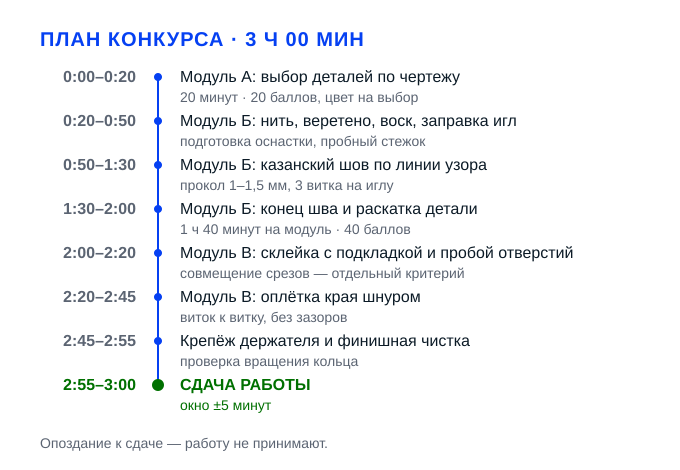
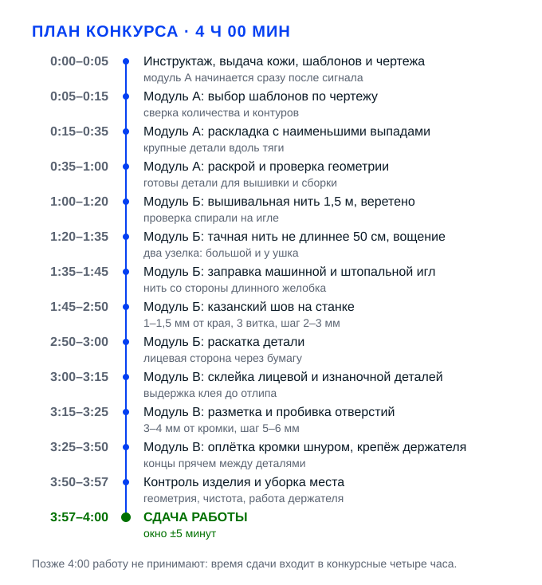
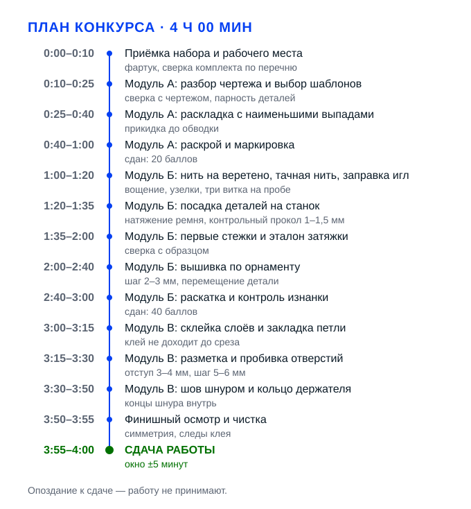

Мастер народно-художественных промыслов (изготовление изделий из кожи) (Р)
Задания ниже — официальные файлы «Абилимпикс» (источник: abilympics-russia.ru), разложенные по категориям. Решения написаны по тексту задания, регламенту и критериям оценки; в них указано, что именно проверяет эксперт.
Школьник
14–16 лет, базовый уровень заданияВыдержка из официального конкурсного задания: страницы, относящиеся к категории «Школьник» (стр. 5–7 источника).
Пошаговое решение
Задание для школьников — ключница в технике кожаной мозаики «каюлы кун», собранная казанским швом и оплетённая шнуром. Конкурс длится 3 часа и разбит на три модуля: 20 минут на выбор деталей по чертежу (20 баллов), 1 час 40 минут на вышивку лицевой стороны казанским швом (40 баллов) и 1 час на сборку изделия с подкладкой, оплётку шнуром и крепёж держателя (40 баллов), всего 100 баллов. Цвет деталей вы выбираете сами, а вот геометрия, номера деталей и качество шва заданы чертежом и критериями, поэтому первые двадцать минут решают, будет ли остальное время потрачено на шитьё или на переделку. Внимание стоит держать на трёх вещах: детали должны совпасть с чертежом без подрезки, нить должна быть скручена и навощена так, чтобы спираль держалась на игле, а проколы — идти ровно в 1–1,5 мм от края, потому что именно по этим признакам эксперт считает баллы в модулях А, Б и В.

Задача 1. Выбрать детали изделия по чертежуМодуль А · 20 баллов · 20 минут
Первый модуль выглядит простым — разложить детали и сверить их с чертежом, — но он даёт 20 баллов из 100 и задаёт всю дальнейшую работу. Вы получаете набор уже раскроенных деталей из одной кожи, чертёж ключницы с видами спереди и сзади и должны собрать комплект, точно соответствующий чертежу: по контуру, количеству, зеркальности парных деталей и направлению швов. Цвет выбираете вы, и это единственная свободная часть модуля: ошибочно взятая деталь не исправится хорошей вышивкой — она просто не встанет на место.
Действие 1.1. Развернуть рабочее место и пройти инструктаж
Шаг 1.1.1
Надеваем фартук — обычный тканевый или клеенчатый, он обязателен по разделу 3.1 конкурсного задания, — и переобуваемся в удобную сменную обувь на нескользящей подошве. Волосы убираем под резинку или заколку полностью, снимаем кольца, часы и браслеты: они цепляются за натянутый ремень станка и за шнур. Рукава подворачиваем выше локтя, чтобы манжета не мешала прижимать детали к бруску и не смахивала разложенный орнамент.
Спецодежда и обувь вынесены в отдельные требования охраны труда, и их отсутствие эксперт фиксирует до старта — это единственная причина, по которой участника могут не допустить к работе, не начав отсчёт времени. Кроме того, кожа, клей и воск пачкают одежду необратимо, а скользкая подошва на гладком полу площадки при работе с шилом в руке — прямая травма, после которой модули Б и В вообще не будут оценены.
Проверьте себя по трём признакам: фартук застёгнут и закрывает грудь и колени, обувь закрытая и сухая, волосы не выбиваются ни спереди, ни сзади. Украшений на руках нет, ногти короткие — иначе при натяжении ремня кольцо оставит вмятину на коже, а длинный ноготь продавит лицевую сторону детали.
Типичная ошибка — прийти в футболке с расчётом надеть фартук «потом»: клей попадает на одежду уже в первые минуты модуля В, а замечание по спецодежде эксперт записывает в оценочный лист до старта. Вторая ошибка — оставить кольцо «оно не мешает»: на станке оно бьётся о брусок, царапает лицевую сторону и сбивает прокол на 1–2 мм.
Эксперт осматривает участника до старта и отмечает комплектность спецодежды в оценочном листе, а дальше поглядывает, остаётся ли фартук на месте к концу модуля Б — снятый «чтобы не мешал» фартук тоже считается нарушением.
Шаг 1.1.2
Раскладываем инструмент по зонам, а не кучей в центре стола: справа — шило с закреплённой машинной иглой, штопальная игла и веретено с нитью, слева — ножницы, нож, линейка, пробойник и кусочек натурального воска, по центру — только детали кроя и чертёж. Клей и шнур держим закрытыми и подальше от раскладки, потому что капля клея на лицевой стороне кожи не смывается и не шлифуется.
Двадцать минут модуля А — это очень мало для поиска инструмента: если шило лежит под чертежом, вы теряете не секунды, а минуты, и они вычитаются из времени вышивки. Разделение на зоны нужно ещё и потому, что рабочая рука с шилом движется по короткой дуге над бруском, и любой предмет в этой зоне превращается в помеху, о которую цепляется рукоятка.
Проверьте: до любого инструмента вы дотягиваетесь одной рукой, не вставая, и при этом ни один предмет не лежит на пути движения шила. Клей закрыт, воск на виду, ножницы сомкнуты и лежат кольцами к вам, а не лезвиями.
Ошибка новичка — высыпать всё из лотка на стол «чтобы было под рукой»: воск крошится, стружка от кожи смешивается с клеем, и к модулю Б на столе каша, в которой невозможно найти нужную иглу. Вторая ошибка — держать клей открытым с начала конкурса: он заветривается, тянет нити и пачкает детали, которые вы просто перекладываете.
Организация рабочего места входит в измеримый критерий по модулю А: эксперт смотрит, есть ли порядок в зонах и не приходится ли участнику искать инструмент во время работы, а не только на старте.
Шаг 1.1.3
Осматриваем станок для кожаной мозаики до начала шитья: брусок должен быть чистым и сухим, кожаный ремень — целым, без трещин и залоснившихся участков, а щель в середине ремня — свободной от старой кожи и ниток. Проверяем верёвку, соединяющую ремень с педалью: она должна быть привязана на обоих концах и не проскальзывать в узле. Нажимаем педаль и отпускаем — ремень должен натянуться и вернуться сам.
Станок — единственное оборудование, которое напрямую влияет на качество шва: при слабом натяжении детали сдвигаются во время прокола, и стежки уходят от края дальше допустимых 1–1,5 мм. Проверить станок до старта — это две минуты, а переделка кривого шва в модуле Б стоит сорок минут из ста, причём распустить казанский шов без следа на коже почти невозможно.
Натяните педаль до упора: ремень прижимает пробный обрезок кожи так, что его нельзя сдвинуть пальцем, щель в середине расходится на 8–10 мм и открывает рабочую зону. После отпускания педали ремень возвращается без перекоса, а верёвка не соскочила с ролика.
Самая частая ошибка — сесть за станок, не проверив натяжение: первый стежок делается, детали едут, прокол уходит на 3–4 мм от края, и весь ряд приходится перекалывать. Вторая ошибка — натянуть ремень так сильно, что щель не расходится: шило упирается в кожу и рвёт её вместо аккуратного прокола.
Перед стартом эксперт проходит по площадке и проверяет, все ли станки настроены одинаково — это условие равных возможностей, — а в процессе смотрит, не переделывает ли участник натяжение под каждую деталь.
Действие 1.2. Разобрать чертёж ключницы и снять размеры
Шаг 1.2.1
Кладём чертёж перед собой и читаем его как инструкцию, а не как картинку: сначала вид спереди — там видно лицевую сторону с орнаментом и места, где проходит казанский шов, затем вид сзади — там подкладочная деталь, крепёж держателя и линия оплётки. Отмечаем карандашом на самом чертеже (или на отдельном листе) каждую позицию и её номер, чтобы в наборе деталей искать не «похожую», а именно эту.
У ключницы детали почти одинаковы по форме и различаются на 5–10 мм, поэтому выбор «на глаз» почти всегда даёт ошибку, которая выясняется только при сборке. Разбор чертежа до раскладки — это те самые 20 минут модуля А, и они окупаются: на сборку по чертежу уходит 3–4 минуты, на подгонку вслепую — весь остаток модуля.
Вы можете назвать по памяти, сколько деталей на лицевой стороне, сколько на подкладочной и где проходит линия вышивки. Если хотя бы одна позиция чертежа не понятна — это повод сразу позвать эксперта, а не додумывать: разъяснение по чертежу не считается подсказкой.
Ошибка — начать с раскладки деталей, «чтобы увидеть, как это выглядит»: детали перепутываются, а часть из них ложится лицевой стороной вниз, после чего на коже остаются отпечатки от стола. Вторая ошибка — читать только вид спереди и забыть про вид сзади, где стоит крепёж держателя: без него изделие в модуле В не закрывается.
Эксперт смотрит, работает ли участник по чертежу: лежит ли чертёж на столе в рабочей зоне, сверяется ли с ним, отмечены ли позиции. Именно по этому признаку отличают осознанный выбор от угадывания.
Шаг 1.2.2
Берём линейку и снимаем с чертежа габариты ключницы, ширину и высоту каждой детали, а также расстояние от края до линии прокола. Записываем цифры столбиком на свободном поле листа и рядом с каждой ставим номер детали — так при выборе вы сравниваете не «на глаз», а два числа. Особое внимание парным деталям: у них одинаковый размер, но противоположная ориентация, и на чертеже они выглядят почти идентично.
Критерий модуля А на 20 баллов сформулирован как «выбрать детали изделия по чертежу» и относится к измеримым, то есть эксперт проверяет соответствие линейкой и наложением, а не по общему впечатлению. Записанные размеры превращают выбор в проверяемую операцию: видно, что деталь 42 мм, а не «примерно такая».
У вас на листе есть таблица из пяти-семи строк с номерами и размерами, и любую деталь вы можете проверить за десять секунд: приложили линейку — совпало. Парные детали отмечены как «левая» и «правая» или стрелкой направления, чтобы их не перепутать при раскладке.
Частая ошибка — доверять глазомеру на деталях разницей в 5 мм: при сборке лицевая и подкладочная не совпадают по срезам, и вместо ровной оплётки получается волна. Вторая ошибка — не отметить ориентацию парных деталей: одну кладут зеркально, орнамент разворачивается, и композиция перестаёт читаться.
Эксперт проверяет выбор наложением детали на чертёж и линейкой по контрольным размерам, поэтому важно, чтобы детали лежали на столе, а не были уже подклеены или подрезаны.
Шаг 1.2.3
Раскладываем весь полученный набор деталей на столе лицевой стороной вверх в том порядке, в каком они стоят на чертеже, и мысленно собираем ключницу целиком, ничего не сдвигая и не подрезая. Кладём рядом чертёж в натуральную величину и накрываем детали прозрачной плёнкой или просто сверяем по контуру, начиная с самой крупной лицевой детали. Всё, что осталось лишним, откладываем в сторону отдельной кучкой — не выбрасываем и не отрезаем.
Раскладка «как на чертеже» показывает ошибку до того, как она станет необратимой: пока детали не склеены и не прошиты, любую можно заменить. На этом этапе теряется не больше двух минут, а после первого прокола исправление стоит уже половины модуля Б, потому что след от шила на коже остаётся навсегда.
Собранная на столе картинка совпадает с чертежом по контуру и по количеству деталей, лицевые стороны смотрят вверх, парные детали не перевёрнуты. Лишние детали лежат отдельно, и вы можете объяснить, почему каждая из них не нужна.
Ошибка — начать подрезать «слишком большую» деталь ножницами: срез уходит от чертежа, кромка становится волнистой, и в модуле В оплётка ложится с зазором. Вторая ошибка — отложить лишние детали в общую кучу: через десять минут вы уже не помните, какие из них основные, и берёте в работу не ту.
Эксперт подходит к столу в первые минуты модуля А и фиксирует, сверяется ли участник с чертежом при раскладке. Дальше он проверяет комплект наложением, и лишние детали в работе трактуются как ошибка выбора.
Действие 1.3. Отобрать детали и проверить качество кожи
Шаг 1.3.1
Отбираем детали по номерам и размерам, каждый раз прикладывая линейку к контрольному участку — обычно это самая длинная сторона детали. Отобранное сразу выкладываем на чертёж, а не в стопку: так видно, что комплект собран, и не приходится пересчитывать заново. На этом шаге мы ещё ничего не клеим, не прокалываем и не обрезаем — любая правка возможна только через эксперта. Если две детали похожи по форме, решает размер и номер, а не совпадение «на глаз».
Модуль А оценивается в 20 баллов именно за правильный выбор, и баллы эти снимаются один раз, но навсегда: если в комплекте оказалась деталь от другого варианта, дальше вся работа идёт по чужому чертежу, и модули Б и В теряют баллы за несоответствие изделия заданию. Спокойный пересчёт по номерам занимает минуту и закрывает этот риск полностью.
Комплект выложен на чертеже без зазоров и нахлёстов, все номера совпали, ни одна деталь не лежит поверх другой. Пересчитайте детали вслух — количество должно совпасть с числом позиций на чертеже. Затем пройдите по контуру пальцем: кромки деталей должны идти точно по линии чертежа, без выступов и завалов.
Ошибка — брать детали «по форме, она же подходит»: у ключницы верхняя и нижняя детали отличаются на несколько миллиметров, и подмена видна только при склейке, когда срезы перестают совпадать. Вторая ошибка — отобрать детали и сразу убрать чертёж со стола: сверить комплект потом будет не с чем.
Эксперт проверяет комплект целиком, накладывая детали на чертёж, и отдельно смотрит, не осталось ли на столе деталей, которые участник «на всякий случай» держит рядом.
Шаг 1.3.2
Осматриваем лицевую сторону каждой детали на свету под углом: ищем царапины, заломы, пятна, следы от инструмента и участки, где кожа растянута и стала тоньше. Отдельно проверяем кромки — они должны быть ровными, без задиров и «бахромы», потому что именно к кромке пойдёт прокол на 1–1,5 мм. Деталь с дефектом сразу откладываем в сторону брака, даже если она подходит по размеру.
Кожа — натуральный материал с разной плотностью на разных участках, и дефект на лицевой стороне не спрячется ни вышивкой, ни оплёткой: казанский шов идёт по стыку, а не поверх. Критерий по модулю Б включает качество лицевой стороны, и деталь с заломом, поставленная в центр композиции, снижает оценку сразу по двум пунктам.
Проведите по детали пальцем в двух направлениях: поверхность должна быть ровной, без «ступенек» и мягких провалов. На просвет тонкие участки выглядят светлее — если такое место попадает под прокол, деталь лучше заменить.
Самая частая ошибка — взять деталь с заломом и рассчитывать «разгладить утюгом»: на чемпионате утюг для кожи не предусмотрен, а нагрев без прокладки убивает лицевую поверхность. Вторая ошибка — не заметить растянутый участок: при натяжении на станке он вытягивается, и стык идёт волной.
Эксперт осматривает лицевую сторону при оценке модуля Б, но обращает внимание и на то, как участник отбирал материал: отложенные дефектные детали говорят о понимании материала.
Шаг 1.3.3
Сравниваем детали по толщине: сжимаем каждую между большим и указательным пальцем и проверяем на ощупь, одинакова ли плотность, а затем складываем две соседние детали стык в стык и смотрим, нет ли перепада по высоте. Если одна деталь заметно толще, кладём её в менее заметную часть композиции — под подкладку или к краю, а не в центр узора. Разнотолщинность в 0,3–0,5 мм уже ощущается при затяжке шва.
Казанский шов стягивает детали встык и одновременно окаймляет стык спиралью, поэтому разница в толщине сразу видна как «ступенька» на лицевой стороне. Вышивка на таком стыке ложится неровно, спираль с одной стороны проваливается, и оценка за технику шва падает, хотя сама работа выполнена правильно.
Сложите детали стык в стык на ровной поверхности и проведите пальцем поперёк стыка: перепад не должен ощущаться как порог. Посмотрите на стык сбоку на уровне стола — линия должна быть одной высоты. Если перепад всё же есть, поменяйте деталь местами с более толстой соседкой и проверьте снова.
Ошибка — распределять детали по цвету, не глядя на толщину: к моменту вышивки пара с разницей в полмиллиметра даёт волну, и исправить её затяжкой нельзя, только перекалывать. Вторая ошибка — пытаться выровнять толстую деталь ножом: срез получается косым, кромка теряет ровность.
При оценке шва эксперт ведёт пальцем по стыку и смотрит на него сбоку — именно так проверяется перепад толщины, поэтому раскладка «толстое к краю» читается как профессиональный выбор.
Шаг 1.3.4
Если деталь не подходит по размеру, имеет дефект или её просто нет в наборе, поднимаем руку и приглашаем эксперта, показывая конкретно: номер детали, что именно не так и на сколько миллиметров расхождение с чертежом. Самостоятельно не подрезаем, не подклеиваем и не берём деталь из соседнего набора — это нарушение равных условий. Время модуля А в этот момент не останавливается, поэтому обращение должно быть коротким и по делу.
По особым указаниям конкурсного задания всем участникам выдаются одинаковый набор деталей из одной и той же кожи и одинаковый инструмент, а замену проводит только эксперт. Своевольная подрезка выводит изделие из размеров чертежа, и в модуле В лицевая деталь перестаёт совпадать с подкладочной по срезам — а это уже две позиции оценки из трёх.
Вы получили от эксперта замену или внятное объяснение, и это отмечено в протоколе. В работе у вас только те детали, которые выданы по вашей позиции, а бракованная деталь лежит отдельно и не возвращена в набор.
Ошибка — молча подрезать «чтобы влезло»: кромка уходит, и оплётка в модуле В идёт по кривой, забирая баллы за совмещение срезов. Вторая ошибка — стесняться позвать эксперта и потерять десять минут на попытки исправить деталь самостоятельно.
Эксперт фиксирует обращение участника и выдаёт замену, если она предусмотрена; самостоятельная подрезка деталей кроя в модуле А оценивается как несоответствие чертежу.
Действие 1.4. Выстроить композицию и зафиксировать раскладку
Шаг 1.4.1
Выбираем цветовое решение из двух-трёх оттенков кожи: основной фон и один-два цвета орнамента, причём разница по светлоте должна быть заметной — тёмный узор на светлом фоне или наоборот. Прикладываем детали друг к другу при разном освещении, в том числе отойдя на два шага, чтобы увидеть рисунок целиком. Ничего не клеим: цвет можно менять до последней минуты модуля А.
Цвет деталей по конкурсному заданию — на усмотрение участника, то есть прямых баллов за конкретную палитру нет, но есть оценка композиции и качества лицевой стороны в модуле Б. Слишком близкие оттенки «съедают» орнамент: издалека ключница выглядит однотонной, и работа теряет главное — читаемый мозаичный узор.
Отойдите от стола на два-три шага и прищурьтесь: если узор всё ещё виден как рисунок, а не как пятно, контраст достаточный. Проверьте на дневном свете и под лампой — при разном освещении оттенки кожи ведут себя по-разному.
Ошибка — брать три оттенка одного тона: на столе это выглядит богато, а на готовом изделии узор пропадает. Вторая — выбирать слишком контрастную пару без промежуточного цвета: мозаика становится жёсткой, а казанский шов на границе тёмного и светлого читается как грубая полоса.
Композиция оценивается в модуле Б вместе с качеством вышивки: эксперт смотрит на изделие с расстояния и проверяет, читается ли орнамент и держится ли ритм повтора деталей.
Шаг 1.4.2
Выкладываем орнамент на столе в натуральную величину строго по чертежу, начиная от центральной оси: сначала центральная деталь, затем симметричные пары влево и вправо, и только потом краевые. Каждую пару выравниваем по линии, проведённой карандашом на листе под деталями, — так симметрия видна сразу. Ничего не приклеиваем, пока раскладка не совпадёт с чертежом полностью.
Кожаная мозаика держится на ритме и симметрии: узор казанских ичигов строится на повторяющихся элементах, и сдвиг одной детали на 2 мм читается как небрежность. Проверка симметрии на столе занимает минуту, а после вышивки исправлять её нельзя вообще — шов уже соединил детали встык.
Проведите осевую линию и измерьте линейкой расстояния от неё до парных деталей: они должны совпадать с точностью до 1 мм. Посмотрите на раскладку в зеркало или через камеру телефона — перевёрнутое изображение показывает перекос лучше, чем прямой взгляд.
Ошибка — собирать узор «от края к центру»: последняя деталь не встаёт в середину, и появляется зазор в 2–3 мм, который уже нечем закрыть. Вторая ошибка — выравнивать на глаз без осевой линии: на готовом изделии перекос виден сразу и оценивается как дефект композиции.
Эксперт при оценке модуля Б смотрит на осевую симметрию и ритм: сдвинутая пара деталей читается как ошибка раскладки, даже если сам шов выполнен чисто.
Шаг 1.4.3
Фиксируем раскладку так, чтобы её нельзя было потерять: обводим контуры деталей тонкой линией на листе-подложке и подписываем номера, а рядом ставим стрелку направления узора. Если разрешено — фотографируем раскладку на телефон до начала работы. Записываем на этом же листе время старта модуля Б, чтобы к 1:40 от начала модуля вышивка была закончена.
Между выбором деталей и вышивкой проходит не меньше часа, за который детали сдвигаются, а часть из них переворачивается. Подписанная подложка возвращает раскладку за десять секунд и не даёт собрать узор заново, уже с ошибками. Контроль времени здесь же: на модуль Б отведено 1 час 40 минут, и это самая дорогая часть задания — 40 баллов.
На подложке видны контуры всех деталей, номера и стрелки, а сдвинутая деталь возвращается на своё место без раздумий. Вы знаете точное время окончания модуля А и момент, к которому должен быть закончен шов, — оба записаны на листе.
Ошибка — не фиксировать раскладку и через час собирать узор по памяти: две детали меняются местами, и на изделии появляется асимметрия, которую невозможно исправить. Вторая — потерять счёт времени: если выбор деталей занимает 35 минут вместо 20, модуль Б не уложится в 1 час 40 минут, а недоделанный шов стоит дороже любой ошибки раскладки.
Эксперт объявляет контрольные точки времени и следит, переходит ли участник к следующему модулю по плану; затянутый модуль А виден по тому, что вышивка начинается позже объявленного времени.
Задача 2. Вышить лицевую сторону казанским швомМодуль Б · 40 баллов · 1 час 40 минут
Самый дорогой модуль: 1 час 40 минут и 40 баллов из 100. Здесь вы собираете орнаментальную деталь встык казанским швом — тем швом из накрученных узлом нитей, который соединяет куски кожи и окаймляет мозаичный узор спиралью. Работа идёт с изнанки на станке, где детали прижаты к бруску кожаным ремнём, а порядок движений строго задан: прокол первой детали в 1–1,5 мм от края, три витка вышивальной нити на машинную иглу, прокол второй детали, петля, штопальная игла с тачной нитью, затяжка. Ошибки здесь необратимы, поэтому первые 15 минут уходят на подготовку нити и заправку игл.
Действие 2.1. Подготовить и скрутить вышивальную нить
Шаг 2.1.1
Отматываем от клубка примерно полтора метра нити — это тот размер, который указан в конкурсном задании, — и складываем её свободной петлёй, не натягивая. Конец петли надеваем на кончик веретена и затягиваем так, чтобы нить держалась и не соскальзывала при вращении. Длину отмеряем по линейке на столе или по локтю, но не «на глаз», потому что от неё зависит, хватит ли скрутки на всю лицевую сторону.
Полутора метров хватает на сплошную скрутку, из которой потом набирается рабочая длина шва; более короткий отрезок приходится наращивать посреди узора, а узел в казанском шве недопустим — он сразу виден на лицевой стороне. Полтора метра — не случайная цифра: это длина, при которой веретено успевает скрутить нить равномерно по всей длине, без слабых участков.
Петля сидит на конце веретена плотно: потяните за свободный конец — нить не соскакивает. Длина отмеренного участка 1,4–1,6 м, нить не перекручена в жгут ещё до намотки и лежит свободно. Проверьте, что нить не зацепилась за край стола или за инструмент: любой зацеп превратится в узел при скрутке.
Ошибка — отмерить нить «пока не кончится клубок»: длинный отрезок не скручивается равномерно, в середине остаются слабые места, и спираль на игле расползается. Вторая ошибка — завязать нить на веретене узлом вместо петли: узел при вращении смещается и рвёт нить у самого конца.
Эксперт смотрит на подготовку нити в первые минуты модуля Б: наличие веретена в работе и отмеренную длину он проверяет визуально, а качество скрутки — по первому же стежку.
Шаг 2.1.2
Натягиваем нить левой рукой чуть выше веретена и начинаем вращать веретено правой, одновременно ведя пальцами по нити и отпуская её небольшими участками по 10–15 см. Скрутка должна идти при лёгком натяжении: нить сама ложится виток к витку, а не комкается. Как только участок скручен, наматываем его на веретено и переходим к следующему, не давая скрутке раскрутиться назад.
Именно на этом шаге получается та самая спираль, ради которой существует казанский шов: правильно скрученная нить укладывается на иголке ровными витками и держит форму без клея. Если скрутка слабая, витки расползаются при первом же проколе, и шов получается рыхлым, а если перекрутить — нить ложится петлями и рвётся при затяжке.
Возьмите скрученный участок и отпустите: он должен остаться закрученным, а не раскрутиться в прямую нить. Нить на веретене лежит ровными рядами, без шишек, и не путается при сходе. Если провести по скрутке пальцем, витки должны идти под одинаковым углом, а не «ёлочкой».
Классическая ошибка — крутить веретено быстро и без контроля натяжения: нить идёт «бородой», часть витков ложится в обратную сторону, и на игле получается комок вместо спирали. Вторая ошибка — скрутить всю длину сразу и только потом начать шить: за время шитья скрутка ослабевает, и к середине узора спираль уже не держится.
Эксперт проверяет первый стежок: если спираль на игле ровная и не расползается, значит нить подготовлена правильно, и дальше он оценивает уже равномерность шва.
Шаг 2.1.3
Проверяем скрутку на машинной игле до начала работы: наматываем нить на иглу три раза, как это будет делаться в каждом стежке, и отпускаем. Витки должны лечь плотно друг к другу и остаться на игле спиралью, а не сползти вниз или развалиться. Если спираль держится — продолжаем; если нет, доматываем скрутку на веретене и повторяем проверку. На подготовку нити и заправку уходит до 15 минут модуля, и это время заложено в план не зря.
Это единственная проверка, которая позволяет поймать плохую скрутку до первого прокола кожи, то есть до необратимого следа. Три витка — рабочая норма для казанского шва, и именно из них складывается объёмное окаймление узора, за которое дают баллы по критерию техники исполнения.
Три витка лежат на игле ровной спиралью высотой 2–3 мм, не съезжают при встряхивании и не раскручиваются, если потянуть за свободный конец. Спираль упругая: при сжатии пальцами возвращает форму. Между витками нет просвета, а сама спираль не сползает к основанию иглы даже после трёх-четырёх встряхиваний.
Ошибка — начать шить, проверив скрутку «примерно»: на коже спираль ведёт себя иначе, чем на весу, и расползается уже на третьем стежке. Вторая ошибка — намотать больше трёх витков «для надёжности»: спираль получается слишком толстой, стык деталей вспучивается, и лицевая сторона идёт волной.
Эксперт смотрит на высоту и плотность спирали в готовом шве: ровные витки одинаковой высоты по всей длине узора — признак правильной подготовки нити. Слабая скрутка выдаёт себя уже на первом стежке, и эксперт мысленно отмечает, придётся ли снимать баллы за технику.
Действие 2.2. Подготовить тачную нить и навощить её
Шаг 2.2.1
Берём вспомогательную (тачную) нить и натираем её натуральным воском по всей длине: прижимаем нить к бруску воска и протягиваем между большим и указательным пальцем два-три раза, пока поверхность не станет слегка липкой и матовой. Воск должен лечь тонким слоем, а не комками. Кусочек воска после этого кладём рядом со станком — он ещё понадобится для фиксации нити на ручке шила.
По конкурсному заданию вспомогательную нить обязательно натирают натуральным воском: она соединяет кусочки кожи и служит основой для спирали вышивальной линии. Навощённая нить не пушится, не цепляется за кромку кожи и легче протягивается в петлю, а главное — воск придаёт ей жёсткость, без которой спираль провисает.
Проведите навощённой нитью по тёмной поверхности: должен остаться тонкий матовый след. Нить не липнет к пальцам комком, не крошится и проходит между пальцами ровно, без задиров. Посмотрите на нить на свету — воск лежит тонким слоем по всей длине, а не отдельными пятнами у концов.
Ошибка — натирать воском только концы нити: середина остаётся сухой, и именно там нить начинает пушиться и застревать в ушке. Вторая ошибка — взять слишком много воска: комочки снимаются ушком иглы, забивают отверстие, и нить рвётся в самый неподходящий момент.
Эксперт обращает внимание на наличие воска на рабочем месте и на то, повторно ли вощится нить по ходу шва, — это прямо прописано в описании технологии.
Шаг 2.2.2
Отрезаем вторую тачную нить — ту, что пойдёт в штопальную иглу, — длиной не более 50 см, как требует задание. На одном конце завязываем большой узелок, а на другом, у самого ушка, — маленький: он держит нить в игле, но при этом свободно проходит сквозь кожу. Концы обрезаем наискось, чтобы они не расслаивались при вдевании. Нить перед этим обязательно вощим — сухая в ушке быстро махрится.
Пятьдесят сантиметров — предел, за которым нить начинает путаться при каждом протягивании через петлю, потому что её приходится протаскивать полностью. Два узелка разного размера — это рабочая хитрость шва: маленький фиксирует нить в ушке, а большой служит стопором, до которого нить протягивают в петлю, чтобы шов затянулся равномерно и не провалился.
Длина нити 45–50 см, узелки разные по размеру и затянуты плотно: маленький проходит в ушко вместе с нитью, большой не проскакивает в прокол. Потяните за конец — нить не выскальзывает из иглы. Проверьте, что между узелками нет перекрутов и узел не развязался, пока вы вдевали нить.
Ошибка — взять тачную нить в метр «чтобы хватило на весь узор»: она путается, цепляется за ремень станка и рвётся, а каждый обрыв — это новый узел посреди шва. Вторая ошибка — сделать оба узелка одинаковыми: маленький не держит нить в ушке, большой не даёт затянуть стежок до конца.
Эксперт проверяет заправку игл в начале модуля Б и отдельно смотрит, не тянет ли участник за нить с усилием, которое говорит о неправильном узелке. Ровная работа без рывков — косвенный признак того, что тачная нить подготовлена по технологии.
Шаг 2.2.3
Проверяем подготовленную тачную нить на обрезке кожи: прокалываем шилом, протягиваем нить до большого узелка и затягиваем. Нить должна идти с небольшим сопротивлением, без скрипа и без рывков, а на выходе не оставлять пушистого следа. Если нить рвётся или застревает, перевощиваем её или меняем на более тонкую. Пробу делаем на том же сорте кожи, что и рабочие детали, — на другом материале результат будет иным.
Тачная нить — основа, на которую ложится спираль, и если она идёт туго, затяжка получается неравномерной: где-то стежок перетянут и стык морщится, где-то недотянут и остаётся щель. Проверка на обрезке стоит тридцати секунд и снимает риск испортить первые стежки на изделии, которые переделать уже нельзя.
На обрезке кожи нить прошла без обрыва, след прокола аккуратный, кромка не разлохматилась, узелок остановил нить именно там, где нужно. Усилие протягивания одинаковое на трёх подряд проколах. Если на третьем проколе нить пошла туже, значит воск стёрся и её пора натереть заново.
Ошибка — пропустить пробу и начать сразу с изделия: первая же затяжка рвёт нить, а на коже остаётся прокол, который не закрыть. Вторая ошибка — срезать заусенец с прокола ножницами: кромка теряет ровность, и её приходится прятать под оплётку, что меняет геометрию изделия.
Эксперт оценивает, насколько ровно идёт тачная нить по изнанке: пушистые, разлохмаченные участки на обратной стороне видны при проверке сборки в модуле В.
Действие 2.3. Заправить машинную и штопальную иглы
Шаг 2.3.1
Разворачиваем шило так, чтобы рукоятка с машинной иглой была в рабочем положении, и находим на игле два желобка: короткий и длинный. Тачную нить вводим со стороны длинного желобка, а со стороны короткого завязываем узелок — нить должна идти по каналу, а не рядом с ним. Вдеваем с помощью петли из той же нити, если ушко узкое, и следим, чтобы нить не соскользнула вбок.
Желобки на машинной игле — это направляющие: длинный канал держит нить по всей длине прокола и не даёт ей перетереться о кожу, короткий работает как стопор для узелка. Если ввести нить не с той стороны, она выходит из прокола сбоку, петля под иглой не образуется, и стежок не затягивается вовсе.
Нить видна в длинном желобке по всей длине иглы, не выходит за её пределы и свободно ходит при потягивании. Узелок сидит у короткого желобка и не проваливается в ушко при натяжении. Проведите ногтем вдоль иглы: нить должна идти в канале, а не лежать сбоку на поверхности.
Ошибка — вдеть нить «как получится» и завязать узелок на стороне длинного желобка: при проколе нить зажимается между кожей и иглой, петля не формируется, и шов не затягивается вообще. Вторая ошибка — слишком толстая нить в узком желобке: она истирается за десять стежков и рвётся внутри кожи.
Эксперт проверяет заправку машинной иглы, потому что от неё зависит сам механизм шва: неправильно заправленная игла даёт характерный «пустой» стежок без петли.
Шаг 2.3.2
Закрепляем нить на ручке шила небольшим кусочком воска, прижимая её к дереву так, чтобы остался свободный участок длиной 5–7 см для работы. Кусочек воска не должен закрывать ушко и мешать движению иглы. По мере шитья воск снимает с нити лишний ворс и заново вощит её на выходе из иглы. Раз в двадцать стежков проверяем, не размягчился ли воск в руке и держит ли он нить так же плотно, как в начале.
Закреплённая на ручке нить не выдёргивается из ушка при затяжке — а затягивать приходится с усилием, потому что шов должен стянуть два слоя кожи. Кусочек воска в этом узле работает как очиститель: он снимает лишний ворс, который иначе набивается в прокол и делает стык грубым.
Потяните за нить у иглы: она не выходит из ушка, а упирается в закрепление на ручке. Кусочек воска держится, но не раздавливает нить, и на выходе из иглы нить остаётся ровной, без пуха. Через двадцать стежков повторите проверку — воск в тёплой руке размягчается и требует подтяжки.
Ошибка — примотать нить слишком высоко на ручке: свободного участка не остаётся, игла не доходит до упора, прокол получается неполным. Вторая ошибка — закрепить нить без воска, скотчем или изолентой: следы клея переходят на кожу и на пальцы.
Эксперт смотрит на этот узел подготовки как на часть технологической грамотности: закреплённая нить и кусочек воска сразу показывают, что участник знает технологию, а не импровизирует.
Шаг 2.3.3
Заправляем штопальную иглу тачной нитью с двумя узелками: вдеваем конец с маленьким узелком, протягиваем до тех пор, пока маленький узелок не встанет у самого ушка, а большой останется на другом конце. Иглу держим за середину, чтобы не погнуть, и проверяем, что она не цепляется за пальцы — значит, заусенцев на ней нет. Если ушко узкое, помогаем петлёй из той же нити, а не расширяем ушко иглой или ножницами.
Штопальная игла — единственный инструмент, который протаскивает тачную нить в петлю под машинной иглой, и её ушко должно свободно проходить в эту петлю. Маленький узелок у ушка фиксирует нить, большой на другом конце служит ограничителем протяжки: до него нить тянут, и на этом шов затягивается.
Игла вставлена в нить до ушка, узелок не развязался, игла не гнётся при нажатии пальцем на острие. Протяните иглу с нитью через пробный прокол на обрезке — она проходит без рывка. Острие не цепляет кожу: если чувствуется задир, иглу надо заменить, иначе она будет рвать кромку на каждом стежке.
Ошибка — вдеть нить в штопальную иглу без маленького узелка: при протяжке нить выскакивает из ушка, и её приходится вдевать заново на каждом стежке. Вторая — погнуть иглу при вдевании: кривая игла не попадает в петлю и рвёт кожу по кромке.
Эксперт оценивает скорость и чистоту работы: правильно заправленная штопальная игла позволяет делать стежок за 5–7 секунд, и по темпу видно, готова ли оснастка.
Шаг 2.3.4
Делаем пробный стежок на обрезке кожи того же сорта, что и детали: прокалываем, наматываем три витка на машинную иглу, прокалываем второй кусочек, протаскиваем штопальную иглу с тачной нитью в петлю и затягиваем. Смотрим на лицевую сторону: спираль должна лечь ровно, стык — без щели, кожа — без морщин. Пробный стежок занимает минуту и показывает всю настройку сразу.
Пробный стежок — единственный способ проверить всю цепочку до необратимого прокола: скрутку, воск, заправку, натяжение ремня и силу затяжки. На деталях такого шанса не будет: казанский шов распустить без следа невозможно, а каждый лишний прокол в 1–1,5 мм от края ослабляет кромку.
На пробном стежке спираль ровная, стык закрыт без нахлёста, лицевая сторона гладкая. Если потянуть кусочки в стороны — шов не расходится и кожа не рвётся рядом с проколом. С изнанки видна одна аккуратная протяжка тачной нити, без узлов и петель: пробный стежок должен выглядеть так же, как будущий шов на изделии.
Ошибка — пропустить пробу и начать с центральной детали: любая ошибка настройки вылезает именно на первом стежке и остаётся на самом видном месте. Вторая ошибка — пробовать на другом сорте кожи: на тонком обрезке шов ложится иначе, чем на рабочей детали.
Эксперт замечает наличие пробного стежка и оценивает по нему квалификацию: ровная спираль на пробе означает, что дальше работа пойдёт с хорошим темпом.
Действие 2.4. Закрепить детали на станке
Шаг 2.4.1
Раскладываем две первые заготовки на бруске станка вплотную друг к другу лицевой стороной вниз, совмещая кромки по линии шва. Кромки должны касаться, но не наезжать одна на другую — при нахлёсте стык получается ступенькой. Следим, чтобы линия шва шла вдоль бруска, а не по диагонали: тогда проколы будут идти ровно в 1–1,5 мм от края. Детали кладём в том порядке, в каком они стоят на чертеже, иначе к середине узора вы упрётесь в тупик.
Казанский шов сшивает детали встык, и вся геометрия узора зависит от того, как они лежат на бруске: сдвиг на 2 мм на станке превращается в заметный перекос на лицевой стороне. Лицевая сторона вниз — обязательное условие технологии: шьют с изнанки, а на лице остаётся окаймление спиралью.
Проведите пальцем по стыку: он должен быть ровным, без ступеньки и без зазора. Кромки совпадают по всей длине, направление шва параллельно краю бруска, лицевая сторона смотрит вниз. Проверьте, что детали не перекрывают друг друга у концов: нахлёст в 1 мм на длине 8 см уже даёт заметный бугор.
Ошибка — положить детали лицевой стороной вверх: шов пойдёт по лицу, и вместо окаймления получится грубая строчка, за которую снимут баллы за технику. Вторая ошибка — оставить нахлёст в 1–2 мм: стык вспучивается, и спираль ложится с перекосом.
Эксперт проверяет положение деталей на станке: лицевая сторона вниз и стык без нахлёста — базовые условия, без которых шов не считается выполненным по технологии.
Шаг 2.4.2
Прижимаем детали к бруску кожаным ремнём и натягиваем его верёвкой, соединённой с педалью: нажимаем педаль и держим, пока ремень не прижмёт кожу по всей ширине. Натяжение должно быть достаточным, чтобы деталь не сдвигалась от нажатия пальцем, но не таким, чтобы кожа под ремнём пошла складками. Середина ремня при натяжении расходится, открывая щель для работы.
Ремень — это третья рука: он держит обе детали так, что прокол идёт точно в намеченную точку, а стык не разъезжается при затяжке. Слабое натяжение — главная причина того, что стежки уходят от края, а щель в середине ремня не открывается, и работать негде.
Попробуйте сдвинуть деталь пальцем — она не двигается. Щель в середине ремня раскрыта на 8–10 мм, кожа под ремнём лежит ровно, без волн, и кромки стыка видны в щели по всей длине. Отпустите педаль и нажмите снова: ремень должен вернуться в то же положение, а детали — остаться на месте.
Ошибка — натянуть ремень «на глаз», слабо: при первом проколе детали разъезжаются на 3–4 мм, и стык приходится перекалывать. Вторая ошибка — перетянуть так, что кожа под ремнём вытянулась: после снятия деталь идёт волной, и лицевая сторона перестаёт быть плоской.
Эксперт обращает внимание, как часто участник переставляет натяжение: постоянная подтяжка ремня говорит о том, что натяжение выбрано неверно, и это сказывается на ровности шва.
Шаг 2.4.3
Проверяем рабочую зону в щели ремня: расстояние от кромки стыка до края щели должно позволять поставить шило вертикально, без наклона. Рукоятка шила при этом не должна задевать брусок, а левая рука должна свободно придерживать детали. Если щель смещена, отпускаем педаль, перекладываем детали и натягиваем заново — до первого прокола это бесплатно, а после него уже нет.
Наклонное положение шила — самая незаметная причина брака: прокол уходит не перпендикулярно коже, вход и выход не совпадают, и с лицевой стороны вместо аккуратной точки получается вытянутый след. Проверка посадки занимает полминуты и сохраняет ровность всего ряда.
Шило входит в щель вертикально, рукоятка не касается бруска, до кромки стыка остаётся 10–15 мм свободного пространства. Детали лежат ровно, кромки видны обе. Поднимите и опустите шило дважды без прокола: оно должно проходить в щель свободно, не задевая ремень по краям.
Ошибка — работать с наклоном шила «как удобнее руке»: прокол косой, спираль ложится с одной стороны стыка выше, чем с другой. Вторая — расположить деталь так, что кромка уходит под ремень: её не видно, и прокол делается вслепую.
Эксперт смотрит на положение рук и шила: вертикальный прокол — признак школы, наклонный сразу читается как неуверенная техника. Кроме того, он отмечает, переставляет ли участник детали по мере продвижения — это признак того, что посадка на бруске контролируется.
Действие 2.5. Выполнить шов по всей линии узора
Шаг 2.5.1
Ставим шило с машинной иглой вертикально к кромке первой детали на расстоянии 1–1,5 мм от края и прокалываем кожу с изнанки до упора рукояти. Прокол делаем одним спокойным движением, без покачивания: игла должна пройти насквозь и выйти с лицевой стороны. Сразу после прокола шило не вынимаем — оно держит место для следующего движения. Первые два-три прокола делаем медленно и проверяем расстояние линейкой, дальше рука сама держит этот отступ.
Один миллиметр с половиной от края — это допуск, при котором шов держит кромку и не рвёт её; ближе к краю кожа выкрашивается, дальше — стык расходится и появляется щель. Прокол вертикально и до упора рукояти нужен для того, чтобы под иглой образовалась петля нужного размера: недоколотый прокол петли не даёт.
На лицевой стороне видна одна аккуратная точка, а не две рядом; расстояние от кромки 1–1,5 мм проверяется линейкой на первых трёх проколах. Кожа вокруг прокола не поднялась «бугром» и не побелела от растяжения.
Ошибка — проколоть в 3–4 мм от края «чтобы не порвать»: стык расходится, между деталями появляется щель, и в неё видно подкладку. Вторая ошибка — несколько мелких уколов вместо одного прокола: кромка разбивается, и спираль не держится.
Эксперт проверяет расстояние прокола от края линейкой на нескольких участках шва — это измеримый критерий, и отклонение больше 2 мм считается дефектом.
Шаг 2.5.2
Не вынимая шило, наматываем вышивальную нить на выступающую часть машинной иглы ровно три раза, ведя нить от основания к острию и укладывая виток к витку. Три витка — рабочая норма конкурсного задания; следим, чтобы они не съехали к рукоятке и не перехлестнулись. Свободный конец нити держим левой рукой в лёгком натяжении, иначе витки распушатся ещё до прокола второй детали.
Из этих трёх витков и складывается объёмное окаймление мозаичного стыка — то, что отличает казанский шов от обычной строчки. Витки должны лежать плотно и одинаково на каждом стежке: именно их равномерность эксперт видит на лицевой стороне как ровную спираль по всей длине узора.
На игле три витка, они лежат параллельно, не перекрывают друг друга и не сползают при лёгком потягивании за свободный конец. Между витками не видно просвета кожи. Проверьте высоту: спираль не должна быть выше 3 мм, иначе стык вспучится и лицевая сторона пойдёт волной.
Ошибка — намотать два витка или четыре: спираль получается жидкой или вспученной, и по всей линии узора видна разница. Вторая ошибка — намотать витки с нахлёстом: при затяжке они не расправляются, и стык идёт «узлами».
Эксперт оценивает ровность спирали по всей длине шва: участки с другим числом витков видны как утолщения или провалы, и это снижает оценку за технику.
Шаг 2.5.3
Прокалываем шилом вторую деталь на расстоянии 1–1,5 мм от кромки, но уже с лицевой стороны, и доводим иглу до упора рукояти. Затем немного оттягиваем шило назад, чтобы под иглой открылась петля из тачной нити. Детали при этом остаются прижатыми ремнём и не сдвигаются. Петля должна быть видна глазом: если её нет, прокол недоделан и повторять его нельзя — надо оттянуть иглу ещё на 1–2 мм.
Прокол второй детали с лицевой стороны — то, что замыкает стежок: нить из первой детали проходит насквозь и образует петлю под иглой, в которую войдёт штопальная игла. Оттягивание назад на 1–2 мм нужно, чтобы петля раскрылась; без этого штопальная игла проходит мимо и рвёт кожу.
Под иглой видна открытая петля, детали не сдвинулись, стык по-прежнему ровный и без зазора. Расстояние от кромки второй детали такое же, как у первой: 1–1,5 мм. Свободный конец вышивальной нити натянут, витки на игле не распустились при проколе.
Ошибка — проколоть вторую деталь с изнанки «для симметрии»: петля не образуется, и стежок не затягивается вовсе. Вторая ошибка — оттянуть шило слишком сильно: петля соскакивает с иглы, нить выходит наружу, и прокол приходится повторять рядом.
Эксперт смотрит на лицевую сторону: при правильном проколе с двух сторон видна одна линия спирали без двойных точек и разрывов. Двойная точка на лице означает, что прокол делали дважды, и это заметно на всей линии шва.
Шаг 2.5.4
В образованную под иглой петлю протаскиваем штопальную иглу с тачной нитью, захватываем вышивальную нить и протягиваем её до большого узелка. Затем вынимаем машинную иглу из кожи и затягиваем шов, ведя нить вдоль стыка, а не вверх. Затяжку делаем до тех пор, пока витки не лягут на кромку плотно, но кожа вокруг прокола не начнёт морщиться. Штопальную иглу выводим плавно, не поворачивая: резкое движение рвёт витки на игле.
Штопальная игла с тачной нитью — тот механизм, который вытягивает вышивальную нить на изнанку и закрепляет спираль: без неё витки остались бы висеть на игле. Затяжка до узелка даёт одинаковую силу на каждом стежке, а это и есть равномерность шва, отдельно упомянутая в задании.
Спираль легла на кромку стыка, щели между деталями нет, кожа вокруг прокола гладкая. Потяните детали в стороны — шов держит, а не расходится; витки не разъехались. Посмотрите на лицевую сторону: спираль должна лечь по кромке симметрично с двух сторон, без перекоса на одну деталь.
Ошибка — затягивать «до упора», пока кожа не соберётся в складки: кромка идёт волной, и лицевая сторона перестаёт быть ровной. Вторая ошибка — недотянуть: спираль висит над стыком, между деталями видна щель, и работа выглядит незаконченной.
Равномерность затяжки — отдельный пункт оценки модуля Б: эксперт ведёт пальцем вдоль шва и проверяет, нет ли участков, где спираль провалилась или вспухла.
Шаг 2.5.5
Продолжаем стежок за стежком вдоль линии узора, держа шаг примерно 4–5 мм и сверяя его с чертежом. По мере продвижения отпускаем педаль, передвигаем деталь на бруске и снова натягиваем ремень, сохраняя положение кромок. Каждые 10–15 стежков останавливаемся, смотрим на лицевую сторону целиком и проверяем, не ушла ли линия в сторону. Детали на бруске передвигаем на 3–4 см, не больше: так проще удержать кромки от сдвига.
Шаг стежка задаёт плотность окаймления: при шаге больше 6 мм между витками просвечивает стык, при слишком частом — кромка перенапрягается и начинает рваться. Периодический взгляд на лицевую сторону нужен потому, что с изнанки отклонение в 1 мм незаметно, а на лицевой стороне к середине узора оно превращается в заметную дугу.
Линия шва идёт по чертежу, шаг стежков одинаковый на глаз и по линейке, спираль непрерывная и одной высоты. Стык по всей длине закрыт, кромки не разлохматились. Пройдите вдоль шва пальцем: не должно быть мест, где спираль провалилась или, наоборот, вспухла над стыком.
Ошибка — ускоряться к концу модуля и увеличивать шаг: последняя треть узора выглядит реже первой, и это сразу видно на готовом изделии. Вторая ошибка — не переставлять деталь и тянуться шилом в дальний угол: проколы идут с наклоном, и линия уходит от чертежа.
Эксперт проверяет шов по всей длине: одинаковый шаг и непрерывная спираль говорят о том, что участник держал темп, а не делал рывками. Отдельно он смотрит на участки у концов узора — там чаще всего шаг сбивается к финишу модуля.
Действие 2.6. Раскатать деталь и проверить шов
Шаг 2.6.1
Снимаем деталь со станка: отпускаем педаль, отводим ремень и снимаем заготовку, держа её двумя руками за края, чтобы не согнуть по линии шва. Кладём лицевой стороной вверх на ровную доску и раскатываем — прокатываем валиком или ребром ладони от центра к краям, пока стык не расправится. Кожу не растягиваем, а именно расправляем. Если стык стянут сильно, прокатываем в два прохода: сначала вдоль шва, затем поперёк.
После шитья на станке стык слегка стянут, и кожа лежит не плоско; раскатка возвращает детали форму и раскрывает спираль в её настоящем виде. Пока деталь не раскатана, оценить шов невозможно, а в модуле В склеивать искривлённую деталь с подкладкой нельзя — получится волна по краю.
Деталь лежит на доске плоско, без «лодочки» по линии шва, спираль видна по всей длине и не проваливается. При нажатии ладонью деталь не пружинит бугром. Положите деталь на стол и посмотрите на неё с торца: линия шва должна быть прямой, а не дугой.
Ошибка — тянуть деталь за один край, снимая со станка: шов растягивается неравномерно, и линия узора изгибается. Вторая ошибка — раскатывать горячим утюгом через ткань: кожа садится, и размер детали уходит от чертежа.
Эксперт смотрит на раскатанную деталь: плоскость лицевой стороны и раскрытая спираль — то, что он оценивает в первую очередь в модуле Б. Не расправленный стык даёт «лодочку», и тогда модуль В не позволяет собрать изделие ровно.
Шаг 2.6.2
Проверяем шов с лицевой стороны по всей длине: спираль должна быть непрерывной, одной высоты, без пропусков и без участков, где витки распустились. С изнанки проверяем, что тачная нить лежит ровно, без узлов и длинных протяжек, а концы вышивальной нити обрезаны под самое основание. Каждое отклонение отмечаем булавкой или мелом, чтобы вернуться к нему после общей проверки.
Модуль Б даёт 40 баллов, и большая их часть — за технику шва, то есть за то, что видно на лицевой стороне: непрерывность спирали, отсутствие щелей и ровную линию. Проверка с двух сторон обязательна, потому что изнаночные протяжки и узлы в модуле В станут причиной неровной склейки и бугров под подкладкой.
Спираль непрерывна, высота витков одинаковая, щелей между деталями нет, линия шва совпадает с чертежом. С изнанки нет узлов, торчащих концов и петель, а проколы идут ровной дорожкой в 1–1,5 мм от кромки.
Ошибка — смотреть только лицевую сторону и не проверять изнанку: торчащий узел под подкладкой даёт бугор, который в модуле В уже не убрать. Вторая ошибка — оставить длинные концы нити «на потом»: они цепляются за шнур при оплётке и вытягивают витки из шва.
Эксперт осматривает изделие с двух сторон и отдельно проверяет стык на просвет: даже тонкая щель читается как незакрытый шов. Изношенные кромки и торчащие с изнанки узлы он тоже отмечает — они говорят о том, что финишную проверку участник пропустил.
Задача 3. Собрать изделие, оплести шнуром и поставить держательМодуль В · 40 баллов · 1 час
Последний модуль — час времени и 40 баллов: лицевую деталь с вышивкой соединяют с подкладочной, склеивают, пробивают пробойником отверстия, оплетают край шнуром и ставят крепёж держателя. Здесь видно всё, что было сделано раньше: если детали не совпали по чертежу или шов пошёл волной, именно на этом этапе изделие перестаёт собираться ровно, и исправить это уже нечем. Ключевые требования критерия — совмещение срезов при стачном шве, ровная оплётка без зазоров и надёжно закреплённый держатель, поэтому каждый шаг делается с промежуточной проверкой, а не «одним заходом» на скорость.
Действие 3.1. Склеить лицевую и подкладочную детали
Шаг 3.1.1
Кладём лицевую деталь лицевой стороной вниз на чистую доску и протираем изнанку сухой тканью, чтобы убрать ворс, пыль и следы воска. Наносим клей тонкой полосой по периметру, отступая от края 3–5 мм, и не доходим до линии будущих отверстий. Даём клею подсохнуть столько, сколько указано на упаковке, обычно 2–5 минут, до состояния «не липнет к пальцу».
Клей по периметру с отступом нужен для того, чтобы слои держались по краю, где идёт оплётка, но не выступили наружу через отверстия. Если клей нанести вплотную к кромке, при пробивании пробойником он выдавится на лицевую сторону, и убрать его без следа невозможно. Просушка до отлипа — условие прочного соединения: на сыром клее слои «поплывут» при первом же проколе.
Полоса клея ровная, одинаковой ширины, отступает от кромки на 3–5 мм и не доходит до мест разметки отверстий. Клей подсох и не тянется нитями, если коснуться тыльной стороной ногтя. Проверьте пальцем по всей длине полосы: не должно остаться участков, где клей ещё липнет или, наоборот, нанесён слишком тонко.
Ошибка — нанести клей на всю площадь детали: излишки выходят через отверстия при оплётке и пачкают шнур, а шнур с клеем уже не сдвинуть. Вторая ошибка — начать совмещать детали сразу после нанесения: клей не схватился, слои скользят, и срезы съезжают на 2–3 мм.
Эксперт смотрит на чистоту соединения: выступивший клей на лицевой стороне или на шнуре — заметный дефект, который снижает оценку сразу и за сборку, и за внешний вид.
Шаг 3.1.2
Берём подкладочную деталь и накладываем её изнанкой на подготовленную лицевую, совмещая сначала один торец, затем противоположный, и только после этого выравниваем боковые срезы. Прижимаем ладонью от центра к краям, выгоняя воздух, и проверяем совпадение контуров по всему периметру пальцами, а не на глаз. Если срез «ушёл», разводим слои, пока клей не схватился, и совмещаем заново.
Критерий модуля В прямо говорит о стачном шве с совмещением срезов: если слои совмещены неточно, оплётка ложится по кривой, а по краю появляется ступенька из подкладки. На 40 баллов это самая частая потеря — не из-за плохого шва, а из-за сдвига на 2 мм, который был виден ещё до склейки.
Проведите пальцем по периметру: ступеньки нет ни на одном участке, подкладка не выглядывает и не отстаёт. Обе детали совпадают по всем четырём сторонам, включая скругления и места под крепёж. Проверьте углы отдельно — именно там сдвиг на 1–2 мм заметнее всего и оттуда он идёт по всей длине оплётки.
Ошибка — накладывать подкладку «с одного угла» и разглаживать к краям: на дальнем конце накапливается сдвиг, который ничем не компенсировать. Вторая ошибка — прижать с усилием сразу, не выровняв: клей схватывается, и развести слои уже нельзя без порчи кожи.
Эксперт проверяет совмещение срезов пальцем по периметру — это измеримый критерий модуля В, и любая ступенька фиксируется как дефект сборки. Отдельно он смотрит, не подрезал ли участник подкладку, чтобы «подогнать» её под лицевую деталь: подрезка видна по неровной кромке.
Шаг 3.1.3
Прокатываем склеенный пакет валиком или простукиваем киянкой через чистую ткань от центра к краям, чтобы клей схватился равномерно по всей полосе. Сразу же убираем выступившие капли клея сухой тканью, не размазывая их по лицевой стороне. Кладём пакет под груз или прижимаем струбциной на 5–10 минут, пока готовим шнур, пробойник и разметку отверстий.
Прокатка убирает воздушные пузыри: под пузырём кожа не приклеена, и при пробивании отверстия край расслаивается, а шнур потом «гуляет». Пять-десять минут под грузом дают клею набрать прочность, чтобы отверстия пробивались без расслоения — на весь модуль В отведён ровно час, и это время можно потратить с пользой.
На ощупь пакет плоский, без бугров и пузырей, края слоёв держатся друг за друга. На лицевой стороне нет следов клея, а на изнанке нет сморщенных участков. Приложите линейку к пакету: он не выгнут дугой, толщина одинаковая по всей площади, а кромки не расслоились.
Ошибка — пробивать отверстия сразу после склейки: недосхватившийся клей расслаивается, и отверстия в двух слоях не совпадают. Вторая ошибка — стирать клей тряпкой с растворителем: растворитель снимает краску с кожи, и на лицевой стороне остаётся светлое пятно.
Эксперт обращает внимание на плоскость изделия: пузыри и расслоения видны при боковом свете и говорят о нарушении технологии склейки. Он же проверяет, не осталось ли на лицевой стороне клеевых пятен — они не удаляются и сразу снижают оценку за внешний вид.
Действие 3.2. Разметить и пробить отверстия под шнур
Шаг 3.2.1
Размечаем линию отверстий по периметру: отступаем от края 3 мм и ставим точки с шагом 5–6 мм, сверяя шаг с чертежом изделия. Начинаем разметку от середины нижней стороны, чтобы симметрия не нарушилась у углов, и на скруглениях уменьшаем шаг, иначе отверстия «срежут» радиус. Точки накалываем шилом без прокола насквозь — только метка на коже, иначе лишние отверстия останутся незакрытыми.
Отступ 3 мм от края и шаг 5–6 мм дают ровную оплётку: при меньшем отступе кромка рвётся, при большем шнур ложится далеко от края и видны торцы слоёв. Разметка от середины нужна потому, что у углов округления «съедают» длину, и симметричный рисунок отверстий сохраняется только при разметке от центра к краям.
Линия точек идёт параллельно краю на всём протяжении, отступ одинаковый, на углах шаг уменьшен. Количество точек одинаково на симметричных участках — пересчитайте их на левой и правой сторонах. Пройдите вдоль разметки линейкой: линия не должна «уходить» к краю на 1–2 мм после каждого угла.
Ошибка — размечать от угла: к противоположному углу накапливается расхождение в 3–4 мм, и последние отверстия приходится ставить чаще, что видно на оплётке. Вторая ошибка — накалывать точки насквозь: в коже остаются отверстия мимо линии шва, и они не закрываются шнуром.
Эксперт проверяет разметку до пробивания: ровная линия и одинаковый шаг видны сразу, а сбитая разметка на готовом изделии читается как небрежность оплётки.
Шаг 3.2.2
Кладём пакет на деревянную доску и пробиваем отверстия пробойником нужного диаметра строго вертикально, нанося удар один раз и достаточно сильно, чтобы пробить оба слоя сразу. После каждого отверстия вынимаем высечку из пробойника и очищаем его от остатков кожи, иначе следующее отверстие получится рваным. Работаем от середины к краям, чтобы пакет не смещался.
Один сильный удар даёт чистый край отверстия, а несколько слабых — рваную кромку, которая при натяжении шнура трескается. Пробивать оба слоя сразу необходимо: если слои пробивать по отдельности, отверстия не совпадут, и шнур пойдёт по диагонали, стягивая пакет в сторону.
Отверстия круглые, одинакового диаметра, края чистые, без бахромы и заусенцев с обеих сторон. На просвет отверстия в двух слоях совпадают полностью, пакет не расслоился вокруг них. Проверьте три-четыре отверстия в разных углах: если где-то слои разошлись, клей в этом месте не схватился и участок надо подклеить до оплётки.
Ошибка — пробивать с наклоном: отверстие выходит на подкладке со смещением, и шнур входит под углом, стягивая край. Вторая ошибка — бить несколько раз по одному месту: кожа вокруг разбивается, кромка становится рыхлой и рвётся при оплётке.
Эксперт смотрит на кромку отверстий при боковом свете: чистая окружность и отсутствие заусенцев — признак правильного пробоя, а рваные края снижают баллы за качество сборки.
Шаг 3.2.3
Проходим по всем отверстиям и убираем заусенцы: снимаем их мелкой наждачной бумагой или срезаем ножом под углом 45 градусов, не расширяя отверстие. Проверяем, что в каждое отверстие свободно входит игла со шнуром, но сам шнур сидит плотно. Если где-то отверстие мало, пробиваем рядом новое, а старое закрываем — но лучше не допускать этого и проверять пробойник заранее.
Заусенец цепляет шнур при каждом витке: шнур лохматится, а витки ложатся с разной высотой. Зачистка кромки — минута работы, которая сохраняет ровность всей оплётки, а оплётка в модуле В оценивается отдельно как способ сборки изделия, поэтому минута здесь окупается несколькими баллами.
Проведите пальцем по кромке отверстия — она гладкая, без цепляющих выступов. Игла со шнуром проходит через любое отверстие без усилия, а шнур не вытягивается обратно сам. Пропустите шнур через пять отверстий подряд: он не должен махриться и оставлять ворс на коже вокруг.
Ошибка — расширять отверстие шилом «чтобы шнур пролез»: кромка растягивается и не держит виток, шнур начинает ездить. Вторая ошибка — оставить заусенцы: шнур махрится уже на третьем витке, и оплётка выглядит изношенной.
Эксперт проверяет отверстия на ощупь и смотрит, как ложится шнур: цепляние за кромку видно по неровной высоте витков. Заусенцы он замечает и на изнанке, когда проверяет изделие с двух сторон, поэтому зачищать надо обе стороны, а не только лицевую.
Действие 3.3. Оплести край шнуром
Шаг 3.3.1
Отмеряем шнур по периметру изделия и добавляем запас примерно в две длины периметра, потому что каждый виток съедает больше, чем кажется на глаз. Концы шнура слегка оплавляем или смазываем клеем и скручиваем в острие, чтобы они входили в отверстие и в ушко иглы. Отрезаем ровно, без бахромы, иначе оплётка начнётся с лохматого участка. Шнур отмеряем по коже, как сказано в задании, а не по линейке на столе: периметр изделия иначе не совпадёт.
Шнур короче расчётного не даст закончить последний участок, а наращивать его в оплётке нельзя: узел сразу виден на краю. Оплавленный или проклеенный конец проходит в отверстие 3 мм без разлохмачивания и не цепляется за кромку — а именно с этого начинается ровная оплётка, за которую дают часть из 40 баллов модуля В.
Длина шнура с запасом, концы обработаны и держат форму острия, ушко иглы свободно принимает шнур. При пробном протягивании через отверстие шнур не махрится. Проверьте, что шнур не перекручен: он должен ложиться ровной лентой, без «жгута» по всей длине.
Ошибка — отмерить шнур «по периметру», без запаса: на последней четверти изделия шнур заканчивается, и приходится либо наращивать, либо менять весь шов. Вторая ошибка — обрезать шнур ножницами с бахромой: лохматый конец не входит в отверстие и распушается по всей длине.
Эксперт обращает внимание на обработку концов шнура: аккуратные оплавленные концы и отсутствие узлов на видимой части — признак грамотной подготовки. Он же смотрит, соответствует ли шнур по толщине отверстиям: слишком толстый рвёт кромку, слишком тонкий не закрывает торец слоёв.
Шаг 3.3.2
Вставляем шнур в иглу с большим ушком, складывая конец вдвое, если шнур толстый. Начинаем шить с нижней точки изделия — там, где шов менее заметен, — и первый узел прячем между слоями кожи, прокалывая пакет и уводя конец внутрь. Первый виток делаем с натяжением чуть слабее рабочего, чтобы он лёг ровно и не стянул кромку. Иглу ведём от себя, а изделие поворачиваем, а не выкручиваем руку.
Начало с нижней точки — не эстетика, а расчёт: там меньше всего видно место закрепления, и любой дефект первого витка теряется в тени. Узел между слоями обязателен: снаружи он читается как грубая точка, а эксперт оценивает чистоту края по всему периметру.
Первый виток лежит плоско, без перекоса, кромка не стянута. Узел спрятан между слоями и не прощупывается снаружи. Шнур идёт свободно, не перекручен, а отверстие под первым витком не разошлось и не побелело от натяжения.
Ошибка — начать с верхней точки и завязать узел снаружи: узел попадает на самое видное место и оценивается как дефект отделки. Вторая ошибка — затянуть первый виток сразу в полную силу: кромка собирается в мелкие складки, которые уже не расправить.
Эксперт осматривает изделие с лицевой стороны и сзади: спрятанный узел и ровный первый виток показывают, что участник понимает, как читается готовое изделие.
Шаг 3.3.3
Шьём обмёточным швом через край, ведя иглу из отверстия в отверстие и укладывая шнур виток к витку с одинаковым натяжением: шнур должен закрывать торец слоёв, но не подминать кожу. На каждом витке проверяем, что шнур ложится по внешней стороне кромки, а не заходит на лицевую. Через каждые 15–20 витков останавливаемся и смотрим вдоль края — так видны зазоры и перекосы, пока их можно исправить.
Обмёточный шов шнуром — это и соединение, и отделка одновременно: если витки ложатся с разным натяжением, край идёт волной, и изделие теряет форму. Взгляд вдоль края — единственный надёжный способ оценить равномерность: сбоку видно и зазоры, и «провалы», которые не заметны сверху.
Шнур ложится виток к витку, без зазоров и без нахлёста, высота витков одинаковая по всему периметру. Край ровный, торец слоёв полностью закрыт, лицевая сторона не затронута шнуром. Посмотрите вдоль края на уровне стола: линия витков должна быть прямой, без «ступенек» на углах.
Ошибка — тянуть шнур как получится: там, где перетянули, край собирается, где недотянули — виток висит петлёй. Вторая ошибка — пропустить отверстие и «закрыть» его двумя витками: на этом месте виден утолщённый бугор, а с изнанки — пропуск.
Эксперт ведёт пальцем вдоль края и смотрит изделие сбоку: равномерность витков и отсутствие зазоров — прямой измеримый критерий модуля В. Он же проверяет углы: там чаще всего витки ложатся с нахлёстом и кромка собирается в складку.
Шаг 3.3.4
Заканчиваем шов в той же нижней точке, где начинали: последний виток заводим под предыдущий и уводим конец шнура между слоями кожи, прокалывая пакет дважды в разных направлениях для фиксации. Обрезаем остаток шнура под самое основание, не оставляя хвоста снаружи. Проверяем, что конец не выходит ни на лицевую сторону, ни на подкладку, и что стык начала и конца оплётки не выделяется высотой.
Шнур, спрятанный между деталями, держится за счёт трения и клеевого слоя и не распускается при эксплуатации; снаружи торчащий конец — это и дефект вида, и место, за которое изделие цепляется в кармане. Двойной прокол для фиксации нужен потому, что оплётка работает на растяжение, и один прокол конец не удержит.
Конец шнура не виден ни с лицевой, ни с изнаночной стороны, витки не распустились после того, как вы отпустили натяжение. Оплётка замкнута по всему периметру, без «ступеньки» в месте соединения начала и конца.
Ошибка — обрезать шнур, оставив хвост 5–7 мм: он выходит наружу при первом же натяжении. Вторая ошибка — завязать узел поверх кромки: изделие выглядит незаконченным, и балл за качество сборки снижается.
Эксперт проверяет место стыка начала и конца оплётки: незаметное соединение и заправленный внутрь конец — признак аккуратной работы. Он же смотрит, не распустились ли витки после того, как участник отпустил натяжение: это первый признак плохо закреплённого конца.
Действие 3.4. Поставить крепёж держателя
Шаг 3.4.1
Размечаем место под крепёж держателя по чертежу: отмечаем центр отверстия шилом и проверяем симметрию относительно краёв изделия линейкой. Пробиваем отверстие пробойником диаметром, соответствующим ножке кольца, — оно должно быть чуть больше ножки, но меньше её шляпки. Пробиваем на деревянной доске, вертикально, с одного удара, предварительно убедившись, что под отверстием нет шва оплётки.
Крепёж держателя — отдельная позиция критерия модуля В, и оценивается не только его наличие, но и надёжность: отверстие больше ножки не держит кольцо, меньше — не даёт его вставить без деформации кожи. Симметрия по чертежу важна потому, что ключницу подвешивают за кольцо, и смещённый крепёж перекашивает изделие.
Отверстие точно по разметке, края чистые, кольцо входит с усилием, но без разрыва кожи. Расстояние от отверстия до края изделия одинаковое слева и справа, если крепёж парный. Проверьте, что отверстие не попало на линию шва казанского шва: там кожа ослаблена и рвётся при установке.
Ошибка — пробить отверстие «на глазок» и расширить его шилом: кромка растягивается, кольцо держится за счёт натяжения и вырывается при первом подвешивании. Вторая ошибка — пробить слишком маленькое отверстие и вдавливать кольцо: кожа вокруг лопается, и появляется трещина.
Эксперт проверяет крепёж на прочность — подвешивает изделие за кольцо: если кольцо сидит плотно и не вырывается, позиция закрыта. Отдельно он смотрит на симметрию крепежа относительно изделия: смещение в 2–3 мм видно сразу и трактуется как небрежность.
Шаг 3.4.2
Вставляем ножку кольца в отверстие с лицевой стороны, подкладываем шайбу или вторую половину крепежа с изнанки и разжимаем ножку развальцовкой, плоскогубцами с широкими губками или специальным инструментом, который есть на площадке. Разжимаем постепенно, поворачивая инструмент, чтобы ножка раскрылась равномерно и не разорвала кожу. Кожу вокруг придерживаем пальцем, чтобы она не подминалась.
Равномерная развальцовка — это то, что делает крепёж неразъёмным: если раскрыть ножку с одной стороны, кольцо держится на честном слове и вылетает при нагрузке. Постепенное раскрытие с поворотом распределяет давление, и кожа не трескается вокруг отверстия — а трещина означает потерю баллов и за крепёж, и за качество изделия.
Ножка раскрыта с изнанки равномерно, шайба прижата к коже без зазора, кольцо не шатается в отверстии. С лицевой стороны крепёж сидит ровно, кожа вокруг не собрана в складки. Нажмите на кольцо вбок: люфт больше половины миллиметра означает, что ножку надо разжать ещё немного.
Ошибка — разжать ножку одним сильным движением: она раскрывается в одну сторону, кожа трескается, и крепёж держится хуже, чем до установки. Вторая ошибка — пережать до того, что шляпка уходит в кожу: с лицевой стороны появляется вмятина, которая не расправится.
Эксперт осматривает крепёж с двух сторон: равномерная развальцовка и отсутствие трещин вокруг отверстия читаются как аккуратная установка. Вмятину от инструмента на лицевой стороне он тоже замечает — она не расправится и останется дефектом вида.
Шаг 3.4.3
Проверяем установленный держатель на прочность: подвешиваем изделие за кольцо и слегка встряхиваем, затем пробуем провернуть кольцо в отверстии — оно должно вращаться свободно, без заеданий, но не болтаться. Отдельно проверяем, что кольцо не задевает оплётку и не трёт шнур при повороте. Если кольцо заедает, аккуратно разжимаем ножку ещё немного и повторяем проверку.
Ключницу будут держать за кольцо каждый день, поэтому проверка на прочность и свободное вращение — не формальность, а условие работоспособности изделия, что прямо отражено в критерии «прикрепить держатели». Кольцо, трущее шнур, за месяц перетирает оплётку, и изделие приходит в негодность — такой дефект эксперт видит сразу.
Изделие висит на кольце без перекоса, кольцо вращается свободно, шнур рядом с ним цел и не зажат. При лёгком рывке вниз крепёж не выходит из кожи и не деформируется. Поверните кольцо на полный оборот: оно не должно задевать оплётку ни в одном положении.
Ошибка — не проверить вращение: пережатое кольцо заедает, и при подвешивании изделие провисает набок. Вторая ошибка — поставить крепёж так близко к краю, что кольцо трёт оплётку: шнур начинает махриться уже при осмотре.
Эксперт подвешивает изделие за кольцо и поворачивает его — так проверяются и прочность крепежа, и свобода вращения; это часть оценки модуля В. Если кольцо заедает или трёт шнур, он отмечает это как дефект даже при внешне аккуратной установке.
Действие 3.5. Провести финишный контроль и сдать изделие
Шаг 3.5.1
Проходим изделие с двух сторон и убираем всё лишнее: обрезаем торчащие концы нитей под основание, снимаем плёнку клея ногтем или ластиком, стираем следы воска сухой тканью. Кромку кожи полируем мягкой тканью или костяной гладилкой, чтобы она не махрилась. Особое внимание — стыку шва: там не должно остаться ни одной нитки, которая может вытянуться при носке.
Чистота отделки входит в оценку внешнего вида готового аксессуара: следы клея, воска и торчащие нити эксперт видит раньше, чем сам шов. Кроме того, незакреплённый конец нити на стыке — это место, с которого шов начинает распускаться, то есть дефект не только вида, но и прочности.
На лицевой и изнаночной стороне нет ни одного торчащего конца, пятен клея и матовых следов воска. Кромка гладкая на ощупь, ворс не поднимается, если провести пальцем. Осмотрите изделие под лампой сбоку: именно при боковом свете видны плёнка клея и пыль, которые не заметны сверху.
Ошибка — обрезать нити «под корень» ножницами, задевая шов: одно неверное движение распускает 5–6 витков спирали. Вторая ошибка — стирать воск влажной тряпкой: на коже остаются разводы, которые проявляются после высыхания.
Эксперт осматривает изделие на просвет и под лампой: чистые кромки и отсутствие следов клея заметно повышают впечатление от работы в целом. Он же проверяет, не осталось ли на шнуре оплётки махры — она говорит о том, что кромка отверстий не была зачищена.
Шаг 3.5.2
Проверяем изделие по чек-листу из трёх модулей: детали соответствуют чертежу, шов спиральный и без щелей, срезы лицевой и подкладочной деталей совмещены, оплётка ровная, держатель закреплён, размеры сходятся с чертежом. Каждый пункт проверяем руками и линейкой, а не по памяти. Найденный дефект исправляем сразу, если он исправим, и не откладываем на потом.
Итоговая оценка складывается из 20 баллов модуля А, 40 баллов модуля Б и 40 баллов модуля В, и проверка по чек-листу — последняя возможность поймать ошибку до того, как эксперт поставит баллы. Обычно теряется не техника, а совмещение срезов и чистота оплётки: то, что видно при внимательном осмотре за две минуты.
Все шесть пунктов чек-листа отмечены как выполненные: соответствие чертежу, качество шва, совмещение срезов, ровность оплётки, крепёж, чистота. Размеры изделия совпадают с чертежом с точностью до 1 мм.
Ошибка — проверять изделие «в целом, на глаз»: расхождение срезов в 1–2 мм на глаз не видно, а на оценке оно стоит нескольких баллов. Вторая ошибка — начать исправлять дефект за минуту до сдачи: правка в спешке чаще портит, чем улучшает.
Эксперт оценивает изделие по тем же позициям критериев, что и модули, поэтому проверка по чек-листу — это фактически репетиция оценки. Он обращает внимание и на порядок на столе: разложенный инструмент и чистая подложка читаются как готовность к сдаче.
Шаг 3.5.3
Убираем рабочее место: сметаем стружку и обрезки кожи со стола, складываем инструмент в лоток, закрываем клей, снимаем натяжение с ремня станка. Изделие кладём на чистый лист или подложку лицевой стороной вверх и оставляем на столе, не убирая в карман и не закрывая тканью. Сдаём работу эксперту до окончания третьего часа, то есть не позже 3:00 от старта, с запасом в 3–5 минут.
По условиям конкурса опоздание к сдаче означает, что работу не принимают: три часа — это жёсткая граница, и она охватывает все три модуля вместе. Убранное рабочее место и изделие на подложке нужны ещё и потому, что эксперты обходят столы после сигнала, и работа, лежащая в сумке, просто не будет оценена.
Стол чист, инструмент на месте, изделие лежит на подложке лицевой стороной вверх и полностью собрано. Время сдачи зафиксировано до 3:00, сигнал об окончании не застал вас в процессе правки. Сверьте по часам, что до границы осталось не меньше трёх минут, — иначе правку лучше не начинать вовсе.
Ошибка — доделывать оплётку в последние минуты: сигнал застаёт изделие недоделанным, и модуль В оценивается частично. Вторая ошибка — убрать изделие в сумку «чтобы не мешало»: работа не попадает на оценку, и все 100 баллов обнуляются.
Эксперт принимает изделие на столе участника и фиксирует время сдачи; работа, сданная после сигнала, оценивается только по решению главного эксперта. Он же проверяет, что изделие не разобрано и не убрано в сумку — иначе оценивать нечего.
Студент
учащиеся колледжей и техникумовВыдержка из официального конкурсного задания: страницы, относящиеся к категории «Студент» (стр. 5–9 источника).
Пошаговое решение
Конкурсное задание категории «Студенты» — картхолдер в технике кожаной мозаики, и на него отводятся четыре часа, разделённые на три модуля. В модуле А за час нужно выбрать шаблоны по чертежу, сделать рациональную раскладку с наименьшими выпадами и выкроить детали ножом или ножницами; результат — комплект выкроенных деталей для вышивки и сборки. В модуле Б за два часа готовят вышивальную нить (полтора метра с намоткой на веретено), вощёную тачную нить не длиннее пятидесяти сантиметров, заправляют машинную и штопальную иглы и сшивают детали казанским швом на станке, с проколами в одном-полутора миллиметрах от края и тремя витками вышивальной нити на игле. В модуле В за час детали склеивают, пробивают отверстия пробойником, отмеряют шнур по коже и оплетают кромку стачным швом, пряча концы между деталями, а также ставят крепёж держателя. Ниже — пошаговый разбор всех трёх модулей: что делать, зачем именно так, как проверить результат и на что смотрит эксперт.

Задача 1. Выбрать шаблоны по чертежу, разложить их на коже и раскроить картхолдерМодуль А · 1 час · раскроенные детали для вышивки и сборки
Первый модуль конкурсного задания занимает час и заканчивается тем, что на столе лежит полный комплект выкроенных деталей картхолдера: лицевая часть с полем под мозаику, изнаночная часть, внутренние карманы и держатель. Ошибка здесь не исправляется потом — неверно выбранный шаблон или косо вырезанная кромка тянут за собой всю вышивку и всю сборку, потому что детали соединяются встык, без припуска на шов. Поэтому час модуля А делим так, чтобы на раскрой оставалось не меньше двадцати минут, а на разметку и раскладку — всё остальное.
Действие 1.1. Подготовить стол, инструмент и кожу
Шаг 1.1.1
Стол освобождаем полностью: по центру кладём лист пробковой подложки или старую разделочную доску, чтобы резак не тупился о столешницу и не оставлял на ней следов. Слева размещаем кожу, свёрнутую лицевой стороной внутрь, справа в один ряд — резак с новым лезвием, ножницы, металлическую линейку на тридцать сантиметров, угольник, серебряный карандаш, шило и пробойник. Чертёж крепим малярным скотчем к дальнему краю стола так, чтобы он не съезжал, но оставался в поле зрения целиком.
Модуль А рассчитан на час, и любая минута, потраченная на поиск ножниц под грудой обрезков, вычитается из раскроя. Порядок на столе — это ещё и критерий организации рабочего места: эксперт обходит зоны в начале конкурса и отмечает, разложен ли инструмент по местам или свален в кучу. Кроме того, подложка спасает кромку лезвия: на голом пластике нож садится за десять минут и начинает рвать кожу вместо реза.
Проверьте три вещи: на столе нет ничего лишнего, каждый инструмент лежит на постоянном месте, чертёж виден целиком и закреплён. Руки свободны, локоть при работе не задевает соседнюю зону. Если инструменты приходится перекладывать с места на место — раскладка ещё не закончена.
Самая частая ошибка — начать с раскроя, разложив кожу прямо на столешнице и оставив чертёж на коленях. Через двадцать минут лезвие садится, линия реза уходит в сторону, а сверить деталь с чертежом нечем: переделка стоит кожи, которой на второй комплект может не быть.
Эксперт смотрит на организацию места в первые минуты модуля и возвращается к нему перед вышивкой: чистый стол и разложенный инструмент читаются сразу.
Шаг 1.1.2
Проверяем инструмент по очереди и каждый раз одним движением. Лезвие резака должно резать газетный лист на весу, без нажима; если он мнётся, лезвие меняем сразу, а не «доработаем». Ножницы проверяем на кончике: смыкаются до конца, не жуют кожу, винт не болтается. Шило должно входить в пробную обрезку кожи от лёгкого нажима и не гнуться. Пробойник проверяем на той же обрезке: пробивает чистое круглое отверстие, без рваных краёв и без заминов.
Тупое лезвие не режет, а давит: кромка получается волнистой, с бахромой на изнанке, и детали потом не стыкуются вплотную. Для техники кожаной мозаики это критично, потому что шов идёт на расстоянии одного-полутора миллиметров от края, а на рваной кромке он просто не держится. Проверка инструмента в начале стоит двух минут; переделка детали — десяти.
Возьмите обрезок кожи и сделайте по одному пробному движению: рез должен быть чистым с одной стороны, шило входит без хруста, пробойник выходит круглым отверстием. Если пробная кромка лохматится или тянется — меняйте инструмент, а не силу нажима.
Работать затупившимся лезвием «пока режет»: на тонкой коже оно тянет материал и уводит линию на два-три миллиметра, а на плотной — рвёт кромку. Второй промах — пробивать отверстия шилом вместо пробойника: край заминается, и шнур потом ложится с перекосом.
Проверка инструмента входит в критерий подготовки рабочего места и видна эксперту по качеству первой же вырезанной детали. Пробный рез он может попросить сделать при себе — это быстрее, чем объяснять на словах.
Шаг 1.1.3
Разворачиваем кожу лицевой стороной вверх и определяем, где верх, а где низ: у натуральной кожи направление тяги совпадает с хребтом, а у искусственной — с основой. Проводим ладонью по ворсу в обе стороны: там, где ворс ложится гладко, будет лицевое направление. Одновременно осматриваем полотно на дефекты и сразу обводим мелом участки, которые нельзя пускать в изделие: дыры, царапины, следы краски, рыхлые места у края.
Все детали картхолдера выкраиваются в одном направлении тяги — иначе при раскатке и носке лицевая сторона начинает «играть» разными оттенками, а на мозаике это видно особенно резко. Дефектные участки нужно отметить до раскладки: если шаблон ляжет на царапину, деталь придётся выбросить, а кожа на конкурсе выдаётся ограниченным куском.
Определите направление тяги и запомните его: проведите пальцем и посмотрите, в какую сторону ворс ложится ровнее. Дефекты обведены, их площадь посчитана — вы понимаете, сколько полезной площади осталось. Полотно лежит лицевой стороной вверх, без складок и заломов.
Разложить шаблоны на коже, не посмотрев на дефекты: одна царапина на лицевой детали превращается в брак всего изделия, потому что замаскировать её в мозаике нечем. Вторая ошибка — кроить часть деталей поперёк тяги: после сборки половинки отличаются по оттенку.
Эксперт осматривает заготовку вместе с раскладкой и отмечает, учтены ли дефекты и выдержано ли единое направление тяги на всех деталях. Обведённые дефекты стоит держать на виду: к ним возвращаются при раскладке.
Действие 1.2. Выбрать шаблоны по чертежу
Шаг 1.2.1
Читаем чертёж по порядку: сначала перечень деталей с количеством, потом контуры и размеры, потом вид спереди и сзади. У картхолдера обычно пять позиций — лицевая часть, изнаночная часть, два внутренних кармана и держатель, но количество берём строго по своему чертежу, а не по памяти. Масштаб проверяем линейкой: одна-две контрольные линии должны совпадать с размером на чертеже один к одному.
Выбор шаблонов по чертежу — это первое, что фиксирует результат модуля А: в задании прямо сказано, что участник выбирает шаблоны по представленному чертежу и только потом раскладывает их на коже. Если взять не тот шаблон, деталь выйдет по размеру, но не по конфигурации, и в сборке не совпадёт с ответной частью.
Сверьте количество каждого контура: лицевая — одна, изнаночная — одна, карманы — по числу, указанному на чертеже, держатель — один. Контрольный размер с чертежа совпал с шаблоном до полумиллиметра. Все позиции отмечены карандашом в перечне.
Брать шаблоны «похожие по форме» и не сверять количество: не хватает одного кармана — внутренняя часть картхолдера собирается без него, и изделие теряет функцию. Обратная ошибка — накроить лишних деталей, потратив дефицитную кожу.
Эксперт подходит к столу в начале модуля и смотрит, как участник работает с чертежом: разложены ли шаблоны по перечню или выбраны на глаз. Вопрос «сколько деталей в картхолдере» задают чаще всего, и ответ должен быть точным.
Шаг 1.2.2
Раскладываем на столе весь комплект предложенных шаблонов лицевой стороной вверх и по одному прикладываем к контуру на чертеже. Совпало — откладываем в правую стопку «в работу», не совпало — в левую, «лишнее». Стопки держим раздельными и не смешиваем: в предложенном наборе всегда есть шаблоны от других изделий и от другой категории, и они отличаются на один-полтора сантиметра, что на глаз почти незаметно.
Набор шаблонов на конкурсе общий, в нём лежат детали нескольких аксессуаров, и задача студенческой категории — выбрать свои по чертежу. Раздельные стопки нужны не для красоты: если лишний шаблон останется в рабочей стопке, он попадёт в раскладку, съест кусок кожи и добавит деталь, которой нет в сборке.
В рабочей стопке ровно столько шаблонов, сколько позиций в перечне чертежа, и каждый приложен к своему контуру. Лишние лежат отдельно и в раскладку не попадают. Пересчитайте обе стопки вслух — это занимает десять секунд.
Смешать шаблоны в одну кучу и брать «как получится»: похожие контуры карманов отличаются на миллиметр по высоте, и ошибка выясняется только на сборке, когда кожу уже не вернуть. Третья ошибка — взять шаблон без номера и потом гадать, от какой он детали.
Эксперт смотрит на аккуратность отбора и на то, остались ли лишние шаблоны на столе вперемешку с рабочими. Лишние шаблоны, отложенные отдельно, он отмечает как признак осознанного отбора.
Шаг 1.2.3
Проверяем каждый рабочий шаблон на симметрию и направление: складываем деталь пополам по осевой и смотрим, совпадают ли половинки; на шаблоне отмечаем стрелкой направление тяги и точку, где будет верх изделия. У деталей с односторонним рисунком или с вырезом под держатель отдельно отмечаем лицевую сторону шаблона, чтобы при обводке не перевернуть его зеркально.
Детали картхолдера соединяются встык, поэтому зеркально перевёрнутый шаблон даёт деталь, которая не совпадает с ответной по контуру. Направление тяги, отмеченное на шаблоне, переносится на кожу вместе с контуром, и потом не приходится гадать, какой стороной укладывать заготовку на станок.
Половинки шаблона при складывании совпадают без просвета, стрелка направления тяги проставлена, верх отмечен. Переверните шаблон и приложите к чертежу: контур должен совпасть, а не отразиться зеркально.
Обводить шаблон, не отметив, где у него лицевая сторона: деталь выходит зеркальной, и при склейке с ответной частью кромки не сходятся на два-три миллиметра. Исправлять это подрезкой нельзя — уйдёт геометрия изделия.
Эксперт проверяет геометрию уже на выкроенных деталях и по симметрии сразу видит, обводился шаблон осознанно или наугад. Направление тяги, проставленное стрелкой, он проверяет уже на выкроенных деталях.
Шаг 1.2.4
Определяем композицию лицевой части: сколько элементов мозаики пойдёт в поле и какого цвета. В студенческой категории элементы предлагаются готовыми, поэтому задача — выбрать из набора те, что складываются в читаемый орнамент и совпадают по толщине с основой. Раскладываем выбранные элементы на лицевой детали прямо на столе, без клея, и смотрим на результат с расстояния вытянутой руки.
Цвет и композиция — единственная часть задания, где решение принимает участник, и именно она даёт изделию вид. Толщина здесь важнее цвета: если элемент толще основы, после раскатки на лицевой стороне появится бугор, а шов вокруг него пойдёт волной. Один и тот же набор кожи часто даёт разную толщину в разных кусках, поэтому элементы подбираем по толщине, а не только по оттенку.
Элементы лежат в поле без нахлёста, между ними остаётся полоса основы под шов. На просвет и на ощупь толщина элементов и основы одинаковая. Композиция читается с расстояния вытянутой руки и не рассыпается на отдельные пятна.
Набрать элементы только по цвету, не проверив толщину: после раскатки лицевая сторона идёт волной, а шов в местах перепада получается рыхлым. Вторая ошибка — уложить элементы впритык без полосы под шов, и тогда сшивать нечего.
Эксперт оценивает композиционное решение по лицевой стороне готового изделия, но заготовку мозаики смотрит уже в модуле Б, когда детали уложены на станок.
Действие 1.3. Сделать рациональную раскладку с наименьшими выпадами
Шаг 1.3.1
Начинаем раскладку с самой крупной детали — лицевой части. Кладём её на кожу так, чтобы длинная сторона шла вдоль хребта и вдоль направления тяги, а от края полотна оставалось не меньше сантиметра запаса: у края кожа тоньше и рыхлее. Затем рядом укладываем изнаночную часть, развернув её так, чтобы контуры двух крупных деталей взаимно дополняли друг друга, а не оставляли между собой широкую полосу.
Раскладка должна быть рациональной, с наименьшими выпадами — это прямо сформулированное требование модуля А, и оно проверяется по количеству обрезков после раскроя. Крупные детали задают геометрию всей раскладки: если первыми лечь мелким, крупные потом просто некуда деть, и половина кожи уйдёт в отход.
Крупные детали лежат вдоль тяги, между ними не больше одного-двух сантиметров просвета, до края полотна остаётся запас. Прикиньте, сколько кожи останется под мелкие детали: свободная площадь должна быть сравнима с их суммарной площадью.
Разложить сначала мелкие детали «чтобы уж точно хватило»: крупные потом не помещаются, и их приходится выкраивать из двух кусков, что для лицевой части недопустимо. Ещё одна ошибка — разложить крупные детали поперёк хребта: после раскатки они тянутся в разные стороны.
Рациональность раскладки — отдельный критерий модуля А: эксперт смотрит на раскладку до раскроя и на количество отходов после. Порядок раскладки от крупного к мелкому виден по тому, как детали лежат на коже.
Шаг 1.3.2
Мелкие детали — карманы и держатель — вписываем в промежутки между крупными, разворачивая их по необходимости, но не поперёк направления тяги. Между контурами оставляем два-три миллиметра: обводка делается снаружи шаблона, и если шаблоны лежат впритык, линия второй детали пойдёт по линии первой. Свободные края полотна используем под самые мелкие элементы мозаики.
Просвет в два-три миллиметра — это ровно то, что съедает карандаш и толщина лезвия. Без него соседние детали получаются на полмиллиметра меньше, а допуск на кромке у нас ужесточённый: шов идёт в миллиметре-полутора от края, и любой недомер сразу виден на стыке.
Контуры соседних деталей не пересекаются, зазор везде одинаковый, ни одна мелкая деталь не легла поперёк тяги. Пройдите глазами по всей раскладке: не осталось ли участка, где можно было бы уложить ещё одну деталь.
Укладывать мелкие детали вплотную к крупным «чтобы сэкономить»: при обводке линии сливаются, и одна из деталей выходит на миллиметр меньше нужного. Если зазор сделать в сантиметр, кожи не хватит на мелкие элементы, и мозаику придётся собирать из обрезков.
Эксперт проверяет раскладку целиком до раскроя и отдельно отмечает, использованы ли промежутки между крупными деталями. Зазор в два-три миллиметра он измеряет на глаз, но отсутствие его замечает всегда.
Шаг 1.3.3
Обводим шаблоны серебряным карандашом или тонкой гелевой ручкой, прижимая шаблон ладонью у середины, а не у края, чтобы он не провернулся. Линию ведём одним движением по контуру, держа карандаш почти вертикально: наклонённый грифель уходит под шаблон и добавляет к детали полмиллиметра. После обводки каждой детали сразу ставим внутри контура её номер по перечню и стрелку тяги.
Номер внутри контура — это единственная страховка от путаницы: детали картхолдера похожи, а после раскроя, когда они лежат стопкой, отличить карман от держателя почти невозможно. Тонкая линия нужна потому, что при раскрое нож идёт по внешней стороне линии, и толстый след добавит к детали лишние полмиллиметра.
Линия тонкая, непрерывная, без двойных проходов и без разрывов на углах. Номер и стрелка тяги проставлены внутри каждой детали. Приложите шаблон обратно: линия должна идти по его краю, а не отступать от него.
Обводить, прижимая шаблон за край: он проворачивается, и контур получается с перекосом на углах. Вторая ошибка — вести линию толстым маркером: деталь выходит крупнее, и встык с ответной частью она уже не сходится.
Эксперт смотрит на разметку до раскроя: ровная тонкая линия и подписанные детали читаются как уверенная работа. Тонкая линия разметки — признак того, что деталь кроилась осознанно, а не наугад.
Шаг 1.3.4
Оцениваем раскладку количественно, пока кожа целая: считаем, сколько процентов полотна уходит под детали, а сколько в отход. Простой способ — наложить ладонь: если между деталями свободно проходит ладонь целиком, раскладку надо уплотнить. Заодно проверяем парность: каждая деталь, у которой на чертеже есть пара, обведена столько же раз, сколько указано.
Проверка раскладки до раскроя — последняя точка, где всё ещё можно переиграть без потерь: после первого реза кожу уже не переложишь. Рациональная раскладка оценивается отдельно от раскроя, поэтому перестановка деталей на этом этапе не считается потерей времени, а сохранённые сантиметры кожи пригодятся, если деталь придётся переделать.
Под деталями занято не меньше семидесяти процентов полотна, широких пустых полос нет, количество обводок совпадает с перечнем. Сфотографируйте раскладку телефоном — на снимке перекосы и пустоты видны лучше, чем глазом.
Кроить сразу после обводки, не оценив раскладку: остаётся широкая полоса отходов, а если одна деталь окажется бракованной, кожи на замену уже нет. Иногда раскладку оценивают уже после раскроя, когда исправить нечего: потерянные сантиметры становятся потерянными деталями.
Эксперт фиксирует рациональность раскладки и может попросить показать оставшиеся обрезки — по ним видно, насколько экономно израсходован материал. Считает он и обрезки кожи: по ним видно, насколько экономно израсходован материал.
Действие 1.4. Выкроить детали и проверить геометрию
Шаг 1.4.1
Выбираем инструмент под участок: резак — для длинных прямых и больших радиусов, ножницы — для малых радиусов и внутренних выкружек, где резак не развернуть. В задании прямо сказано, что раскрой делается ножом или ножницами на усмотрение участника, поэтому выбор обосновываем не привычкой, а геометрией: у картхолдера длинные кромки и скруглённые углы, значит большая часть работы — резак.
Смешанный раскрой даёт лучшую кромку: резак оставляет ровный срез под линейку, а ножницы аккуратно проходят там, где линейку не поставить. Если резать всё только ножницами, длинные кромки уйдут волной на полмиллиметра, а это уже ошибка стыковки. Если всё только резаком — на радиусах в три-четыре миллиметра лезвие начинает рвать кожу.
Инструмент подобран под форму детали и лежит под рукой. Пробный рез на обрезке даёт чистую кромку с обеих сторон. Если на изнанке остаётся бахрома, инструмент выбран неверно или лезвие село. Пробный рез должен быть чистым с обеих сторон.
Резать всё ножницами «как привычнее»: кромка выходит волнистой, и при стыковке деталей в мозаике между ними появляются щели, которые шов не закрывает. Резать ножницами для бумаги тоже нельзя: они мнут толстый материал и оставляют следы на лицевой стороне.
Эксперт смотрит на кромку выкроенных деталей: ровный срез под линейку виден без увеличительного стекла. Смешанный раскрой он считает нормой, а не отступлением от правила.
Шаг 1.4.2
Режем по длинным кромкам: линейку прижимаем левой рукой всей ладонью, резак ставим под девяносто градусов к коже и ведём от себя одним движением, не отрывая лезвия. Тонкую кожу режем в два-три прохода по одной линии, плотную — в один проход с уверенным нажимом. Резак держим так, чтобы указательный палец лежал на спинке и контролировал направление, а не давил на лезвие.
Вертикальный рез даёт кромку под девяносто градусов, а наклонный — фаску: детали, склеенные такими кромками, дают видимый шов и разную толщину по краю. Многопроходный рез по тонкой коже нужен потому, что за один проход лезвие уводит материал и линия уходит от линейки.
Кромка ровная, вертикальная, без «ступенек» на месте остановки. Проверьте угольником: угол между кромкой и лицевой плоскостью близок к прямому. Линия реза не отходит от разметки больше чем на полмиллиметра.
Давить на лезвие и резать в один проход тонкую кожу: она тянется под лезвием и кромка получается с завалом. Вторая ошибка — останавливаться и начинать рез заново в том же месте: на кромке остаётся ступенька.
Эксперт проверяет кромку на просвет и на ощупь — вертикальность среза и отсутствие ступенек. Кромку он смотрит на просвет, повернув деталь ребром к окну.
Шаг 1.4.3
Внутренние углы и выкружки проходим отдельно: сначала делаем разрез от края угла внутрь, потом вырезаем по контуру, а не пытаемся развернуть резак в замкнутом угле. Скругления радиусом меньше пяти миллиметров удобнее делать пробойником подходящего диаметра или кончиком ножниц. Мелкие элементы мозаики вырезаем на подложке, придерживая кожу пальцами в стороне от линии реза.
В замкнутом угле лезвие не разворачивается на девяносто градусов: получается или надрыв за линию, или закругление вместо угла. На картхолдере такие углы есть на карманах, и именно они потом видны в собранном изделии — закруглённый угол выглядит как небрежность, а не как решение.
Углы острые и совпадают с контуром шаблона, скругления ровные, без надрывов за линию разметки. Проверьте палец вдоль кромки: заусенцев и «зубчиков» быть не должно. Отдельно проверьте симметрию карманов: углы с обеих сторон должны быть одинаковыми.
Пытаться вырезать прямой угол одним поворотом резака: лезвие выходит за контур на миллиметр-полтора, и угол получается срезанным. Вторая ошибка — вырезать мелкие элементы на весу, без подложки: кожа прогибается, и деталь выходит с волнистым краем.
Эксперт осматривает именно углы и мелкие элементы: там ошибки видны без инструментов. Углы для него маркер аккуратности, поэтому смотрит он их первыми.
Шаг 1.4.4
Проверяем каждую деталь по чертежу: длину, ширину, радиусы и положение выреза под держатель. Мерим металлической линейкой по кромке, а не по линии разметки, и сверяем с размером на чертеже. Отдельно проверяем парность: карманы должны быть одинаковыми до полумиллиметра, иначе один будет выглядывать из-под другого. Раскладываем детали в том порядке, в каком они пойдут в сборку.
Допуск в этом изделии жёсткий: детали стыкуются встык, и расхождение в полмиллиметра на кромке означает либо щель, либо наплыв. Проверка размеров сразу после раскроя даёт шанс переделать деталь, пока не начата вышивка; после двух часов работы на станке переделка стоит всего модуля Б.
Все размеры совпадают с чертежом в пределах половины миллиметра, парные детали одинаковые, порядок сборки разложен. Сложите лицевую и изнаночную деталь кромка в кромку: расхождение не должно превышать полмиллиметра.
Проверять размеры на глаз и обнаруживать недомер только при склейке: подрезать деталь уже нельзя, а шов по короткой кромке пойдёт с наплывом. И ещё одна — не проверить парность карманов: один выходит шире на полтора миллиметра, и в сборе это видно как перекос.
Эксперт на переходе между модулями смотрит комплектность и геометрию: разложенные по порядку детали читаются как готовый результат модуля А. Разложенные по порядку сборки детали он отмечает отдельно как готовый результат модуля.
Задача 2. Подготовить вышивальную и тачную нить, заправить машинную и штопальную иглыМодуль Б · первые 40 минут · подготовленные нити и заправленный инструмент
Модуль Б идёт два часа, и первые сорок минут из них уходят не на вышивку, а на нить. Казанский шов держится не на узле, а на правильно скрученной вышивальной нити, которая ложится на машинную иглу спиралью, и на вощёной тачной нити, которая стягивает кусочки кожи в линию. Если нить скручена слабо, спираль расползается, петля соскакивает, и стежок приходится переделывать по три раза — а время модуля при этом не останавливается. Поэтому подготовка нити делается спокойно и до конца, с проверкой на игле, а не «примерно так».
Действие 2.1. Подготовить вышивальную нить и намотать её на веретено
Шаг 2.1.1
Отмеряем вышивальную нить длиной примерно полтора метра — именно столько указано в задании, и это не случайная цифра: на картхолдер средней величины уходит около метра на шов плюс запас на заправку. Нить берём от целого мотка, не сматывая с середины, иначе она тут же пойдёт узлами. Протягиваем отмеренный участок между пальцами, проверяя на утолщения и узелки: любой узел на вышивальной нити потом встанет поперёк спирали.
Полтора метра — это рабочая длина, при которой нить ещё не путается при скручивании и не требует второй веретённой намотки посреди шва. Проверка на узелки нужна до намотки: узел, попавший в спираль, не даёт нити лечь ровно, и стежок получается рыхлым, а заметить это можно только на лицевой стороне после раскатки.
Длина отмерена по линейке или рулетке, а не «на глаз по локтю»: погрешность в двадцать сантиметров на такой длине уже заметна. На нити нет узелков и утолщений, конец ровно отрезан под острым углом. Конец нити не разлохмачен, а сама нить не имеет утолщений.
Отмотать нить «сколько возьмётся»: слишком длинная путается и уходит в узлы, слишком короткая заканчивается на середине контура, и приходится сращивать, что в казанском шве недопустимо. А нить, смотанная с середины мотка, идёт узлами.
Эксперт смотрит на подготовку нити в начале модуля Б: аккуратно отмеренная нить видна по ровной намотке на веретене. Длину нити он может проверить, приложив её к линейке на столе.
Шаг 2.1.2
Закрепляем отмеренный участок петлёй на конце веретена: складываем нить вдвое на последних десяти сантиметрах, продеваем сложенный конец в прорезь или за колечко веретена и надеваем образовавшуюся петлю на сам стержень. Затягиваем петлю у основания, не перехватывая нить в середине: весь остаток должен свободно свисать с веретена. Проверяем натяжением: нить должна идти от петли без рывка.
Петля на конце веретена — единственный способ закрепить нить так, чтобы при скручивании она не выскользнула и не образовала на конце шишку. Узел здесь не годится: он даёт утолщение, которое при намотке встаёт поперёк и рвёт нить. Свободно свисающий остаток нужен, чтобы при повороте веретена крутка распределялась по всей длине равномерно.
Петля держится и не сползает при натяжении нити рукой, конец закреплён у самого основания веретена, остаток нити свисает свободно и не намотан на стержень выше петли. Потяните за нить: петля не должна ползти по стержню.
Привязать нить узлом на конце веретена: узел даёт бугор, и первые полметра нити ложатся неровно. Вторая ошибка — зажать нить в середине, тогда скручивается только нижняя часть. Третья ошибка — намотать остаток на стержень выше петли: тогда скручивается только нижний участок.
Эксперт оценивает результат по ровности последующей намотки: правильно закреплённая нить ложится витками без наплывов. Петлю он осматривает на предмет сползания: потяните за нить при нём.
Шаг 2.1.3
Скручиваем нить, поворачивая веретено: берём его за верхнюю часть и вращаем в одну сторону, придерживая нить другой рукой с лёгким натяжением, чтобы крутка шла по всей длине, а не сбивалась у веретена. Крутим до тех пор, пока нить не начнёт сама слегка скручиваться в жгут и не станет упругой на ощупь — обычно это сорок-шестьдесят оборотов на полтора метра. Намотку ведём виток к витку, укладывая нить на стержень ровными рядами.
Правильно скрученная нить легко укладывается на иголке в спираль и не расползается — это дословный признак из конкурсного задания, по которому проверяется подготовка. Недокрученная нить даёт плоскую спираль, витки расходятся, и намотка на машинную иглу не держится. Перекрученная нить ложится слишком туго, стежки стягивают кожу, и лицевая сторона идёт волной.
Возьмите нить за конец и отпустите: она должна сама свернуться в жгут, но не завязаться в узел. Намотка на веретене ровная, витки лежат рядом, без наплывов и перехлёстов. Витки на веретене не перехлёстываются между собой.
Крутить веретено на весу, не придерживая нить: крутка сбивается к основанию, и верхний участок остаётся плоским. Обратная ошибка — перекрутить нить «чтобы уж держалось»: спираль получается тугой, а шов стянутым.
Эксперт проверяет нить именно на игле: раскручивается ли спираль и держит ли она форму после трёх витков. Ровность намотки на веретене видна без разговоров: витки должны лежать рядом.
Шаг 2.1.4
Проверяем нить на машинной игле до начала работы: наматываем три витка вокруг иглы и отпускаем свободный конец. Правильно скрученная нить собирается в аккуратную спираль из трёх витков и остаётся на игле, не раскручиваясь и не съезжая в сторону. Если спираль расползлась — доворачиваем веретено на десять-пятнадцать оборотов и пробуем снова. Проверку делаем до того, как детали уложены на станок.
Пробная намотка занимает полминуты и снимает главный риск модуля Б. Три витка — это рабочая норма стежка, и если они не держатся на игле на весу, то на коже они тем более не удержатся: петля соскочит при подтяжке, и стежок придётся распускать уже на сшитых деталях.
Спираль из трёх витков держится на игле при лёгком встряхивании, витки лежат плотно друг к другу, конец нити не обвисает. Проверку повторите дважды: на новом участке нити результат должен быть таким же.
Считать подготовку законченной, не попробовав нить на игле: на коже недокрученная нить ведёт себя иначе, чем в руке, и выясняется это на третьем стежке, когда распускать уже сложно. Недокрученная нить ведёт себя на коже хуже, чем в руке.
Эксперт может попросить показать спираль на игле в начале модуля Б — это самый быстрый способ увидеть качество подготовки нити. Пробу на игле он может попросить повторить на другом участке нити.
Действие 2.2. Подготовить тачную нить и навощить её
Шаг 2.2.1
Отрезаем тачную, то есть вспомогательную, нить для штопальной иглы — не длиннее пятидесяти сантиметров, как указано в задании. Отрезаем под острым углом, а не поперёк: срезанный наискось конец легче проходит в ушко и меньше лохматится. Если нить синтетическая, оплавлять конец не нужно, а если хлопчатобумажная — сразу после отреза скручиваем кончик между пальцами, чтобы он не развалился.
Пятьдесят сантиметров — это предел, за которым тачная нить при вытягивании через узкий прокол начинает рваться и путаться. Тачная нить работает в паре с вышивальной: именно она соединяет кусочки кожи и служит основой для спирали, и её длина напрямую влияет на ритм работы — короткую нить приходится перезаправлять посреди контура, и шов в этом месте выходит неровным.
Длина нити не больше пятидесяти сантиметров, конец срезан наискось, нить не перекручена и не имеет узлов. Проверьте рулеткой: измерять на глаз здесь не стоит, предел жёсткий. Нить не имеет узлов и перекрутов по всей длине.
Взять тачную нить «подлиннее, чтобы реже менять»: она путается, трётся о края прокола и рвётся в самый неподходящий момент, а обрыв посреди контура портит равномерность затяжки. Слишком короткая тачная нить тоже плоха: её не хватает на весь контур.
Эксперт смотрит на длину тачной нити при заправке: это один из пунктов подготовки инструмента в модуле Б. Длину тачной нити он проверяет по линейке, а не на слово.
Шаг 2.2.2
Натираем тачную нить натуральным воском: прижимаем нить к бруску воска и протягиваем два-три раза с нажимом, чтобы воск впитался по всей длине, а не лёг сверху комками. Удобно зажать брусок в левой руке, а нить протягивать правой, придерживая её о край бруска. После вощения нить становится гладкой, слегка липкой на ощупь и не пушится. Протягиваем медленно, чтобы воск не скатывался в комки.
Вспомогательную нить обязательно натирают натуральным воском — это требование задания, и оно техническое, а не формальное. Воск снижает трение: нить проходит через прокол в коже, не разлохмачиваясь, и не режет кромку отверстия. Одновременно воск делает нить жёстче, и она держит узелок, не развязываясь при затяжке.
Нить на ощупь гладкая и чуть липкая, без комков воска и без сухих участков. Проведите по ней пальцем: ворс не поднимается. На тёмной коже после пробного протягивания не остаётся воскового следа. На нити нет комков воска и сухих участков.
Натереть нить один раз и слегка: воск не впитался, и нить всё равно разлохмачивается в проколе. Обратная ошибка — натереть с избытком, тогда воск переносится на кожу, и на лицевой стороне остаются жирные пятна, которые не убираются.
Эксперт проверяет вощение по двум признакам: гладкая нить и отсутствие восковых следов на заготовке. Следы воска на коже он ищет при боковом свете. Восковые пятна он считает грубым дефектом и не пропускает их.
Шаг 2.2.3
Завязываем на тачной нити два узелка: большой на рабочем конце и маленький у самого ушка. Большой узел — это стопор, который не даёт нити выскользнуть из первого прокола, и именно до него потом протягивают нить при затяжке. Маленький узел у ушка держит нить в игле и не даёт ей выскочить при вытягивании. Затягиваем оба узла плотно, кончики срезаем коротко, оставляя не больше миллиметра.
Два узелка разного размера — рабочая логика казанского шва: маленький уходит в ушко и не мешает проходить через прокол, большой останавливает вытягивание в нужный момент. Если большой узел завязан слабо, нить проскакивает в прокол, и стежок распускается. Если маленький узел велик, он не проходит в отверстие, и нить рвётся у ушка.
Большой узел не проходит в пробный прокол на обрезке, а маленький свободно идёт следом за нитью. Потяните за нить: узел у ушка держит, нить не выскальзывает. Кончики не длиннее миллиметра. Кончики не мешают нити свободно проходить в ушко.
Завязать один узел вместо двух: нить либо выскальзывает из иглы, либо протягивается в прокол целиком, и затяжка не держится. Вторая ошибка — оставить длинные кончики, которые потом выходят на лицевую сторону.
Эксперт видит правильные узлы по поведению шва: затяжка держится с первого стежка, без подтягиваний. Размер узелков он оценивает по пробному проколу на обрезке кожи.
Действие 2.3. Заправить машинную иглу в рукоятке шила и штопальную иглу
Шаг 2.3.1
Вставляем машинную иглу в рукоятку шила: игла входит в цангу или в гнездо до упора, ушком наружу, и зажимается так, чтобы не проворачивалась. Сразу определяем, где длинный желобок, а где короткий: у машинной иглы желобки разной длины, и от их положения зависит, с какой стороны вводить нить. Длинный желобок разворачиваем к себе, короткий оставляем с обратной стороны.
Положение желобков — не формальность: нить вводят со стороны длинного желобка, а со стороны короткого завязывают узелок, потому что длинный желобок служит каналом для нити при проколе. Если иглу поставить наоборот, нить зажимается в проколе, петля не образуется, и штопальную иглу протащить не удаётся.
Игла стоит в рукоятке до упора и не шатается при нажатии. Длинный желобок виден и обращён в одну и ту же сторону на протяжении всей работы. Проверьте пальцем: желобок должен читаться как углубление. Желобок читается на ощупь как углубление у самого жала.
Вставить иглу не до упора: она проворачивается в рукоятке, и при проколе желобок уходит в сторону, а нить рвётся. Вторая ошибка — перепутать стороны и заправить нить со стороны короткого желобка. Игла должна сидеть в рукоятке плотно, иначе её ведёт при проколе.
Эксперт смотрит на заправку иглы перед началом вышивки: правильно сориентированный желобок виден сразу. Желобки он проверяет, повернув рукоятку шила к свету.
Шаг 2.3.2
Вводим тачную нить в машинную иглу со стороны длинного желобка: протягиваем конец в ушко на десять-пятнадцать сантиметров и завязываем на этом конце узелок со стороны короткого желобка. Узелок должен лечь плотно у самого ушка, чтобы нить не гуляла в игле. Свободный конец оставляем коротким, не длиннее двух сантиметров, иначе он будет цепляться за кожу.
Нить, введённая со стороны длинного желобка, при проколе ложится в канал и не перетирается о кромку отверстия. Узелок со стороны короткого желобка работает как стопор: он не даёт нити вытянуться из иглы в момент, когда машинную иглу оттягивают назад для образования петли. Без этого стопора нить уходит из иглы на каждом втором стежке.
Нить выходит из длинного желобка свободно, узелок сидит у самого ушка и не проваливается, при потягивании за нить она не выскальзывает. Проверьте на пробном проколе обрезка кожи: петля образуется без усилия.
Завязать узелок далеко от ушка: нить болтается в игле, и петля получается разного размера от стежка к стежку. Вторая ошибка — ввести нить со стороны короткого желобка, и тогда она рвётся у ушка. Узелок, затянутый слабо, сползает по нити и уходит в ушко.
Эксперт смотрит на первые стежки: ровная петля одинакового размера — признак правильной заправки. Узелок у ушка он находит на ощупь, не разбирая иглу.
Шаг 2.3.3
Фиксируем нить на ручке шила небольшим кусочком воска: отщипываем кусочек размером с горошину, прижимаем нить к рукоятке и притираем воском сверху. Нить должна идти от ушка к ручке свободно, с лёгким натяжением, не провисая и не натягиваясь в струну. По мере работы кусочек воска снимает с нити лишний ворс и повторно вощит её на выходе из иглы. Кусочек берём маленький: крупный воск мешает видеть нить.
Кусочек воска на ручке — это одновременно крепление и постоянная смазка: нить проходит под ним и заново вощится каждый раз, когда её вытягивают. Задание описывает это прямо. Без такого крепления нить цепляется за кожу, петля перекашивается, и затяжка выходит неравномерной.
Нить держится у ручки, но вытягивается без рывка; под воском она гладкая и без ворса. Проверьте натяжение: при лёгком подъёме шила нить не провисает петлёй. Если нить провисает петлёй, кусочек воска прижат слабо.
Прижать нить слишком сильно: она не идёт, и при проколе вместо петли получается рывок с надрывом кромки. Обратная ошибка — не закрепить нить вовсе, тогда она путается под рукой. А если воск не притёрт, он крошится и пачкает кожу.
Эксперт обращает внимание на этот узел подготовки: он описан в задании отдельным абзацем, значит его проверяют. Кусочек воска на ручке шила он отмечает как знание технологии, а не как мелочь.
Шаг 2.3.4
Заправляем вторую тачную нить в штопальную иглу: нить не длиннее пятидесяти сантиметров, большой узел на рабочем конце, маленький у ушка. Иглу держим за середину, вводим нить в ушко и протягиваем так, чтобы маленький узелок лёг вплотную к ушку. Кладём штопальную иглу справа от станка, ушком к себе, чтобы брать её одним движением, не глядя. Нить из иглы выпускаем на десять сантиметров, не больше.
Штопальная игла с тачной нитью — второй участник каждого стежка: её протаскивают в петлю под машинной иглой, и она протягивает тачную нить до большого узелка. Если игла лежит ушкой от себя или в общей куче инструмента, на каждом стежке теряется по три-четыре секунды, а на двухсот стежках это уже десять минут из двух часов модуля.
Нить в штопальной игле держится ушком, узелок не проваливается, игла лежит на постоянном месте справа от станка. Потяните за нить: игла идёт за ней, а не соскальзывает. Игла лежит ушком к себе и не мешает ремню.
Оставить штопальную иглу без узелка у ушка: нить выскальзывает при протягивании, и тачная нить остаётся в проколе, а петля рвётся. Вторая ошибка — держать иглу в общей куче, где её приходится искать на ощупь.
Эксперт наблюдает за темпом и чистотой работы на станке: порядок с инструментом виден по отсутствию остановок. Готовность инструмента он проверяет по первому же стежку.
Задача 3. Сшить детали мозаики казанским швом на станке и раскатать заготовкуМодуль Б · около 80 минут · собранная деталь изделия
Основная работа модуля Б — сборка орнаментальной детали казанским швом, и именно она даёт тот результат, который указан в задании: собранная деталь изделия из кожи. Шов выполняется вручную на специальном станке, детали кладутся лицевой стороной вниз вплотную друг к другу, а стежки идут с изнанки на расстоянии одного-полутора миллиметров от края, с тремя витками вышивальной нити на машинной игле. Здесь важно не столько ускориться, сколько выдержать один ритм: одинаковый шаг, одинаковая затяжка, одинаковая посадка деталей.
Действие 3.1. Уложить детали на станок и настроить прижим
Шаг 3.1.1
Проверяем станок до укладки деталей: брусок закреплён неподвижно, кожаный ремень целый и эластичный, верёвка от ремня до педали не перетёрта, педаль ходит без заеданий. В середине ремня щель — при натяжении она расходится и даёт рабочее окно, поэтому проверяем, что края щели не обтрёпаны и не заворачиваются. Ремень должен ложиться на брусок ровно, без складок.
Станок — единственное рабочее приспособление модуля Б, и любая его неисправность обнаруживается в самый неподходящий момент: лопнувшая верёвка или перекошенный ремень сбрасывают натяжение, детали сдвигаются, и уже прошитый участок приходится распускать. Проверка занимает две минуты и сохраняет десятки.
Ремень натягивается педалью и возвращается обратно, щель раскрывается до ширины двух-трёх сантиметров. Брусок не шатается при нажатии рукой. Натяните ремень без деталей и отпустите — он должен вернуться на место сам.
Работать на станке, не проверив верёвку: она рвётся под натяжением, ремень хлопает по бруску, и заготовка слетает вместе с уже вшитыми стежками. Вторая ошибка — оставить ремень со складкой, которая потом отпечатывается на коже.
Эксперт осматривает станок в начале модуля Б и отмечает, подготовлено ли оборудование или участник начал сразу шить. Натяжение ремня он пробует сам, нажав на заготовку пальцем.
Шаг 3.1.2
Раскладываем детали на бруске вплотную друг к другу лицевой стороной вниз — так, как требует техника: сшиваются детали с изнанки, а лицевая сторона остаётся внутри. Стык ведём по линии, намеченной при раскладке; кромки детали должны соприкасаться, но не находить одна на другую. Начинаем с самого длинного шва лицевой части и укладываем детали так, чтобы рабочее окно ремня приходилось на начало стыка.
Плотная укладка без нахлёста — условие ровной линии: казанский шов стягивает кромки, и если между ними останется зазор в миллиметр, после затяжки на лицевой стороне появится видимая щель. Если детали лежат с нахлёстом, толщина на стыке удваивается, игла идёт туго, и стежок выходит перекошенным.
Кромки соприкасаются по всей длине, нахлёста нет, лицевая сторона обращена вниз и не видна. Проведите пальцем по стыку: он должен ощущаться как одна линия, без уступа. Уступа на стыке нет: проведите пальцем поперёк линии.
Уложить детали лицевой стороной вверх: шов пойдёт по лицу, и изделие будет испорчено без возможности исправления. Вторая ошибка — оставить между деталями зазор «на глаз», который после стяжки превращается в щель.
Эксперт подходит к станку в первые минуты вышивки и смотрит именно на укладку: лицевая сторона вниз и кромки вплотную. Положение лицевой стороны он проверяет, приподняв край детали.
Шаг 3.1.3
Прижимаем детали к бруску кожаным ремнём: накладываем ремень сверху, совмещаем щель с линией стыка и натягиваем верёвку педалью до состояния, при котором детали прилегают к бруску и не сдвигаются от лёгкого толчка. Натяжение регулируем педалью, а не силой рук: верёвка должна быть натянута так, чтобы ремень не пружинил, но и не вдавливал кожу. Перед работой проверяем прижим ладонью, а не на глаз.
Натяжение верёвки обеспечивает прилегание деталей к бруску — от него зависит, будет ли прокол точным. Слабое натяжение даёт гуляющую заготовку: шило уходит в сторону, расстояние от края меняется, и линия шва получается волнистой. Чрезмерное натяжение вытягивает кожу, и после снятия деталь садится с запасом, образуя волну.
Детали не смещаются при нажатии пальцем, щель ремня открыта и приходится ровно на стык, кожа под ремнём не собрана в складки. Проверьте расстояние от стыка до края щели: оно одинаковое по всей длине. Кожа под ремнём не собрана в складки.
Натянуть ремень «по максимуму, чтобы не ездило»: кожа вытягивается, и после раскатки деталь идёт волной. Обратная ошибка — прижать слабо, тогда каждый прокол надо придерживать рукой, и темп падает вдвое.
Эксперт проверяет прижим по первому стежку: если заготовка не сдвинулась и прокол лёг ровно, натяжение выставлено верно. Перекошенный прижим он замечает уже по первому проколу.
Действие 3.2. Выполнить стежок по технологии казанского шва
Шаг 3.2.1
Пробиваем шилом первую деталь на расстоянии одного-полутора миллиметров от края: шило держим вертикально, входим с изнанки и выходим на лицевую сторону, не наклоняя рукоятку. Прокол делаем точно по линии стыка, на равном расстоянии от кромки по всей глубине. Сразу после прокола проверяем, что отверстие круглое и кромка не подмята. Шило держим за середину рукоятки, чтобы не качать его.
Расстояние в один-полтора миллиметра — это норма, при которой шов держит кромку и не прорывает кожу: ближе к краю она рвётся при затяжке, дальше — остаётся видимая полоса основы, и стык выглядит неопрятно. Вертикальный прокол нужен потому, что при наклоне шило выходит на лицевую сторону не там, где нужно, и на готовом изделии появляется косой след.
Отверстие круглое, расстояние от кромки одинаковое по длине стыка, с лицевой стороны прокол не выходит за линию. Проверьте первые три прокола линейкой — потом глаз сам держит этот размер. Отверстие круглое, без замина кромки.
Пробивать слишком близко к краю «чтобы шов был незаметнее»: при затяжке кожа прорывается, и стежок уходит в отход вместе с участком детали. Вторая ошибка — наклонять шило, тогда прокол выходит на лицевой стороне косым следом.
Эксперт смотрит на расстояние от края на нескольких стежках подряд: ровная дорожка проколов видна сразу. Расстояние от края он измеряет на трёх проколах подряд.
Шаг 3.2.2
Наматываем вышивальную нить на машинную иглу три раза: нить берём от веретена, укладываем виток к витку у самого жала иглы, каждый следующий виток прижимаем пальцем, чтобы он не сполз. Три витка — рабочая норма казанского шва, именно они дают объёмную спираль на лицевой стороне. После намотки проверяем, что спираль держится и не разъезжается. Нить берём с веретена, не сматывая её в клубок.
Три витка — это то количество, которое указано в задании, и оно определяет вид лицевой стороны: два витка дают плоский шов, четыре и больше — слишком крупный валик, который стягивает кожу и не ложится в тонкий аксессуар. Спираль, намотанная неровно, при проколе сминается, и вместо объёмного стежка получается комок.
Витки лежат плотно друг к другу у жала, спираль не расползается при встряхивании, нить не перекручена петлёй. Проверьте на пробном проколе: спираль должна пройти в отверстие целиком, без рывка. Спираль держится на игле при лёгком встряхивании.
Намотать витки далеко от жала: при проколе они сминаются, и на лицевой стороне получается бугор вместо спирали. Вторая ошибка — намотать на один виток меньше, и шов теряет объём. Лишний виток сверх трёх даёт валик, который не проходит в отверстие.
Эксперт оценивает ровность спирали по лицевой стороне после раскатки: это главный визуальный признак казанского шва. Три витка он пересчитывает вместе с участником, если подходит близко.
Шаг 3.2.3
Пробиваем шилом вторую деталь на расстоянии одного-полутора миллиметров от края, но теперь с лицевой стороны, и сразу вводим в это отверстие машинную иглу с намотанной спиралью. Иглу прокалываем до упора рукояти, затем немного оттягиваем назад — так под иглой образуется петля. Иглу держим строго вертикально, иначе петля выходит сбоку и штопальную иглу в неё не вставить.
Прокол второй детали с лицевой стороны замыкает стежок: именно так спираль укладывается между двумя кромками и стягивает их. Прокалывание до упора рукояти гарантирует, что игла прошла всю толщину и петля образовалась под ней, а не в коже. Оттягивание назад — единственный способ сделать петлю нужного размера, не расширяя отверстие.
Под иглой видна отчётливая петля, игла стоит вертикально, спираль не сминается. Проверьте на первых стежках: петля должна быть одинаковой по размеру от стежка к стежку. Петля видна под иглой и не сминает спираль.
Прокалывать иглой, не оттягивая назад: петля не образуется, и штопальную иглу протаскивать некуда. Вторая ошибка — расширять отверстие раскачиванием иглы, тогда кромка рвётся и шов идёт с наплывом. Игла, вошедшая криво, рвёт кромку и делает отверстие овальным.
Эксперт наблюдает за постановкой рук: вертикальная игла и стабильная петля видны на расстоянии. Размер петли он оценивает по тому, как в неё входит штопальная игла.
Шаг 3.2.4
В образованную под иглой петлю протаскиваем штопальную иглу с тачной нитью: вводим её в петлю сбоку, захватываем и протягиваем тачную нить до большого узелка, затем вынимаем машинную иглу и затягиваем шов. Затягиваем плавно, следя за равномерностью: кромки должны сойтись вплотную, а спираль — лечь на лицевую сторону ровным валиком, без перекоса в одну сторону.
Тачная нить до большого узелка — это и есть соединение: она проходит сквозь обе детали и стягивает их, а вышивальная спираль работает как видимая часть шва. Протягивать нужно именно до узелка, а не «примерно столько же»: недотянутая тачная нить даёт слабый шов, перетянутая — собирает кромку в мелкие складки.
Кромки сошлись вплотную, спираль лежит ровно, узелок тачной нити упёрся в прокол. Потяните детали в стороны: шов не должен разъезжаться. С лицевой стороны не видно тачной нити. С лицевой стороны тачной нити не видно.
Вынимать машинную иглу до того, как протащена тачная нить: петля схлопывается, и стежок приходится делать заново. Вторая ошибка — затягивать рывком, тогда спираль перекашивается на одну сторону. Недотянутая тачная нить оставляет шов рыхлым и не держит кромки.
Эксперт смотрит на затяжку в процессе: равномерность видна по тому, как ведёт себя заготовка под ремнём. Момент затяжки он смотрит у трёх-четырёх стежков подряд.
Действие 3.3. Вести шов по контуру, двигать заготовку и раскатать деталь
Шаг 3.3.1
Продолжаем стежки в одном ритме: шаг между проколами два-три миллиметра, одинаковое расстояние от края, одинаковая затяжка. Пальцы работают в определённом порядке — шило, намотка, прокол иглой, оттяжка, штопальная игла, затяжка — и этот порядок не меняется до конца шва. Ритм важнее скорости: при спешке шаг начинает гулять, и на лицевой стороне это видно как разреженный участок.
Равномерность затяжки — главный критерий качества вышивки: по ней судят и о владении техникой, и о том, как изделие будет выглядеть после раскатки. Гуляющий шаг нельзя исправить на готовой детали: спирали уже вшиты, и переделать участок можно только полной переборкой шва, на которую в двухчасовом модуле нет времени.
Шаг между проколами одинаковый, дорожка идёт ровно вдоль стыка, на лицевой стороне спирали одинакового размера. Отойдите на шаг назад и посмотрите на шов целиком: он должен читаться как одна линия. Шаг между проколами одинаковый на всём участке.
Ускорять темп к середине шва: шаг растягивается до пяти миллиметров, и на готовом изделии виден провал в плотности. Вторая ошибка — менять порядок движений, из-за чего петля не образуется и стежок рвётся.
Эксперт проходит вдоль станка несколько раз за модуль и оценивает стабильность ритма, а не только итоговый шов. Ритм он оценивает по тому, как движется заготовка под ремнём.
Шаг 3.3.2
По мере продвижения отпускаем ремень и передвигаем заготовку: снимаем натяжение педалью, сдвигаем детали на следующее незашитое окно, снова прижимаем ремнём и проверяем, что щель стоит на стыке. Сдвигаем не больше чем на длину рабочего окна, чтобы не терять ориентацию, и каждый раз проверяем, не сместились ли кромки относительно друг друга. Перед сдвигом обязательно проверяем, что стык снова под щелью.
Передвижение заготовки — самая частая точка потери качества: если тянуть детали под натянутым ремнём, кожа растягивается, а уже прошитый участок идёт волной. Отпустить ремень и передвинуть деталь — это несколько секунд, тогда как распущенный и перешитый участок стоит десяти минут.
После каждого сдвига кромки стоят вплотную, линия стыка ровная, ранее прошитый участок не деформирован. Проверьте пальцем: под ремнём нет складки и прихваченной лишней кожи. После сдвига линия стыка стоит ровно под щелью ремня.
Тянуть заготовку, не отпуская ремень: кожа вытягивается, стык расходится, и в шве появляется перекос. Вторая ошибка — сдвинуть сразу на полметра и потерять место, где закончился шов. Сдвиг на длину больше рабочего окна сбивает ориентир, и шов задваивается.
Эксперт отмечает, как участник обращается с заготовкой: аккуратные передвижения видны по отсутствию заломов на коже. Следы растяжения кожи он ищет у самого края ремня.
Шаг 3.3.3
Проходим углы и изгибы орнамента: на повороте уменьшаем шаг до одного-двух миллиметров, чтобы линия оставалась плавной, и не делаем прокол точно в вершине угла — отступаем от неё на полмиллиметра в обе стороны. На участках, где кромка идёт по дуге, слегка припосаживаем более длинную деталь, растягивая её пальцами перед проколом, а не после. Припосадку делаем до прокола, а не после затяжки.
На прямом участке шаг в два-три миллиметра читается ровно, а на радиусе он даёт гранёную линию, поэтому шаг уменьшают. Припосадка нужна потому, что у внешней и внутренней кромки дуги разная длина: без неё одна деталь пойдёт складкой, а другая натянется, и после раскатки на лицевой стороне появится морщина.
Линия на повороте плавная, без изломов и без залома кожи, детали не топорщатся. Проведите пальцем по лицевой стороне после раскатки пробного участка: под пальцем не должно быть бугров. На дуге нет ни складки, ни натяжения кромки.
Идти по дуге тем же шагом, что и по прямой: угол получается гранёным, а кромка сборит. Вторая ошибка — припосаживать деталь после затяжки, когда кожу уже стянуло. А растягивание уже прошитого участка пальцами сдвигает вшитые спирали.
Эксперт осматривает углы и дуги отдельно: там техника видна без пояснений. Повороты он просит показать отдельно, если шов идёт по орнаменту, и смотрит плавность линии на просвет.
Шаг 3.3.4
Заканчиваем шов и раскатываем деталь: после того как вышивка выполнена, деталь снимают со станка и прокатывают — сначала с изнанки валиком или костяной гладилкой от середины к краям, затем с лицевой стороны через лист бумаги тем же движением. Прокатываем до того состояния, когда кромки сядут в одну плоскость, а спирали лягут ровно. Раскатываем короткими движениями, без сильного нажима.
Раскатка — обязательная операция, она указана в задании отдельной строкой и решает, как выглядит лицевая сторона: после шва кожа стоит бугром, и без прокатки изделие выглядит недоделанным. Прокатка от середины к краям выгоняет воздух и выравнивает посадку, а через бумагу — чтобы не залоснить кожу и не оставить следов инструмента.
Деталь лежит плоско, кромки на одном уровне, спирали ровные, на лицевой стороне нет заломов и блеска от инструмента. Проверьте на просвет: заготовка не должна коробиться. На просвет заготовка не коробится и не просвечивает.
Раскатывать только с лицевой стороны: кожа залащивается, и след не убрать. Вторая ошибка — раскатывать одним движением от края к краю, тогда волна просто сдвигается к противоположной кромке. И ещё одна — раскатывать мокрую кожу: она садится и коробится.
Эксперт оценивает лицевую сторону после раскатки: ровная плоскость и одинаковые спирали — главный результат модуля Б. Плоскость детали он проверяет, положив её на стол и нажав на угол.
Задача 4. Собрать изделие: склеить детали, пробить отверстия, оплести шнуром, поставить держательМодуль В · 1 час · готовый аксессуар
Последний модуль длится час и заканчивается готовым картхолдером. Здесь соединяют лицевую и изнаночную детали, предварительно склеив их, пробойником пробивают отверстия по периметру, отмеряют шнур по коже, вставляют его в иглу и завершают шов стачным способом, а концы шнура прячут между деталями. Отдельная операция — крепёж держателя: его ставим до закрытия шва, иначе потом придётся частично распускать оплётку. Именно в этом модуле становятся видны все ошибки предыдущих: неровная кромка, недомер детали и гуляющий шаг здесь уже ничем не маскируются.
Действие 4.1. Склеить лицевую и изнаночную детали
Шаг 4.1.1
Раскладываем готовые детали и проверяем, что сходится: лицевая часть после раскатки, изнаночная, карманы и держатель. Складываем лицевую и изнаночную кромка в кромку и смотрим на расхождение — оно не должно превышать половины миллиметра. Отмечаем на изнанке карандашом линию нанесения клея, отступив от кромки три-четыре миллиметра, чтобы клей не выступил на лицевую сторону.
Склейка — операция без права на ошибку: клей схватывает за минуту, а снять деталь, не повредив кромку, уже не получится. Отступ в три-четыре миллиметра от кромки нужен потому, что при соединении клей слегка выдавливается наружу, и если он нанесён вплотную к краю, излишек выйдет на лицевую сторону и оставит тёмное пятно.
Кромки сходятся по всему периметру, расхождение не больше половины миллиметра, линия нанесения клея размечена на изнанке обеих деталей. Приложите детали друг к другу без клея и проверьте симметрию выреза под держатель.
Наносить клей под кромку «чтобы держало крепче»: излишек выступает на лицевую сторону, и убрать его можно только вместе с поверхностным слоем кожи. Вторая ошибка — клеить детали, не проверив расхождение по кромке, и тогда шов пойдёт по уступу.
Эксперт проверяет геометрию до склейки и после: смещённые детали видны по неровной линии шва. Расхождение кромок он измеряет до склейки, а не после. Смещение кромок в полмиллиметра он видит на просвет у окна.
Шаг 4.1.2
Наносим клей на обе склеиваемые поверхности тонким ровным слоем: удобнее всего кисточкой или зубочисткой, разгоняя клей от середины к краям. Клей для кожи — наиритовый или универсальный для обуви — наносим на изнанку лицевой детали и на изнанку изнаночной, даём отлежаться десять-пятнадцать минут до состояния, когда слой перестаёт липнуть к пальцу, но ещё лоснится.
Выдержка до отлипа — обязательное условие для контактного клея: если соединить детали сразу, растворитель останется внутри, кожа размягчится, и через час на лицевой стороне проступят пятна, которые уже не убрать. Тонкий слой нужен потому, что толстый не высыхает равномерно и даёт утолщение по кромке.
Слой клея тонкий и ровный, без капель и комков, края проклеенной полосы ровные. Проверьте пальцем: слой не тянется нитями, но и не высох до матовости. Время выдержки отмечено по часам. Проклеенная полоса ровная по всей длине.
Соединять детали сразу после нанесения клея: растворитель не вышел, кожа размягчается, и по лицевой стороне идут тёмные пятна. Вторая ошибка — нанести клей толстым слоем, и тогда кромка идёт уступом. Клей, нанесённый на запылённую поверхность, не держит вовсе.
Эксперт обращает внимание на чистоту лицевой стороны: пятна клея — самый заметный дефект сборки. Время выдержки клея он может уточнить вопросом. Слой клея у кромки он проверяет на ощупь, а не только глазом.
Шаг 4.1.3
Соединяем детали от середины к краям: прикладываем точно по разметке, прижимаем ладонью у центра, затем разглаживаем к краям, выгоняя воздух. Сразу прокатываем валиком или гладилкой от центра к периметру и проходим по кромке пальцем, проверяя, не осталось ли пузырей. Излишки клея, выступившие у края, убираем сразу сухой тряпкой, а не ждём, пока схватится.
Движение от середины к краям выгоняет воздух наружу и не даёт образоваться пузырю, который потом проявится на лицевой стороне бугром. Убранный сразу клей не оставляет следа, а подсохший приходится снимать растворителем, и вместе с ним уходит краска с поверхности кожи.
Детали соединены без смещения, пузырей нет, кромка ровная, следов клея на лицевой стороне нет. Постучите по детали пальцем: звук должен быть глухим и одинаковым по всей площади. Звук от постукивания одинаковый по всей площади.
Прижать детали целиком ладонью сразу: между ними остаётся воздух, и на лицевой стороне появляется бугор. Вторая ошибка — стирать клей после схватывания: вместе с пятном сходит отделка кожи. И ещё одна — прижимать детали только по краям, тогда середина остаётся с воздухом.
Эксперт осматривает кромку и лицевую сторону склеенной детали: уступ и пузыри видны под углом к свету. Пузыри он ищет, проводя пальцем по всей площади детали.
Действие 4.2. Пробить отверстия и отмерить шнур
Шаг 4.2.1
Размечаем линию отверстий: отступаем от кромки три-четыре миллиметра и ставим точки шагом пять-шесть миллиметров, начиная от угла. Разметку ведём по всей длине шва, отмечая точки шилом через каждые пять миллиметров по металлической линейке. На углах точки ставим так, чтобы они не попадали точно в вершину — отступаем от неё по миллиметру в обе стороны.
Шаг в пять-шесть миллиметров и отступ в три-четыре миллиметра дают шов, который держит кромку и при этом не рвёт кожу: ближе к краю отверстия сливаются, и кромка отрывается при натяжении шнура. Точка в вершине угла при оплётке сминает кожу, поэтому углы обходят двумя отверстиями.
Точки стоят на одной линии, шаг одинаковый по всей длине, ни одна не попала в вершину угла. Проверьте линейкой первые пять отверстий: отклонение не больше полумиллиметра. Линия отверстий идёт параллельно кромке.
Размечать на глаз: шаг гуляет, и на готовом изделии шов идёт с разреженными участками. Вторая ошибка — отступить от кромки два миллиметра, тогда при натяжении шнура кромка отрывается. А шаг в сантиметр оставляет шов редким и слабым.
Эксперт проверяет ровность линии отверстий на готовом изделии: это видно с первого взгляда. Шаг отверстий он измеряет линейкой на пяти точках подряд. Ровность линии отверстий он смотрит вдоль кромки, прищурившись.
Шаг 4.2.2
Пробиваем отверстия пробойником на подложке: ставим пробойник строго вертикально на размеченную точку и бьём молотком один раз, уверенно. Диаметр пробойника подбираем под шнур — отверстие должно пропускать шнур с небольшим усилием, но не свободно. Пробиваем по одному отверстию, сразу убирая высечку, чтобы она не попала под следующую точку. Молоток держим у самого бойка, чтобы удар шёл вертикально.
Вертикальный удар даёт круглое отверстие без замина; при наклоне пробойник вырубает овал, и шнур потом ложится с перекосом. Диаметр отверстия подбирается по шнуру: слишком большое даёт болтающийся шов, слишком маленькое не пропускает узел и рвёт шнур при протягивании. Убранная высечка — это мелочь, которая под следующим ударом продавливает кожу с лицевой стороны.
Отверстия круглые, одного диаметра, без рваных краёв и заминов, расположены по разметке. Проверьте на просвет: отверстие должно быть сквозным и чистым, без перемычки с изнанки. На изнанке нет перемычки: отверстие сквозное.
Бить несколько раз по одному месту: отверстие расширяется и рвётся по краю. Вторая ошибка — пробивать без подложки, тогда на изнанке остаётся вмятина от стола. Пробивать отверстия на уже склеенной детали без подложки нельзя: на изнанке остаются вмятины.
Эксперт осматривает отверстия с обеих сторон: чистая кромка и одинаковый диаметр. Диаметр отверстий он сверяет со шнуром прямо на месте. Замины вокруг отверстия он считает признаком косого удара.
Шаг 4.2.3
Отмеряем шнур по коже: укладываем его вдоль периметра шва с небольшим запасом, отмечаем длину и прибавляем пятнадцать-двадцать сантиметров на заправку в иглу и на закрепление концов. Шнур берём кожаный, той же толщины, что и кромка изделия, — слишком тонкий выглядит как нитка, слишком толстый не проходит в отверстия. Кончик шнура срезаем наискось и слегка сплющиваем.
Шнур отмеряется по коже, а не по линейке на столе, потому что периметр изделия не равен сумме сторон: на углах и скруглениях длина больше. Запас в пятнадцать-двадцать сантиметров нужен на заправку и на то, чтобы спрятать концы между деталями — обрезать лишнее всегда проще, чем сращивать.
Шнура хватает на весь периметр с запасом не меньше пятнадцати сантиметров, диаметр совпадает с отверстиями, кончик срезан и подготовлен к заправке. Приложите шнур к периметру: он должен лежать с заметным излишком.
Отмерить шнур по прямой линии «примерно столько же»: на скруглениях длины не хватает, и шов приходится сращивать узлом, который видно на лицевой стороне. И ещё одна — взять шнур толще кромки: он не пройдёт в отверстия, и их придётся пробивать заново.
Эксперт смотрит на шнур в начале работы: подготовленный конец и правильная длина — признак продуманной сборки. Запас шнура он оценивает, приложив его к периметру изделия.
Шаг 4.2.4
Вставляем шнур в иглу: у шнура срезаем кончик под углом сорок пять градусов, смазываем клеем и скручиваем в остриё, даём подсохнуть полминуты, затем вводим в ушко иглы с широким ушком. Если шнур не входит, кончик дополнительно сплющиваем плоскогубцами, но не обрезаем второй раз — он станет короче и выскочит из ушка. Клей на кончике подсушиваем полминуты, не больше.
Кожаный шнур толще нити, и в ушко обычной иглы он не проходит: подготовленный наискось и проклеенный кончик работает как наконечник и держится в ушке до конца шва. Обрезанный второй раз кончик теряет жёсткость и выскальзывает на первом же стежке. Шнур, заправленный с перекосом, идёт рывками и рвёт отверстия.
Шнур держится в игле при потягивании, кончик не разлохмачивается, игла проходит в пробное отверстие вместе со шнуром без усилия. Проверьте на крайнем отверстии, прежде чем начинать шов. Игла со шнуром проходит в отверстие без усилия.
Проталкивать шнур в ушко силой: кончик лохматится и застревает в отверстии. Вторая ошибка — взять иглу с коротким ушком, в которую шнур входит только наполовину и выскакивает. А игла без широкого ушка рвёт подготовленный кончик.
Эксперт оценивает аккуратность заправки по первому стежку: шнур не должен выходить из иглы посреди шва. Заправку он проверяет, потянув за шнур у самого ушка.
Действие 4.3. Оплести кромку шнуром, поставить держатель и закрыть шов
Шаг 4.3.1
Начинаем шов с незаметного места — нижней кромки или угла, который уходит внутрь. Первый стежок делаем с фиксацией: проходим в отверстие с изнанки на лицевую, оставляем хвост шнура шесть-семь сантиметров между деталями и придерживаем его пальцем, пока не будет затянут второй стежок. Дальше ведём шов через край, укладывая шнур по кромке без перекручивания.
Скрытое начало нужно потому, что первые стежки всегда чуть слабее остальных, и на видном месте это заметно. Хвост, оставленный между деталями, потом станет одним из спрятанных концов — задание требует именно этого. Перекрученный шнур даёт неровный валик по кромке и быстрее перетирается.
Шнур ложится по кромке ровным валиком, без перекрутов, первый стежок затянут так же плотно, как остальные. Проверьте с лицевой стороны: шнур должен закрывать стык деталей полностью. Шнур закрывает стык деталей полностью.
Начать шов на видном месте и без фиксации: первые два стежка расходятся, и на лицевой стороне видна дыра. Вторая ошибка — вести шнур с перекрутом, тогда валик идёт косой спиралью. Вторая ошибка — начинать шов с угла, где дефект затяжки заметнее всего.
Эксперт смотрит на начало шва: скрытый старт и ровная укладка шнура видны сразу. Первый стежок он осматривает с обеих сторон изделия. Скрытое начало шва он находит по отсутствию стянутой кромки.
Шаг 4.3.2
Ведём шов по всему периметру в одном ритме: игла входит в отверстие с изнанки и выходит на лицевую, шнур подтягиваем с одинаковым усилием — так, чтобы он ложился на кромку, но не вдавливался в кожу. Стежки укладываем один к одному, без пропусков отверстий и без двойных проходов. На каждом втором-третьем стежке придерживаем шнур пальцем, чтобы затяжка не уходила к предыдущему стежку.
Равномерное натяжение — то же требование, что и в казанском шве: перетянутый шнур собирает кромку в волну, недотянутый оставляет петли. Пропущенное отверстие потом не исправить, не распустив весь участок, а двойной проход виден как утолщение. Придержание шнура пальцем — простой приём, который не даёт затяжке сползать к предыдущему стежку.
Валик по кромке ровный, одинаковой высоты, все отверстия заняты, кромка не собрана в волну. Проведите пальцем по всему периметру: под пальцем не должно быть провалов и бугров. Под пальцем по периметру нет провалов и бугров.
Тянуть шнур изо всех сил: кромка идёт волной, и изделие перестаёт лежать плоско. Обратная ошибка — оставлять петли, тогда шов болтается и цепляется за карман. И третья — пропускать отверстия в углах, где иглу неудобно разворачивать: дыра в кромке видна сразу.
Эксперт оценивает шов по всему периметру и отдельно смотрит на углы и скругления. Пропущенные отверстия он находит, ведя пальцем по кромке. Высоту валика он сравнивает на разных участках периметра.
Шаг 4.3.3
Ставим крепёж держателя до того, как шов замкнётся: держатель укладываем на своё место по чертежу, размечаем отверстия под заклёпку или винт, пробиваем их и закрепляем. Если держатель ставится на заклёпку, под неё подкладываем шайбу с изнанки, чтобы металл не прорезал кожу. Затягиваем крепёж умеренно: перетянутая заклёпка продавливает кожу вокруг. Шайбу ставим с изнанки, под головку заклёпки.
Крепёж держателя — отдельная операция модуля В, и её нельзя сделать после закрытия шва: придётся распускать оплётку, а следы от уже пробитых отверстий останутся. Шайба с изнанки распределяет нагрузку: картхолдером пользуются каждый день, и без шайбы заклёпка со временем прорежет кожу.
Держатель стоит по разметке, сидит плотно, не проворачивается, кожа вокруг не продавлена, с изнанки видна шайба. Проверьте работу держателя: карта должна входить и выходить без усилия. Кожа вокруг заклёпки не продавлена.
Ставить держатель после шва: приходится распускать оплётку, и на кромке остаются растянутые отверстия. Вторая ошибка — затянуть заклёпку без шайбы, и тогда кожа вокруг прорезается уже на первой неделе носки.
Эксперт проверяет крепёж на прочность и на аккуратность: это функциональная часть изделия. Крепёж он проверяет на проворот и на продавливание кожи. Шайбу с изнанки он ищет сразу, как только берёт изделие в руки.
Шаг 4.3.4
Завершаем шов и прячем концы: дойдя до начала, делаем последний стежок в первое отверстие, обрезаем шнур с запасом в пять-шесть сантиметров и заправляем оба конца между лицевой и изнаночной деталями — проталкиваем их шилом в щель у кромки и подклеиваем изнутри. Обрезаем вровень с кромкой, чтобы концы не выглядывали из шва. Щель у кромки расширяем шилом, а не ножом.
Спрятанные между деталями концы — это требование задания и одновременно гарантия того, что шов не разойдётся: узел на кромке выглядит грубо и цепляется за карман. Подклеенные изнутри концы не выходят наружу при носке, а обрезка вровень не даёт им проступить через кожу.
Шов замкнут без уступа, концы не видны ни с лицевой, ни с изнаночной стороны, кромка ровная по всему периметру. Проведите пальцем по месту стыка начала и конца шва: уступа быть не должно. На изнанке концы не видны и не нащупываются.
Завязать узел на кромке: он виден, цепляется и портит вид изделия. Вторая ошибка — обрезать концы коротко и не подклеить, тогда они выходят наружу при первой же носке. И ещё одна — прятать концы, не подклеив: при носке они выходят наружу.
Эксперт осматривает место замыкания шва и изнанку: спрятанные концы — прямой признак владения техникой. Место замыкания шва он рассматривает под углом к свету.
Задача 5. Проверить изделие и сдать работу в срокМодули А–В · последние 15 минут · готовый аксессуар у эксперта
Сдача заканчивает четыре часа работы, и на неё нужно оставить время внутри модуля В, а не после него: пока изделие не лежит у эксперта, оно не считается готовым. За последние пятнадцать минут нужно успеть проверить геометрию, чистоту лицевой стороны и работу держателя, убрать стол и сдать картхолдер, коротко объяснив, что и в какой последовательности сделано. Это самая дешёвая часть баллов и самая обидная, если её пропустить.
Действие 5.1. Проверить изделие по всем критериям
Шаг 5.1.1
Кладём готовый картхолдер на стол и проверяем геометрию: длину и ширину по чертежу, симметрию скруглений, ровность линии шва по всему периметру. Смотрим изделие с торца — оно должно лежать плоско, без пропеллера и без волны по кромке. Отдельно проверяем, что лицевая и изнаночная детали не сместились относительно друг друга: линия шва должна идти на одинаковом расстоянии от края с обеих сторон.
Геометрия — первое, что оценивают в готовом аксессуаре, и она складывается из всех трёх модулей: недомер при раскрое, гуляющий шаг при вышивке и перетянутый шнур при сборке дают один и тот же результат — изделие не лежит плоско. Проверка с торца выявляет это быстрее, чем осмотр плашмя.
Размеры совпадают с чертежом в пределах половины миллиметра, изделие лежит на столе без качания, линия шва равноудалена от кромки. Поставьте изделие на ребро и отпустите: оно не должно заваливаться набок.
Проверять только с лицевой стороны: смещение деталей и волна по кромке видны именно с торца и с изнанки, а на лицевой всё выглядит ровно до первого сгиба. А если проверять только лицевую сторону, волна по кромке останется незамеченной до сдачи.
Эксперт осматривает изделие с торца и на просвет — именно там проявляется перетянутый шов. Качание изделия он проверяет, поставив его на ребро. Линию шва он измеряет линейкой на четырёх сторонах изделия.
Шаг 5.1.2
Осматриваем лицевую сторону при боковом свете: ищем пятна клея, следы воска, остатки разметки серебряным карандашом и залосненные участки от гладилки. Проверяем ровность спиралей казанского шва — они должны быть одинакового размера и одинаково выступать. Следы разметки стираем мягким ластиком, воск снимаем тёплым (не горячим) утюгом через бумагу, клей — только механически, аккуратно подрезая излишек у кромки.
Чистота лицевой стороны — самый заметный критерий: пятна клея и воска видны сразу, даже если шов идеальный. Боковой свет показывает то, что не видно при прямом освещении: залосненные участки и разницу в высоте спиралей. Убирать загрязнения нужно до сдачи, потому что после неё изделие уже не вернут на доработку.
На лицевой стороне нет пятен и следов разметки, спирали одинакового размера и высоты, кожа не залоснена. Посмотрите на изделие под углом к окну: поверхность должна быть матовой и однородной. Поверхность матовая и однородная на просвет.
Тереть пятно клея растворителем: вместе с клеем уходит краска и верхний слой кожи, и остаётся светлое пятно хуже исходного. Вторая ошибка — гладить утюгом прямо по лицевой стороне: кожа залащивается навсегда.
Эксперт осматривает лицевую сторону первым делом и при боковом свете: чистота поверхности — отдельный критерий. Следы разметки он ищет у кромки, где обводка была ближе всего.
Шаг 5.1.3
Проверяем изделие в работе: вставляем и вынимаем пластиковую карту из каждого отделения, проверяем, что карманы держат её и не выпускают при переворачивании, что держатель фиксирует карту и не мешает остальным. Сгибаем картхолдер пополам и отпускаем — он должен вернуться в исходную форму без заломов. Отдельно проверяем, что шнур нигде не выходит из отверстия и не цепляется.
Функциональная проверка — это то, чем картхолдер отличается от просто красивой заготовки: задание определяет его как аксессуар для хранения карт, и если карта выпадает или держатель не держит, изделие не выполняет свою функцию. Сгибание показывает, не перетянут ли шов: перетянутый не даёт изделию разогнуться и оставляет залом на коже.
Карты входят и выходят без усилия, держатся в карманах при переворачивании, держатель работает, изделие разгибается без залома. Проверьте каждое отделение, а не только первое: карманы могли склеиться между собой.
Не проверять изделие в работе и обнаружить на сдаче, что карман склеился с основой: расцепить его, не повредив кромку, уже не получится. Вторая ошибка — перетянутый шов, из-за которого картхолдер не сгибается вообще.
Эксперт вставляет карту сам: это стандартная часть осмотра готового аксессуара. Он вставляет карту в каждое отделение и смотрит, держится ли она. Заломы на сгибе он считает браком, а не свойством кожи.
Действие 5.2. Убрать место и сдать работу
Шаг 5.2.1
Убираем рабочее место до состояния, в котором его не стыдно показать: обрезки кожи складываем в отведённую ёмкость, а не сметаем на пол, инструмент раскладываем по местам — резак с закрытым или снятым лезвием, шило и пробойник в подставке, ножницы сомкнуты. Клей закрываем, кисточку промываем, воск убираем в коробку. Стол протираем от крошки и следов клея.
Порядок на столе оценивается наравне с изделием и показывает, умеет ли участник организовать работу. Обрезки кожи на полу — это ещё и риск поскользнуться, а инструмент с открытым лезвием на столе — нарушение техники безопасности, которое фиксируется отдельно от оценки изделия.
Стол чистый, инструмент на местах, обрезки убраны в ёмкость, пол под рабочим местом свободен. Пройдите по зоне глазами эксперта: ничего лишнего на столе не осталось. Пол под рабочим местом свободен от обрезков.
Смести обрезки на край стола «пусть полежат»: это считается неубранным рабочим местом. Вторая ошибка — оставить резак с открытым лезвием: формально это нарушение безопасности. И ещё одна — оставлять на столе обрезки кожи, которые потом прилипают к изделию.
Эксперт оценивает состояние рабочего места после сдачи, иногда уже после ухода участника. Инструмент он осматривает на предмет закрытых лезвий. Ёмкость с обрезками он проверяет, заглянув под стол.
Шаг 5.2.2
Сдаём изделие эксперту в пределах четырёх часов: кладём картхолдер на стол перед ним лицевой стороной вверх, рядом — если требуется по условиям — раскроенные детали и обрезки. Коротко и по делу говорим, что сделано: какие шаблоны выбраны, как велась раскладка, каким швом собрана лицевая часть, как замкнут шов и спрятаны концы. На вопросы отвечаем по существу, не оправдываясь за замечания.
Время сдачи — жёсткая граница: за её пределами работу могут не принять, и четыре часа работы обнуляются. Короткий рассказ нужен не для красоты: эксперту важно увидеть, что участник понимает технологию, а не просто повторил движения. Спокойные и точные ответы читаются как владение материалом.
Изделие лежит перед экспертом, названы все три модуля и ключевые операции, на вопросы дан ответ без пауз. Время сдачи в пределах четырёх часов, желательно с запасом в пять-десять минут. Изделие лежит перед экспертом лицевой стороной вверх.
Доделывать что-то после сигнала о сдаче: работу не примут, и время, потраченное на последний стежок, обнулит весь конкурс. Вторая ошибка — отвечать односложно или начинать оправдываться за мелкие огрехи.
Эксперт принимает изделие и задаёт два-три вопроса по технологии: ответ показывает, осознанно ли выполнялась работа. Вопросы он задаёт по ходу осмотра, и ответы идут в зачёт.
Специалист
работающие профессионалыВыдержка из официального конкурсного задания: страницы, относящиеся к категории «Специалист» (стр. 5–6, 9–13 источника).
Пошаговое решение
Конкурсное задание категории «Специалисты» — сумка для телефона в технике кожаной мозаики, выполненная казанским швом. Работа идёт четыре часа и разбита на три модуля: час на выбор шаблонов по чертежу, раскладку и раскрой (20 баллов), два часа на вышивку лицевой стороны (40 баллов) и час на сборку со шнуровым швом и держателем (40 баллов). Каждый модуль заканчивается сданной деталью, поэтому время распределяется сразу, а не «наверстаем в конце». Исход решают три вещи: рациональная раскладка без выпадов, ровная затяжка спирали из трёх витков и точное совмещение срезов при сборке. Ниже — пошаговый разбор всех трёх модулей с цифрами из задания: 1–1,5 мм от края, три витка вышивальной нити, полтора метра нити на веретено, тачная нить не длиннее 50 см.

Задача 1. Прочитать чертёж, выбрать шаблоны и раскроить сумку без выпадовМодуль А · 20 баллов · 1 час
Модуль А даёт двадцать баллов и ровно час, и весь этот час уходит на работу с плоским листом кожи, а не с иглой. Задача кажется простой только на первый взгляд: нужно выбрать из предложенных шаблонов те, что соответствуют чертежу сумки для телефона, разложить их на коже с наименьшими выпадами и вырезать детали так, чтобы потом они сошлись без перекосов. Критерий этого модуля измеримый: эксперт смотрит на количество отходов, на точность контуров и на то, совпадают ли раскроенные детали с чертежом по размерам и по количеству. Ошибка, допущенная здесь, не исправляется в следующих модулях: если лицевая деталь выкроена с перекосом или не хватает подкладочной, казанский шов и шнуровой шов уже не спасут изделие, потому что собирать будет нечего.
Действие 1.1. Войти на площадку и принять рабочее место
Шаг 1.1.1
Надеваем фартук, переобуваемся в удобную сменную обувь и убираем волосы так, чтобы они не свисали над станком: длинные подбираем под резинку или заколку, чёлку убираем назад. Фартук завязываем на талии, а не на груди, чтобы он не мешал наклоняться к бруску станка. Руки моем и вытираем насухо: кожа не терпит влажных пальцев, на мокрой поверхности остаются тёмные отпечатки, которые потом не убрать.
Фартук и сменная обувь прямо названы в конкурсном задании как то, что участник обязан привезти с собой, и их отсутствие эксперт фиксирует до старта. Требование не формальное: работа идёт с шилом и ножом, а кожа пачкается от любой случайной капли, поэтому спецодежда защищает само изделие. Аккуратный внешний вид к тому же задаёт тон всей работе, и первое впечатление эксперт составляет именно на этой минуте.
Проверьте себя по трём признакам: фартук чистый и завязан, обувь закрытая и не скользит, волосы не падают на лицо при наклоне. Наклонитесь над столом и посмотрите, не свисает ли что-то в поле зрения: если свисает, закрепите снова, потом будет некогда.
Самая частая ошибка — прийти в фартуке, надетом поверх объёмного свитера: рукава мешают держать шило, ткань цепляется за брусок и тянет деталь в самый ответственный момент. Вторая ошибка — оставить волосы распущенными: они попадают в зону прокола, и один выдранный волос портит уже готовый шов.
Эксперт осматривает участника до старта и заносит соответствие спецодежды в оценочный лист. Отдельно смотрит на руки: чистые, без крема, потому что крем оставляет жирные следы на коже.
Шаг 1.1.2
Принимаем у эксперта набор: кожу, раскроенные по чертежу детали, шаблоны, чертёж, нити, шило с машинной иглой, штопальную иглу, пробойник, клей и шнур. Раскладываем всё на столе и сверяем с перечнем по пунктам, не переставляя ничего «поудобнее», пока не убедились, что комплект полный. Кожу кладём лицевой стороной вверх, чтобы сразу увидеть дефекты: царапины, заломы, неравномерность окраса.
Комплект у всех участников одинаковый, из одной и той же кожи и с одинаковыми инструментами, и именно это делает сравнение честным. После старта замена возможна только через главного эксперта и только при уважительной причине, поэтому нехватку или брак нужно обнаружить сейчас. Пятнадцати минут на приёмку хватает с запасом, а вот обнаруженная в середине вышивки дырка в коже уже не исправляется.
Все позиции перечня отмечены, дефекты кожи перечислены вслух или записаны: где именно царапина, какой участок отдаёт в другой оттенок. Проверьте отдельно, что шаблоны совпадают с чертежом по количеству и что шнур и клей действительно есть, а не «должны быть».
Начать раскладку, не пересчитав детали: потом выясняется, что подкладочная одна вместо двух, и время уходит на поиск эксперта вместо работы. Вторая ошибка — смолчать про дефект кожи: его не заменят, а дефект попадёт ровно в центр лицевой стороны.
Эксперт наблюдает приёмку и отмечает, сверялся ли участник с перечнем и заявил ли о проблемах сразу. Спокойная и точная формулировка «на этой детали залом у верхнего среза» ценится выше общих слов про плохое качество.
Шаг 1.1.3
Организуем рабочее место под четыре часа работы. Инструмент справа, если вы правша: шило, штопальная игла, ножницы, пробойник — в том порядке, в каком их берут. Слева — шаблоны и чертёж, перед собой — станок так, чтобы брусок был на уровне груди, а не на уровне колен. Нитки и воск ставим отдельно, чтобы стружка от кожи и обрезки не липли к вощёной нити.
Четыре часа работы — это длинная дистанция, и на ней выигрывает не тот, кто быстрее шьёт, а тот, кто меньше ищет инструмент. Высота станка определяет посадку: если брусок низко, спина устаёт уже через сорок минут, и к концу модуля Б затяжка стежка становится неровной. Порядок на столе эксперт тоже видит и учитывает в оценке организации работы.
Проверьте три вещи: инструмент лежит так, что до него не надо тянуться через изделие; брусок станка на высоте груди; на столе нет ничего лишнего, что может поцарапать кожу. Свет должен падать слева и спереди, без тени от собственной руки на линии шва.
Свалить инструмент в кучу «потом разберу»: половина времени уходит на поиски шила, а кожу царапают ножницы, лежащие под деталями. Вторая ошибка — поставить станок слишком низко и работать согнувшись: к третьему часу руки дрожат, и проколы уходят от края.
Эксперт проходит по площадке в первые минуты и отмечает, готово ли место к работе. Потом он смотрит, поддерживается ли порядок по ходу модулей: обрезки на полу и клей под локтем читаются как небрежность.
Действие 1.2. Разобрать чертёж и выбрать шаблоны
Шаг 1.2.1
Кладём чертёж перед собой и читаем его как инструкцию: сколько деталей, какие парные, где лицевая сторона, где подкладка, какие отверстия предусмотрены под шнур и под кольцо. Проходим по контуру пальцем и проговариваем вслух назначение каждой детали: «это лицевая сторона сумки для телефона, это задняя стенка, это клапан, это подкладка». Отмечаем на чертеже контрольные метки, по которым потом будет совмещаться рисунок.
Чертёж в этом модуле — единственный источник истины, и шаблоны выбираются именно по нему, а не по памяти и не по красоте. Критерий модуля А на двадцать баллов звучит буквально как «выбрать шаблоны по представленному чертежу», поэтому любая деталь, взятая не из чертежа, считается ошибкой выбора. Понимание назначения деталей нужно и дальше: на нём держится вся сборка в модуле В.
Вы можете назвать количество деталей и показать на чертеже каждую из них, не подглядывая. Парные детали отмечены как пара, контрольные метки обведены. Если чертёж читается не полностью, вопрос задаётся эксперту до раскроя, а не после.
Начать с шаблонов, не разобрав чертёж: берутся похожие по форме детали, и одна из них оказывается от другого изделия. Вторая ошибка — перепутать лицевую и подкладочную деталь, у которых контур одинаков, а назначение разное.
Эксперт подходит к столу и просит показать, где на чертеже какая деталь и сколько их всего. Уверенный ответ без заминки — признак того, что модуль понят, а не угадан; путаница в назначении деталей видна ему раньше, чем вам.
Шаг 1.2.2
Раскладываем предложенные шаблоны веером и отбираем нужные: сначала по контуру, потом по размеру, потом по количеству. Прикладываем шаблон к чертежу и смотрим на совпадение характерных элементов — скруглений, выступов под шнур, отверстия под кольцо. Проверяем парность: если на чертеже две одинаковые детали, шаблон нужен один, но обводить его придётся дважды, и это надо помнить при раскладке.
Выбор шаблонов — первая строка критерия модуля А, и он измеримый: эксперт сверяет набор шаблонов с чертежом. Лишний взятый шаблон не наказывается сам по себе, а вот пропущенный означает, что деталь не будет выкроена, и весь модуль В останется без одной из стенок. Проверка по характерным элементам надёжнее, чем по общему виду: похожих прямоугольников в наборе всегда несколько.
Каждый шаблон из вашего набора имеет пару на чертеже, и наоборот — ни один элемент чертежа не остался без шаблона. Проверьте отдельно детали с отверстиями: именно они чаще всего путаются между категориями изделий.
Отобрать шаблоны «на глаз», по размеру: две детали отличаются на несколько миллиметров, и промах обнаруживается только при сборке, когда срезы не совпадают. Вторая ошибка — взять шаблон от прошлогоднего изделия, если в наборе лежат оба.
Эксперт проверяет выбор шаблонов сразу, до раскроя, и делает пометку в листе. Это тот момент, когда ещё можно всё исправить, если заметить ошибку самому.
Шаг 1.2.3
Прикидываем раскладку до того, как взяли в руки нож: кладём шаблоны на кожу без обводки и смотрим, как они ложатся, сколько остаётся свободного поля, где проходят дефекты. Пробуем два-три варианта и выбираем тот, где отходов меньше и при этом дефектный участок попадает в припуск, а не в лицевую часть. Только после этого начинаем обводить. Обводим только после того, как вариант выбран окончательно.
Раскладка с наименьшими выпадами — прямая формулировка задания и отдельный пункт оценки, поэтому прикидка на глаз экономит не время, а баллы. Кожа, выданная участнику, ограничена по площади, и нерациональная раскладка означает, что последней детали просто не хватит материала. Кроме того, прикидка позволяет учесть дефекты: на листе почти всегда есть участок с заломом или неравномерным окрасом.
Вы видите на коже контуры всех деталей без наложения и с зазором на обводку, площадь свободного поля посчитана хотя бы примерно. Дефектный участок обойдён или отведён под подкладку. Если сомневаетесь — разложите второй вариант и сравните остаток.
Обводить сразу, «как ляжет»: к середине раскладки становится ясно, что последняя деталь не входит, а мел уже на коже. Вторая ошибка — разложить всё в один ряд у кромки: кромка жёсткая и с дефектами, деталь из неё не ляжет ровно.
Эксперт смотрит на кожу до раскроя и оценивает плотность раскладки. Пустые поля размером с ладонь между деталями видны сразу и читаются как выпады; он также сверяет, все ли детали чертежа нашли место на листе.
Действие 1.3. Сделать рациональную раскладку на коже
Шаг 1.3.1
Определяем лицевую и изнаночную сторону кожи и её направление: у кожи есть направление растяжения и, если окраска неоднородна, направление «от светлого к тёмному». Кладём кожу лицевой стороной вверх, чтобы видеть окрас, а обводим по изнанке мягким карандашом или гелевой ручкой в тон — так след не останется на лицевой стороне. Все детали одной сумки обводим с одной и той же ориентацией.
Кожа — материал с направлением, и если одну деталь положить вдоль, а другую поперёк, при дневном свете они будут выглядеть разными по оттенку, а при натяжении — по-разному себя вести. Обводка по изнанке нужна потому, что след ручки на лицевой стороне не снимается и попадает в готовое изделие. Критерий модуля А измеримый: эксперт проверяет и точность контура, и отсутствие лишних следов.
Проверьте на просвет: все детали ориентированы одинаково относительно направления растяжения. На изнанке нет жирных линий, которые могут проступить на лицо. Окрас деталей при дневном свете одинаковый.
Обвести шаблон с лицевой стороны: линия остаётся на изделии, и снять её уже нельзя, а на тонкой коже она проступает наружу. Вторая ошибка — класть парные детали в одном направлении, когда по чертежу они должны быть зеркальными.
Эксперт осматривает кожу после обводки и отмечает, есть ли следы на лицевой стороне. Отдельно смотрит на парные детали: они должны быть зеркальными, а не сдвинутыми копиями.
Шаг 1.3.2
Начинаем с самых крупных деталей: укладываем их вдоль хребта, где кожа плотнее и ровнее, оставляя по контуру зазор на обводку. Мелкие детали идут в свободные поля между крупными и по краям, но не в кромку. Парные обводим зеркально, переворачивая шаблон через ось, а не сдвигая его. Детали с отверстиями размечаем так, чтобы отверстия не попадали на шов.
Крупные детали задают геометрию всей раскладки: если начать с мелочи, крупная потом не войдёт, и придётся стирать уже сделанную обводку. Хребет выбирают потому, что к краям кожа тоньше и рыхлее, а лицевая сторона сумки должна держать форму. Кромка не годится по той же причине: она уплотнена обработкой и даёт залом по линии сгиба.
Крупные детали лежат без наложения, между контурами остаётся 3–5 мм на обводку. Парные детали действительно зеркальны: приложите их друг к другу — контуры совпадают, как отражение. Кромка и дефектные участки свободны.
Уложить всё «по порядку от мелкого к крупному»: к концу раскладки крупная деталь не входит. Вторая ошибка — обвести парную деталь, просто сдвинув шаблон: детали получаются одинаковыми, а не зеркальными, и при сборке одна из них выворачивается наизнанку.
Эксперт обходит стол в середине модуля А и оценивает плотность: сколько кожи уходит в отход. Он также смотрит, куда попали дефекты листа — в припуск или в лицевую часть.
Шаг 1.3.3
Оцениваем результат раскладки до раскроя: прикидываем площадь остатка и проверяем, что каждая деталь помечена и учтена. Если остаётся крупное поле, которое можно использовать плотнее, перекладываем одну-две детали, стирая старую обводку мягким ластиком. После перестановки обводим заново те контуры, которые сдвинулись. Отмечаем для себя остаток: если он больше ладони, раскладку можно уплотнить ещё.
Рациональность раскладки — это и есть «наименьшие выпады» из задания, то есть часть двадцати баллов модуля А. Проверка до раскроя стоит двух минут, а исправление после — невозможно: вырезанную деталь обратно не приклеишь. Перестановка на этом этапе ещё бесплатна, и это последняя такая возможность за весь модуль.
Крупных пустых полей не осталось, все детали обведены и посчитаны, обводка не двоится. Проверьте сложением: количество обведённых контуров равно количеству деталей в чертеже, включая парные. Отдельно пройдитесь взглядом по краям листа — там чаще всего остаётся полоса, в которую входит мелкая деталь.
Пропустить этот шаг «и так сойдёт»: почти всегда находится деталь, которую можно было вписать в остаток, но после раскроя уже поздно. Вторая ошибка — стирать обводку и обводить заново на глаз, из-за чего контур съезжает на миллиметр и деталь выходит кривой.
Эксперт сравнивает площадь раскладки с площадью листа и фиксирует выпады. Оценка идёт по факту, а не по объяснениям: «хотел плотнее, но не вышло» балл не возвращает.
Действие 1.4. Раскроить детали и промаркировать их
Шаг 1.4.1
Режем кожу ножом по лекалу или ножницами — на усмотрение участника, как сказано в задании. Ножом ведём от себя, держа лезвие под углом примерно 45 градусов к плоскости, и делаем один плавный проход, а не несколько коротких: короткие проходы дают ступеньки на кромке. Ножницами режем длинными движениями, не смыкая лезвия до конца, чтобы кромка не пошла «лесенкой».
Кромка детали видна в готовом изделии, и по ней эксперт оценивает аккуратность раскроя. Один проход ножом даёт вертикальный срез, несколько коротких — рваную кромку с задирами, которую потом не замаскировать шнуром. Выбор инструмента свободный, но критерий один: контур должен точно повторять обводку без ухода в сторону.
Проверьте кромку на просвет: она вертикальная, без «лесенки» и задиров. Приложите деталь к шаблону — отклонение не больше миллиметра по всему контуру. Углы скруглены так же, как на чертеже, без заломов.
Резать ножницами по кривой, доворачивая кожу на весу: кромка получается волнистой, и потом шнур ложится с перекосом. Вторая ошибка — резать в два-три приёма по одной линии: между проходами остаётся ступенька, которая на тонкой коже видна как зазубрина.
Эксперт проверяет точность кроя, прикладывая деталь к шаблону. Отдельно смотрит на углы: именно там чаще всего срезано лишнее или оставлен «хвостик». Деталь он прикладывает прямо к шаблону, а не оценивает её на глаз.
Шаг 1.4.2
Маркируем каждую деталь с изнанки: номер по чертежу, парность, направление верха. Пишем мягким карандашом у самого края, в зоне припуска, чтобы метка ушла под шов. Лицевую и подкладочную помечаем разными знаками — например, точкой и крестиком. Детали складываем в порядке сборки, лицевой стороной внутрь, чтобы не поцарапать их о стол. Метки наносим до того, как детали убраны со стола, пока порядок раскроя ещё помнится.
После раскроя детали выглядят одинаково, и перепутать лицевую с подкладкой проще, чем кажется: контур у них совпадает. Маркировка в зоне припуска нужна потому, что метка на видимом участке останется в готовом изделии. Порядок сборки, разложенный заранее, экономит время в модуле В, где на всё отведён ровно час.
У каждой детали есть метка, метки не попадают в лицевую зону, парные детали помечены как пара. Разложите детали в том порядке, в каком будете собирать: если приходится искать, значит порядок ещё не выстроен.
Писать номер на лицевой стороне «чтобы видно было»: метка останется на изделии, и в модуле В её уже не убрать. Вторая ошибка — не помечать парность: две почти одинаковые детали путаются, и одна из них ставится не на своё место.
Эксперт проверяет наличие маркировки и её расположение: метка в припуске допустима, на лицевой стороне — нет. Аккуратные подписи читаются как профессиональная привычка.
Задача 2. Подготовить вышивальную нить, тачную нить, иглы и станокМодуль Б · подготовительная часть · 20 минут из 40 баллов
Модуль Б длится два часа и стоит сорок баллов, но первые двадцать минут в нём не вышивают ни одного стежка — их тратят на подготовку. Это не потерянное время: казанский шов держится на трёх вещах, которые готовятся до начала работы. Вышивальная нить должна быть скручена так, чтобы укладываться на игле в спираль и не расползаться. Тачная нить должна быть вощёной, потому что она соединяет кусочки кожи и служит основой для спирали. Иглы должны быть заправлены правильно, иначе нить выходит из желобка на третьем стежке. Ошибка в подготовке видна не сразу, а через двадцать стежков, когда распускать уже дорого: на переделку уходит время из самой вышивки.
Действие 2.1. Смотать вышивальную нить на веретено
Шаг 2.1.1
Отмеряем примерно полтора метра вышивальной нити — это длина, указанная в конкурсном задании. Тянем нить от клубка свободно, не натягивая, и отрезаем наискось, чтобы конец легко прошёл в ушко. Проверяем нить на прочность: несколько раз проводим ею между пальцами, смотрим, нет ли утолщений, узлов и выцветших участков. Клубок держим в руке или в глубокой банке, чтобы он не подпрыгивал и не путался.
Полтора метра — рабочая длина, при которой нить ещё не путается при намотке и хватает на длинный участок орнамента. Узел или утолщение на вышивальной нити — это место, где спираль встанет и шов пойдёт с провалом; заметить такой участок на клубке невозможно, а на отмеренном отрезке видно сразу. Критерий модуля Б оценивает и качество шва, и аккуратность исполнения.
Отрезок ровный, без узлов и утолщений, концы срезаны наискось. Длина проверяется разметкой на столе: отметьте полтора метра один раз — дальше будете отмерять по метке, не пересчитывая. Если нить цепляется за шероховатость на пальцах, отложите её: это признак зацепа.
Отмерить «на глаз» куда больше метра: нить при намотке путается, часть её уходит в отход, а оставшейся не хватает на орнамент. Вторая ошибка — брать нить с утолщением: шов пойдёт рыхлым именно в этом месте, и переделать его без распускания участка нельзя.
Эксперт смотрит, как участник обращается с нитью: отмеряет ли, проверяет ли на ощупь. Отдельно фиксирует, нет ли узлов на рабочем отрезке. Отложенную бракованную нить он тоже видит и отмечает, что в работу она не пошла.
Шаг 2.1.2
Закрепляем нить петлёй на конце веретена: складываем конец вдвое, надеваем петлю на выступ и затягиваем, чтобы нить держалась без узла. Затем, поворачивая веретено, скручиваем отмеренный участок при лёгком натяжении — нить идёт между пальцами левой руки, а правая вращает веретено. Витки укладываем ровно, один к другому, не давая нити провисать. Веретено вращаем короткими движениями, не поднимая его над столом.
Намотка при лёгком скручивании — не украшение процесса, а способ придать нити ту самую «пружинность», которая потом держит спираль на игле. Если мотать без натяжения, нить ляжет рыхло и на игле расползётся; если перетянуть — она вытянется и потеряет упругость. Петля на конце веретена нужна, чтобы обойтись без узла: узел даёт утолщение, которое цепляется за желобок.
Нить лежит на веретене плотными ровными витками, не провисает и не врезается в соседние. Потяните за свободный конец: он выходит плавно, без рывков, а намотка не разваливается. Витки на веретене лежат под одинаковым углом, без перехлёстов и «восьмёрок».
Мотать, держа веретено неподвижно и накидывая нить рукой: витки ложатся внахлёст, нить зажимается и рвётся при первом же натяжении. Вторая ошибка — завязать узел вместо петли: утолщение потом не пройдёт в желобок машинной иглы.
Эксперт наблюдает намотку и оценивает её плотность. Опытный взгляд отличает ровную намотку от навала за пару секунд. Он смотрит и на то, держит ли участник нить в лёгком натяжении, а не мотает её на весу.
Шаг 2.1.3
Проверяем скрутку на пробе: снимаем с машинной иглы два-три витка нити и смотрим, ложится ли она в спираль. Правильно скрученная нить сама укладывается кольцами, витки держат форму и не расползаются в стороны. Если нить ложится волной или рассыпается — подкручиваем её на веретене ещё несколько оборотов и повторяем пробу. Пробу делаем на свободном участке иглы, а не на изделии.
Именно этот признак назван в задании: правильно скрученная нить должна легко укладываться на иголке в спираль и не расползаться. От него зависит рисунок шва: спираль из трёх витков и есть тот самый рельефный валик казанского шва, по которому оценивают технику. Недокрученная нить даёт плоский, «размазанный» шов, перекрученная — стягивает край детали.
На пробе нить образует ровные кольца одинакового диаметра и держит форму, если поднять её за конец. Витки не распадаются и не слипаются. Проверку делайте до того, как сели за станок, а не на пятом стежке.
Пропустить пробу и начать вышивать: к десятому стежку становится видно, что спираль расползается, и распускать приходится уже сшитые кусочки. Вторая ошибка — перекрутить нить «для надёжности»: край детали стягивается, и лицевая сторона идёт волной.
Эксперт проверяет скрутку на пробном витке и смотрит на первые стежки: ровная спираль одного диаметра — признак правильной подготовки нити. Волна на первых стежках сразу возвращает его к проверке скрутки.
Действие 2.2. Подготовить и навощить тачную нить
Шаг 2.2.1
Отрезаем тачную нить для штопальной иглы — не длиннее пятидесяти сантиметров, как прямо указано в задании. Берём натуральный воск и натираем нить по всей длине: прижимаем нить к бруску воска и протягиваем между пальцами два-три раза, пока она не станет слегка липкой и гладкой. Воск должен лечь тонким слоем, а не комками. Воск берём мягкий: при комнатной температуре он должен оставлять след на ногте, а не крошиться.
Пятьдесят сантиметров — предел, за которым вощёная нить при протяжке через кожу начинает путаться и теряет натяжение. Вощение обязательно: воск склеивает волокна, не даёт нити разлохматиться в проколе и удерживает её в узелке, а ещё он служит той самой основой, вокруг которой укладывается спираль вышивальной линии. Невощёная нить вытягивается из прокола и шов расходится.
Нить на ощупь гладкая, слегка липкая, не скользит между пальцами. На просвет воск лежит ровным слоем без комков. Проведите ногтем по нити: она должна чуть пружинить, а не рассыпаться на волокна. Концы нити после вощения не лохматятся и проходят в ушко штопальной иглы свободно.
Натереть воском только середину нити: концы остаются сухими, лохматятся в ушке и рвутся при затяжке. Вторая ошибка — взять слишком длинную нить «чтобы хватило на всё изделие»: она путается, и вместо работы вы распутываете узлы.
Эксперт смотрит, натирается ли нить воском и какой длины отрезок взят. Сухая или слишком длинная тачная нить — типичный признак неподготовленного рабочего места.
Шаг 2.2.2
Завязываем на концах тачной нити два узелка разного размера: большой на одном конце и маленький на другом, причём маленький — у самого ушка штопальной иглы. Заправляем нить в штопальную иглу так, чтобы маленький узелок остался снаружи, вплотную к ушку, и не проскочил внутрь. Большой узелок работает как стопор на дальнем конце. Узелок затягиваем плотно, но без перетяжки: иначе нить в этом месте истончается и лопается.
Два узелка разного размера — это система контроля протяжки: маленький у ушка не даёт нити уйти в кожу, большой на другом конце показывает, что нить протянута до конца. Именно по большому узелку вы понимаете, что штопальная игла прошла весь путь и шов можно затягивать. Без этого приходится тянуть на ощупь, и стежки выходят разной плотности.
Маленький узелок сидит вплотную к ушку и не проходит в него при натяжении. Большой узелок заметен и не развязывается от подёргивания. Потяните нить в обратную сторону: игла двигается, узелки стоят на месте.
Завязать узелки одного размера: маленький проскакивает в ушко, и нить уходит из иглы в самый неподходящий момент, обычно на середине орнамента. Вторая ошибка — сделать маленький узелок далеко от ушка: он цепляется за кожу и рвёт прокол.
Эксперт осматривает заправленную штопальную иглу и проверяет узелки на прочность. Это мелкая деталь, но она входит в оценку аккуратности исполнения шва.
Действие 2.3. Заправить машинную и штопальную иглы
Шаг 2.3.1
Берём шило с закреплённой в рукоятке машинной иглой и находим на ней два желобка: короткий и длинный. Тачную нить вводим со стороны длинного желобка, а со стороны короткого завязываем узелок, который фиксирует нить в игле. Нить должна лечь в желобок по всей длине, не перекручиваясь вокруг иглы. Нить вводим коротким движением и сразу придерживаем пальцем, чтобы она не соскочила с желобка.
Расположение желобков — не формальность: длинный желобок прикрывает нить с той стороны, которая идёт в прокол, и защищает её от перетирания о кожу. Если заправить со стороны короткого, нить выходит наружу уже на третьем-четвёртом стежке, и шов рвётся. Узелок со стороны короткого желобка нужен как стопор, чтобы нить не выскочила из иглы при вынимании.
Проведите ногтем вдоль иглы: нить лежит в желобке, а не поверх него, и не образует петель у основания. Узелок держится, при подёргивании нить не выходит из иглы. При вынимании шила из обрезка нить остаётся в желобке и не выдёргивается следом.
Заправить нить в первый попавшийся желобок, не разбираясь, где короткий и где длинный: шов идёт несколько стежков, а потом нить начинает выходить из иглы и спираль рассыпается. Вторая ошибка — оставить узелок слишком большим: он не проходит в прокол и рвёт кожу.
Эксперт проверяет заправку машинной иглы до начала вышивки: смотрит на сторону желобка и на узелок. Правильная заправка — базовый навык компетенции, и он виден сразу.
Шаг 2.3.2
Фиксируем нить на ручке шила кусочком воска: отламываем небольшой кусочек и прижимаем нить к рукоятке так, чтобы она шла от иглы к ручке ровно, без слабины. Кусочек воска одновременно снимает с нити лишние волокна по мере её продвижения и повторно вощит рабочий участок. Кусочек воска прижимаем к ручке большим пальцем и держим так, чтобы он не перекрывал узелок.
Свободный конец нити на ручке — это запас, который вы держите под контролем: без фиксации нить болтается, цепляется за кожу и путается. Воск на ручке работает как фильтр, он снимает налипшие волокна и не даёт нити разлохматиться, а заодно возвращает ей скольжение после каждого прокола. Именно поэтому в задании говорится про фиксацию кусочком воска, а не про узел.
Нить от иглы до ручки натянута ровно, не провисает и не перекручена. Кусочек воска держится и не спадает при работе. Через десять стежков проверьте: нить у ручки остаётся гладкой, без «бороды» из волокон.
Привязать нить узлом к ручке: узел развязывается в самый неподходящий момент, а нить в этом месте перетирается и рвётся. Вторая ошибка — оставить длинный свободный конец: он цепляется за ремень станка и дёргает деталь.
Эксперт смотрит на ручку шила: зафиксирована ли нить и есть ли на ней воск. Это тот признак, по которому сразу видно, работал ли участник с этой техникой раньше.
Шаг 2.3.3
Проверяем обе заправки в сборе: берём шило и штопальную иглу, делаем один холостой прокол в обрезок кожи и смотрим, как ведёт себя нить. Тачная нить должна проходить свободно, не задирая кожу, а вышивальная — ложиться витками на иглу без рывков. Если нить цепляется, поправляем узелок или перезаправляем иглу до начала работы на изделии. Если прокол идёт туго, нить слишком толстая для этой кожи — берём другой номер.
Холостой прокол на обрезке — единственная безопасная проверка: ошибка на нём ничего не стоит, а ошибка на лицевой детали стоит распоротого участка. Именно здесь выясняется, правильно ли сидит узелок, не перекручена ли нить и совпадает ли диаметр прокола с толщиной нити. После этой проверки можно садиться за станок с уверенностью.
На обрезке остаётся ровный прокол, нить проходит без задиров, спираль держит форму. Штопальная игла входит и выходит свободно. Если на обрезке всё гладко — на изделии тоже пойдёт гладко. После холостого прокола на обрезке не остаётся задиров и вытянутых волокон.
Пропустить холостой прокол, чтобы сэкономить минуту: первая же ошибка обнаруживается на лицевой детали, и приходится распускать уже сшитый участок. Вторая ошибка — проверять сразу на изделии «там же видно будет».
Эксперт замечает, проверяет ли участник заправку до работы. Привычка пробовать на обрезке читается как опыт, а не как потеря времени. Он отмечает, поправляет ли участник заправку сразу или тянет с неудобной нитью до конца.
Действие 2.4. Посадить детали на станок
Шаг 2.4.1
Кладём детали, предназначенные для сшивки, на брусок станка вплотную друг к другу, лицевой стороной вниз: изнанка смотрит на вас, потому что сшиваются детали именно с изнанки. Срезы, которые будут соединяться, совмещаем точно, без нахлёста и без зазора, и следим, чтобы рисунок орнамента совпал по контрольным меткам. Детали кладём ровно, не подворачивая кромку.
Сшивка идёт с изнанки — это принцип казанского шва, и от того, как детали лежат на бруске, зависит весь рисунок: смещение на миллиметр даёт заметный перекос орнамента в готовом изделии. Нахлёст даёт утолщение, которое не прокалывается насквозь, а зазор оставляет щель, которую потом не закрыть. Контрольные метки нужны, чтобы совпадение было проверяемым, а не «на глаз».
Срезы соприкасаются по всей длине, без щели и нахлёста. Контрольные метки орнамента совпадают. Проведите пальцем по стыку: он должен быть ровным, без ступеньки на одном из уровней. Проверьте также, что изнанка смотрит к вам, а лицо прижато к бруску.
Положить детали лицевой стороной вверх: шов пойдёт по лицу, и вся работа потеряет смысл. Вторая ошибка — оставить щель в стыке: при затяжке она расходится, и в готовом изделии видна полоса подкладки. Третья ошибка — начать шить, пока ремень не натянут.
Эксперт подходит к станку перед началом вышивки и проверяет посадку деталей. Перекос, видимый до первого стежка, — самая обидная потеря баллов модуля Б.
Шаг 2.4.2
Прижимаем детали к бруску кожаным ремнём, который соединён с педалью верёвкой, и натягиваем ремень нажатием педали. В середине ремня есть небольшая щель: при натяжении она расходится и открывает участок, на котором работают. Натягиваем так, чтобы детали прилегали к бруску плотно, но кожа под ремнём не подворачивалась. Педаль держим под ногой так, чтобы натяжение можно было ослабить в любой момент.
Натяжение ремня и есть тот механизм, который держит детали неподвижно во время прокола: без него деталь сдвигается под шилом, и прокол уходит от намеченной линии. Щель в середине ремня нужна, чтобы работать на открытом участке, не снимая натяжения целиком. Слишком сильное натяжение вытягивает кожу, и после снятия деталь идёт волной.
Потяните деталь пальцем: она не смещается. Кромки не подвёрнуты под ремень. Щель раскрыта достаточно, чтобы шило входило свободно. Нажали педаль — натяжение держится без усилия. Проверяйте натяжение после каждого перемещения детали: при отпускании ремня оно сбивается.
Натянуть ремень «на глаз»: детали ездят, и проколы идут не по линии, а рядом с ней. Вторая ошибка — перетянуть так, что кожа под ремнём собирается в складку: после снятия деталь деформируется, и вышивка идёт волной.
Эксперт проверяет натяжение рукой и смотрит, не подвёрнуты ли кромки. Это часть оценки владения оборудованием, а не только шва. Отдельно смотрит, снимает ли участник натяжение перед перемещением детали.
Шаг 2.4.3
Делаем контрольный прокол на краю рабочего участка и смотрим результат: шило входит под углом, детали не смещаются, проколы в обеих деталях стоят на одной линии. Проверяем расстояние от края — оно должно быть в пределах одного-полутора миллиметров, как указано в задании. Если прокол ушёл дальше, поправляем посадку деталей и пробуем снова на свободном участке.
Один-полтора миллиметра от края — это не приблизительная цифра, а рабочий параметр шва: ближе к краю кожа рвётся при затяжке, дальше — шов уходит в глубину детали и стык получается грубым. Контрольный прокол до начала работы показывает, что посадка на станке и настройка натяжения дают нужный результат. Без этой проверки первые стежки идут «на удачу», и половину из них приходится распускать.
Проколы в обеих деталях лежат на одной оси, расстояние от края 1–1,5 мм, кожа вокруг прокола не поднимается в бугор. При снятии натяжения детали возвращаются в исходное положение без волны. Если прокол уходит к краю, деталь сдвинулась под ремнём — натяните ремень заново.
Начать шить без контрольного прокола: первые стежки идут с расстоянием в два-три миллиметра, и край потом выглядит грубым. Вторая ошибка — проверять расстояние «на глазок», без линейки: разница в миллиметр видна только на инструменте.
Эксперт смотрит на первые проколы и оценивает ровность линии и расстояние от края. По первым двум стежкам он уже понимает уровень владения техникой. Первые стежки после проверки должны идти с тем же шагом, что и контрольный прокол.
Задача 3. Вышить лицевую сторону сумки казанским швомМодуль Б · 40 баллов · 2 часа
Основная часть конкурса: два часа, сорок баллов и вся лицевая сторона сумки для телефона. Казанский шов — это ручная сшивка двух кусочков кожи с изнанки, при которой на лицевой стороне остаётся рельефный валик из трёх витков вышивальной нити, а стык закрыт тачной нитью. Работают двумя инструментами одновременно: шилом с машинной иглой прокалывают кожу и наматывают спираль, а штопальной иглой с вощёной нитью протаскивают основу и затягивают стежок. Оценивают две вещи, которые видно невооружённым глазом: ровность линии и равномерность затяжки. Именно здесь набирается или теряется большая часть баллов, и именно здесь чаще всего расходуется лишнее время, если первые стежки сделаны без контроля.
Действие 3.1. Сделать первый стежок правильно
Шаг 3.1.1
Садимся за станок так, чтобы брусок был на уровне груди, а локоть рабочей руки висел свободно. Берём шило в правую руку, как карандаш, но с упором ладони в рукоятку: так прокол идёт за счёт движения предплечья, а не пальцев, и линия получается ровной. Шило ставим перпендикулярно коже и прокалываем первую деталь с изнанки на расстоянии одного-полутора миллиметров от среза.
Расстояние один-полутора миллиметра от края указано в конкурсном задании, потому что именно на нём держится прочность шва: ближе к срезу кожа рвётся при затяжке, дальше — стык получается грубым и широким, а рисунок орнамента смещается. Перпендикулярный прокол даёт вертикальный канал, через который нить проходит без задиров. Положение ладони на рукоятке нужно, чтобы прокол не «гулял»: от кисти линия уходит в сторону на третьем-четвёртом стежке.
Прокол стоит ровно, кожа вокруг него не поднята бугром, расстояние до среза проверено линейкой хотя бы на первом стежке. Шило входит без скрипа и без сопротивления: если приходится давить, значит угол не тот или кожа слишком плотная для выбранной иглы.
Прокалывать кожу под наклоном: канал получается косым, нить выходит на лицевую сторону не там, где нужно, и стык идёт «лестницей». Вторая ошибка — отступить от края на три-четыре миллиметра «для надёжности»: стык получается широким, и орнамент в готовом изделии разъезжается.
Эксперт смотрит на первый прокол вблизи: расстояние до среза и угол. По этому проколу он уже видит, какой будет вся линия, и делает первую пометку в листе оценки.
Шаг 3.1.2
Не вынимая шило из прокола, берём вышивальную нить и наматываем её на машинную иглу три раза — ровно три витка, как сказано в задании. Витки укладываем плотно один к другому, ближе к рукоятке, не давая им перехлёстываться. Нить придерживаем левой рукой, чтобы витки не сползли, пока шило стоит в коже. Если виток соскочил, сматываем нить и наматываем заново, не пытаясь поправить её на игле.
Три витка — это и есть та самая спираль, которая формирует рельефный валик казанского шва на лицевой стороне. Меньше витков даёт плоский, невыразительный шов, больше — утолщение, которое не проходит в прокол и рвёт кожу при затяжке. Плотная укладка витков важна потому, что при затяжке они стягиваются вместе: разрозненные витки дают «лохматый» валик на лице и неровный шаг стежка.
Три витка лежат параллельно, одинаковой высоты, без перехлёстов и без зазоров между ними. Спираль держит форму, если отпустить нить: не раскручивается и не сползает к острию. Витки сидят у самой рукоятки, а не сдвинуты к острию иглы.
Намотать витки «на глаз», не считая: четыре-пять витков не проходят в прокол, и при затяжке кожа рвётся по краю. Вторая ошибка — намотать витки на расстоянии от рукоятки: при оттягивании шила они сползают к острию и рассыпаются.
Эксперт наблюдает за намоткой вблизи и считает витки. Спираль из трёх витков одинаковой высоты — прямой признак владения техникой. Если витков больше трёх, он видит это по высоте валика на первом же стежке.
Шаг 3.1.3
Теперь шилом прокалываем вторую деталь с лицевой стороны, тоже на расстоянии одного-полутора миллиметров от среза, и ведём иглу до упора рукояти. Затем немного оттягиваем шило назад, чтобы под иглой образовалась петля. Детали при этом остаются прижатыми ремнём, а линия стыка не смещается: вторая деталь должна лечь точно к первой. Прокол ведём точно напротив первого, чтобы канал шёл поперёк стыка.
Прокол второй детали с лицевой стороны нужен, чтобы игла прошла сквозь оба слоя насквозь и вышла на изнанку с той стороны, где вы работаете. Упор рукояти — это контроль глубины: до упора означает, что игла прошла всю толщину, а не остановилась в середине. Обратное оттягивание создаёт под острием петлю, в которую потом войдёт штопальная игла; без этой петли протяжка невозможна, и приходится прокалывать заново, теряя уже намотанную спираль.
Игла вышла с противоположной стороны, оба прокола лежат на одной линии вдоль стыка, под острием видна петля. Спираль из трёх витков при этом осталась на месте и не рассыпалась. Смещение проколов вдоль стыка не больше половины миллиметра.
Проколоть вторую деталь, не дойдя до упора рукояти: игла застревает в толще, петли нет, и приходится вынимать шило вместе со спиралью. Вторая ошибка — оттянуть шило слишком сильно: петля выходит большой, и затяжка потом идёт с провалом.
Эксперт проверяет, совпадают ли проколы двух деталей по линии и насколько ровно стоит игла. Смещение в полмиллиметра он замечает сразу, потому что стык у него перед глазами.
Действие 3.2. Протянуть тачную нить и затянуть стежок
Шаг 3.2.1
В образовавшуюся под иглой петлю вводим штопальную иглу с вощёной тачной нитью и протаскиваем её через петлю до большого узелка. Тянем ровно, без рывков, придерживая вышивальную нить левой рукой, чтобы спираль не соскочила. Как только большой узелок подошёл к коже, протяжка закончена: тачная нить прошла весь путь и легла основой под спираль. Если нить идёт туго, слегка покачиваем иглу, но не расширяем прокол.
Тачная нить в этой технике выполняет две работы: она соединяет кусочки кожи и служит основой, вокруг которой укладывается спираль вышивальной линии. Протяжка до узелка — точный ориентир, поэтому шов получается одинаковым по всей длине, а не «то туже, то слабее». Рывок при протяжке опасен тем, что вощёная нить режет кожу по краю прокола, и на лицевой стороне появляется разрыв, который ничем не закрыть.
Большой узелок дошёл до поверхности кожи, тачная нить лежит в проколе без слабины. Вышивальная спираль на игле цела, витки на месте. Потяните тачную нить обратно — она идёт с усилием, а не свободно. Большой узелок стоит у самой кожи, а не висит на нити.
Протянуть нить «примерно» и не довести до узелка: тачная нить не легла в стык, и после затяжки там остаётся щель. Вторая ошибка — рвануть нить: кожа по краю прокола рвётся, и деталь приходится менять.
Эксперт следит за протяжкой: доходит ли узелок до кожи и держится ли спираль. Работа двумя инструментами одновременно — обязательный элемент техники. Он смотрит, держится ли спираль на игле в момент протяжки.
Шаг 3.2.2
Вынимаем машинную иглу из прокола и затягиваем шов: тянем за вышивальную нить в направлении, противоположном линии шва, пока спираль не ляжет на стык. Затягиваем постепенно, в два-три приёма, наблюдая, как сходятся срезы. Следим за равномерностью: каждый следующий стежок должен идти с тем же усилием, что и предыдущий, без рывков и без перетяжки. Следим, чтобы витки не затянулись под кожу: они должны остаться на стыке.
Равномерность затяжки — то, что в первую очередь отличает профессиональный шов: перетянутый стежок даёт вмятину и волну по краю, недотянутый оставляет видимую щель между деталями. Затяжка в два-три приёма позволяет остановиться в нужный момент: сначала убирается слабина, потом спираль садится, и вы видите, как смыкается стык. Именно от этого зависит оценка по критерию вышивки на сорок баллов, где смотрят и лицо, и изнанку.
Спираль лежит на стыке, срезы сомкнуты, по краю нет вмятин и волны. Проведите пальцем вдоль линии: валик одинаковой высоты на всём протяжении, без «ступенек» между стежками. Проверьте с изнанки: дорожка тачной нити ровная, без петель.
Тянуть изо всех сил «чтобы держалось»: кожа стягивается, край идёт волной, и расправить его потом невозможно. Вторая ошибка — недотянуть: между деталями остаётся щель, и в готовом изделии сквозь неё видна подкладка.
Эксперт оценивает затяжку на ощупь и на просвет: смотрит, одинаков ли валик по высоте и нет ли щелей. Это ключевой момент оценки качества шва. Щель в стыке он проверяет на просвет, подняв деталь к лампе.
Шаг 3.2.3
Проверяем получившийся стежок как эталон: спираль из трёх витков лежит ровно, стык закрыт, на лицевой стороне валик одинаковой высоты, на изнанке видна ровная дорожка тачной нити. Сравниваем с тем, что должно быть по образцу, и только после этого продолжаем линию. Если первый стежок вышел с дефектом, распускаем его сейчас, пока он один. Смотрим на стежок с обеих сторон, прежде чем идти дальше.
Первый стежок задаёт ритм всей линии: рука запоминает усилие и амплитуду, и дальше шов идёт автоматически. Если эталон неверный, ошибочный ритм повторяется сто раз, а распускать приходится всю линию, и на это уходит время из двух часов модуля Б. Сравнение с образцом до продолжения работы — это единственный момент, когда переделка стоит минуту, а не полчаса.
Валик ровный по всей высоте, стык закрыт полностью, на изнанке нет узлов и петель. Спираль не расползлась после затяжки и держит форму. Если хотя бы один признак не совпал, стежок переделывается сразу.
Оставить неудачный первый стежок «потом подтяну»: подтянуть отдельный стежок в готовой линии нельзя, он выделяется на общем фоне и читается как дефект. Вторая ошибка — шить дальше, не сверившись с образцом, и повторять ту же ошибку.
Эксперт подходит к станку именно на первых стежках. Он смотрит на лицевую и на изнаночную сторону и делает пометку, которую потом сверит с итогом. Если первый стежок слабый, он скажет об этом сразу, до продолжения линии.
Действие 3.3. Вести шов по орнаменту
Шаг 3.3.1
Ведём линию по рисунку орнамента, сохраняя постоянный шаг: каждый следующий прокол ставим на расстоянии двух-трёх миллиметров от предыдущего, не чаще и не реже. Продвигаем шило без наклона в сторону, поворачивая деталь, а не руку. На поворотах рисунка уменьшаем шаг до полутора-двух миллиметров, чтобы линия шла по кривой без изломов и не «срезала» угол.
Казанский шов оценивают как рисунок: ровная линия с одинаковым шагом читается как орнамент, а сбитый шаг превращает её в случайную дорожку. На поворотах шаг приходится уменьшать, иначе на внешней стороне кривой между стежками появляется просвет, а на внутренней — наплыв. Поворот детали вместо поворота руки нужен потому, что при повороте кисти меняется угол прокола, и линия уходит в сторону от орнамента.
Шаг одинаковый на прямых участках и уменьшен на поворотах. Линия лежит точно по рисунку, без просветов на внешней стороне кривых. Проверьте, приложив линейку к прямому участку: расстояние между проколами не меняется.
Гнать шаг «как получается»: к середине линии стежки становятся крупнее, потому что спешка растёт, и орнамент выглядит небрежно. Вторая ошибка — поворачивать кисть на углах: прокол идёт под наклоном, и стык разъезжается.
Эксперт проходит вдоль станка и смотрит на линию целиком, а не на отдельные стежки. Сбитый шаг виден на расстоянии вытянутой руки, и это сразу минус по критерию вышивки.
Шаг 3.3.2
По мере продвижения деталь приходится передвигать: отпускаем ремень, сдвигаем кожу на бруске так, чтобы рабочий участок снова оказался напротив щели, снова натягиваем ремень педалью и проверяем, что срезы не разошлись. Передвигаем деталь только тогда, когда текущий стежок полностью затянут и нить подтянута. Следим, чтобы при сдвиге кожа не подворачивалась под ремень.
Ремень держит детали неподвижно, и работать на участке вне щели невозможно: шило уходит под ремень и цепляет его. Перемещение сбивает посадку, поэтому после каждого сдвига натяжение проверяется заново — иначе часть линии пойдёт с перекосом. Затянутый стежок перед перемещением обязателен: если двигать деталь с незатянутой нитью, спираль расползётся, и стежок придётся переделывать.
После перемещения детали срезы по-прежнему совмещены, натяжение держит, линия проколов продолжается без сдвига. Проверьте стык на новом участке: он должен быть таким же ровным, как на предыдущем. Кожа под ремнём не собрана в складку и не вытянута.
Двигать деталь под натянутым ремнём: кожа тянется, срезы разъезжаются, и в линии шва появляется уступ. Вторая ошибка — передвинуть деталь, не затянув последний стежок: спираль рассыпается, и её место в стыке остаётся пустым.
Эксперт наблюдает за сменой рабочего участка: аккуратность перемещения показывает, насколько участник чувствует инструмент и материал. Аккуратность перемещения он учитывает в оценке владения оборудованием.
Шаг 3.3.3
Замыкаем контур и подходим к началу линии: последний стежок ставим так, чтобы он сомкнулся с первым без уступа. Если стык получается неровным, слегка меняем шаг на последних двух проколах, подгоняя его под начало. На внутренних углах орнамента делаем прокол чуть ближе к срезу, на внешних — чуть дальше, чтобы валик лёг по кривой без наплыва. Двигаемся по контуру в одном направлении, не перескакивая через участки.
Замкнутый контур — самый заметный участок работы: место, где линия сходится, эксперт видит первым, и уступ в этом месте обесценивает всю остальную аккуратную вышивку. Подгонка шага на последних проколах — обычный приём, а не хитрость: он позволяет сойтись точно, не распуская линию. Смещение прокола на углах нужно, потому что валик имеет толщину, и по внешней стороне кривой ему требуется больше места.
Стык замкнут без уступа и без двойного валика, линия читается как непрерывная. На углах нет наплывов и просветов. Посмотрите на контур с расстояния вытянутой руки: он должен выглядеть цельным. Проверьте стык при боковом свете: так виден малейший уступ.
Дойдя до начала, поставить стежок «рядом»: в месте стыка образуется двойной валик, который виден как утолщение. Вторая ошибка — оставить между началом и концом зазор в один шаг: в орнаменте появится разрыв.
Эксперт осматривает замкнутый контур отдельно, потому что именно по нему судят о качестве исполнения орнамента. Уступ или двойной валик он отмечает в листе.
Действие 3.4. Закрепить конец шва и раскатать деталь
Шаг 3.4.1
Заканчиваем линию закреплением: последний стежок затягиваем, вышивальную нить обрезаем с запасом в два-три сантиметра и выводим её конец на изнанку через ближайший прокол. Тачную нить подтягиваем и обрезаем у самой кожи, оставляя хвостик не длиннее пяти миллиметров. Узелки на изнанке не завязываем: они дают бугор, который виден с лицевой стороны. Нить обрезаем под углом, чтобы кончик не распушился.
Конец шва — слабое место любой ручной сшивки: незакреплённая нить вытягивается при первом же натяжении, и линия расходится от края. Вывод конца на изнанку нужен, чтобы с лицевой стороны не осталось обрезанной нити, которая торчит из валика. Узелки на изнанке недопустимы по той же причине, по которой в начале работы делались плоские узелки: любое утолщение под кожей проступает на лицевой стороне после раскатки.
Конец нити выведен на изнанку и не виден с лица, тачная нить подрезана у кожи. Потяните за обрезанный конец: шов не расходится. На изнанке нет узлов и бугров. Хвостик тачной нити не длиннее пяти миллиметров.
Обрезать нить заподлицо с лицевой стороны: кончик выбивается из валика и торчит. Вторая ошибка — завязать узел на изнанке «для прочности»: после раскатки он проступает на лицевой стороне бугром. Торчащий кончик он видит при первом же осмотре.
Эксперт осматривает начало и конец линии, потому что именно там чаще всего видны следы спешки. Торчащая нить или узел на изнанке — заметная потеря баллов.
Шаг 3.4.2
После того как вышивка выполнена, деталь раскатывают: снимаем её со станка, кладём на ровную твёрдую поверхность лицевой стороной вниз и прокатываем валиком или деревянной скалкой от середины к краям, без сильного нажима. Проходим так два-три раза в разных направлениях, затем переворачиваем и прокатываем ещё раз с лицевой стороны через чистый лист бумаги.
Раскатка — обязательный этап, прямо названный в задании: во время сшивки кожа садится вокруг проколов, и без прокатки деталь остаётся слегка выгнутой, а стык выглядит приподнятым. Прокатка выравнивает посадку и делает валик равномерным по высоте. Через бумагу с лицевой стороны прокатывают для того, чтобы не залоснить кожу и не вдавить в неё пыль с валика.
Деталь лежит на столе плоско, без волны и без «лодочки». Стык не выступает над поверхностью. Проведите ладонью: поверхность ровная, валик одинаковый по всей длине линии. Проверьте деталь, положив её на стекло: она не качается.
Раскатывать с сильным нажимом: кожа растягивается, и деталь идёт волной по краю. Вторая ошибка — пропустить раскатку: деталь сдаётся в модуль В выгнутой, и при склейке с подкладкой по краю образуются складки.
Эксперт проверяет деталь после раскатки на просвет и на плоскость. Выгнутая деталь читается как незавершённая работа, даже если шов выполнен аккуратно.
Шаг 3.4.3
Последняя проверка модуля Б: смотрим лицевую сторону целиком, потом изнанку. На лице — ровная линия, одинаковый валик, отсутствие просветов и торчащих нитей. На изнанке — подрезанные хвосты, ровная дорожка тачной нити, нет проколов насквозь и нет заломов кожи вокруг проколов. Отмечаем для себя участки, которые надо подтянуть, и делаем это до того, как деталь уйдёт в сборку.
Модуль Б заканчивается сданной деталью, и до сдачи ещё можно исправить мелкие огрехи: подтянуть один стежок, срезать хвост, разгладить залом. После начала модуля В лицевая деталь уже приклеена к подкладке, и доступа к изнанке нет. Изнаночная сторона тоже оценивается: там видно, ровно ли шла тачная нить и не рвала ли игла кожу по краю прокола.
Лицевая сторона: линия цельная, валик ровный, ниток не торчит. Изнанка: хвосты подрезаны, дорожка тачной нити ровная, вокруг проколов нет разрывов. Деталь плоская после раскатки. Сравните высоту валика на трёх участках линии.
Сдать деталь, не осмотрев изнанку: разрывы кожи у проколов обнаруживаются уже в готовом изделии, когда исправить нечего. Вторая ошибка — оставить торчащие хвосты, рассчитывая спрятать их под подкладку: часть всё равно выйдет на лицевую сторону.
Эксперт принимает деталь и осматривает обе стороны. Именно на этой проверке решается большая часть из сорока баллов модуля Б. Он смотрит и на изнанку: ровная дорожка тачной нити говорит о технике больше, чем лицевая сторона.
Задача 4. Собрать сумку: склейка слоёв, шнуровой шов и держательМодуль В · 40 баллов · 1 час
Финальный час и ещё сорок баллов: лицевую деталь с готовой вышивкой нужно соединить с подкладочной, склеить их, пробить отверстия и проложить по краю шов кожаным шнуром, а сверху поставить кольцо для цепочки. Здесь работают уже не с отдельной деталью, а с изделием, и любая ошибка предыдущих модулей проявляется именно сейчас: перекошенный крой не даёт ровного контура, слабая затяжка расходится при пробивке, выгнутая деталь образует складку по краю. Оценивают совмещение срезов, равномерность шага шнура, аккуратность кольца и общий вид готовой сумки. Времени ровно час, и последние пять минут из него нужно оставить на сдачу.
Действие 4.1. Примерить и склеить лицевую деталь с подкладочной
Шаг 4.1.1
Кладём лицевую деталь с вышивкой на стол лицевой стороной вниз, сверху накладываем подкладочную и проверяем совмещение по контуру: срезы должны идти параллельно, без нахлёста и без ступеньки. Если подкладка выступает за лицевую деталь больше чем на полмиллиметра, подрезаем её ножницами по контуру, не задевая вышивку. Проверяем, что верхний срез совпадает по линии, где будет вход в сумку.
Совмещение срезов — отдельный пункт критерия модуля В: «собрать изделие стачным швом с совмещением срезов». Если подкладка выступает, после склейки и шнура она всё равно будет видна в готовом изделии, и это читается как небрежность. Подрезка подкладки по контуру лицевой детали нужна ещё и потому, что кожа имеет толщину: два слоя разной толщины по краю дают уступ.
Срезы совпадают по всему периметру, подкладка не выступает больше чем на полмиллиметра. Проверьте, пройдя пальцем по кругу: нигде нет ступеньки и никто из слоёв не выглядывает за линию контура. Углы совпадают, а не только стороны.
Оставить подкладку «на всякий случай побольше»: после шнура её край виден с лица, и изделие выглядит неаккуратным. Вторая ошибка — подрезать подкладку, не сняв лицевую деталь: ножницы задевают вышивку, и валик срезается.
Эксперт смотрит на совмещение до склейки: это последний момент, когда подрезка ничего не стоит. Потом он оценивает уже готовый край. Подрезка подкладки — последний момент, когда её ещё можно исправить.
Шаг 4.1.2
Наносим клей тонким слоем на изнанку лицевой детали, не доходя двух-трёх миллиметров до среза, и такой же слой — на подкладку. Даём выдержку до десяти минут, пока клей перестанет быть жидким, и только потом соединяем: сначала прикладываем по центру, затем разглаживаем от середины к краям ладонью, выгоняя воздух. Прикатываем валиком через бумагу и кладём под груз на несколько минут.
Слой клея, не доходящий до среза, нужен потому, что лишний клей выдавливается наружу именно по краю и пачкает кожу, а удалить его с лицевой стороны без следа невозможно. Выдержка важна для прочности: на жидком клее слои скользят, и совмещение срезов разъезжается. Разглаживание от середины к краям выгоняет воздух, иначе под кожей остаётся пузырь, который после шнура превращается в бугор.
Слои соединены без пузырей и без смещения по контуру, клей не выступил на лицевую сторону. Проведите ладонью по поверхности: она ровная, без бугров. Край по периметру не липнет к пальцу — значит, излишки убраны.
Соединить сразу после нанесения клея: слои скользят, срезы расходятся на два-три миллиметра, и выправить их потом нельзя. Вторая ошибка — намазать клеем весь край до среза: клей выступает наружу и оставляет на лице тёмные пятна.
Эксперт проверяет качество склейки на ощупь: ровная ли поверхность и совпадают ли срезы. Расслоившийся край он замечает сразу, ещё до шнура. Пузырь под кожей он находит на ощупь, ещё до шнура.
Шаг 4.1.3
В верхней части изделия, между слоями, закладываем шнур или петлю для крепления — так, как предусмотрено чертежом. Концы вставляем между лицевой и подкладочной деталями на глубину десять-пятнадцать миллиметров, чтобы они держались внутри склейки, и следим за симметрией: если по чертежу элементов два, они должны стоять на равном расстоянии от боковых срезов.
Шнур или петля, заложенные между слоями в верхней части, прямо описаны в конкурсном задании для этой категории, и это единственное место, где их можно закрепить надёжно: снаружи они держатся только на шнуровом шве и быстро вырываются. Глубина закладки десять-пятнадцать миллиметров даёт площадь склейки, достаточную для нагрузки. Симметрия проверяется по чертежу, потому что перекос виден на готовом изделии сразу и оценивается как дефект сборки.
Элементы стоят симметрично, концы заложены между слоями и приклеены, наружу выходит только рабочая часть нужной длины. Потяните за петлю: она держится, слои не расходятся. Расстояния от петли до боковых срезов измерьте линейкой.
Заложить концы шнура поверх слоёв: они видны на лицевой стороне и не держатся. Вторая ошибка — вставить слишком коротко, на три-четыре миллиметра: при первом натяжении петля выходит из склейки. Концы должны держаться склейкой, а не одним шнуровым швом.
Эксперт проверяет место закладки до шнурового шва и отмечает симметрию. Смещённая петля на два-три миллиметра уже заметна. Смещённую петлю он отмечает сразу: на симметричном изделии она бросается в глаза.
Действие 4.2. Разметить и пробить отверстия под шнур
Шаг 4.2.1
Размечаем линию шва на подкладочной стороне: отступаем от среза три-четыре миллиметра и ставим точки с шагом пять-шесть миллиметров, начиная от верхнего угла и двигаясь по периметру. Разметку ведём мягким карандашом или тонким шилом, не продавливая кожу насквозь. На углах точки ставим чаще, чтобы шнур обошёл поворот без натяга. От последней точки до первой должно остаться ровно одно расстояние шага, чтобы ряд замкнулся.
Отступ три-четыре миллиметра — это ширина поля, которое остаётся за шнуром: ближе к срезу шнур вырывает край, дальше — поле выглядит слишком широким и не держит форму. Шаг пять-шесть миллиметров даёт ровный, читаемый ряд стежков; на углах он уменьшается, потому что по внешней стороне поворота нужно больше проколов. Разметка карандашом по подкладке безопасна: след остаётся внутри изделия и не виден.
Точки стоят на одной линии, отступ от среза одинаковый по всему периметру. На углах шаг меньше. Проверьте первую и последнюю точки: они должны сойтись на одной линии без уступа. Отступ проверьте линейкой на трёх участках периметра.
Размечать «на глаз» и пробивать сразу: ряд отверстий уходит от края, и шнур ложится волной. Вторая ошибка — царапать разметку шилом насквозь: на лицевой стороне остаются следы проколов, которые не убрать.
Эксперт проверяет разметку до пробивки и оценивает ровность линии. Ряд точек, уходящий от края, он видит сразу и делает пометку. Сбитую линию он видит до пробивки и успевает сделать пометку.
Шаг 4.2.2
Кладём изделие на подложку — деревянную доску или плотный картон, чтобы не испортить стол. Ставим пробойник на первую точку строго вертикально и наносим удар молотком уверенно, но без размаха: одного удара достаточно, второй по тому же месту рвёт отверстие. Пробиваем оба слоя насквозь, последовательно, по всей размеченной линии. Отверстия пробиваем по порядку, не перескакивая через точки.
Пробойник должен стоять вертикально, иначе отверстие получается косым и шнур в нём зажимается, а край отверстия с одной стороны рвётся. Пробивка сразу обоих слоёв обязательна: если пробить по отдельности, отверстия не совпадут, и шов пойдёт с перекосом. Подложка нужна не только для стола: на твёрдой основе кожа не проваливается и отверстие выходит чистым.
Все отверстия пробиты насквозь в обоих слоях, края чистые, без рваных волокон. Проверьте совпадение: посмотрите на просвет — сквозь лицевое отверстие видно отверстие в подкладке, без смещения. Отверстия не смещены к краю среза.
Пробивать в два приёма, отдельно каждый слой: отверстия не совпадают, и шнур идёт «по диагонали». Вторая ошибка — бить молотком несколько раз по одному месту: кожа вокруг отверстия разбивается и рвётся при натяжении шнура.
Эксперт смотрит на чистоту отверстий и на совпадение слоёв. Разбитые или несовпавшие отверстия сразу снижают оценку модуля В. Разбитые отверстия он находит на просвет, ещё до шва шнуром.
Шаг 4.2.3
Проверяем результат пробивки: пересчитываем отверстия по периметру, смотрим, что шаг не сбился и что последнее отверстие выходит на линию первого. Убираем обрезки и стружку со стола, чтобы они не прилипли к шнуру, и продуваем отверстия. Если случайно пробито лишнее отверстие, отмечаем его для себя: при шитье его нужно пройти тоже, иначе на краю останется пустая дырка.
Пересчёт нужен, потому что пропущенное отверстие обнаруживается только при шитье, когда шнур уже проложен до середины и распускать его нет времени. Стружка и обрезки, прилипшие к шнуру, застревают в отверстиях и мешают протяжке, а на вощёной нити собираются в комок. Лишнее отверстие, оставленное без стежка, видно на готовом изделии как дырка.
Количество отверстий совпадает с количеством точек разметки, шаг ровный, лишних и пропущенных нет. Отверстия чистые внутри. Стол свободен от обрезков. Проверьте последние два отверстия у углов: там шаг чаще всего сбивается.
Пропустить пересчёт «и так видно»: на середине шва обнаруживается дырка без стежка, и приходится возвращаться, распуская шнур. Вторая ошибка — сметать стружку ладонью: она втирается в кожу и оставляет царапины.
Эксперт проверяет ряд отверстий как самостоятельный результат: ровность, шаг, чистоту. Это часть измеримой оценки модуля В. Он пересчитывает отверстия вместе с участником, если видит сомнение.
Действие 4.3. Проложить шов кожаным шнуром
Шаг 4.3.1
Отмеряем шнур по периметру изделия и добавляем запас пятнадцать-двадцать сантиметров с каждой стороны — на протяжку и на то, чтобы спрятать концы между слоями. Вставляем конец шнура в иглу с большим ушком, прокалывая шнур насквозь в двух-трёх миллиметрах от среза, а не продевая его в ушко целиком. Второй конец оставляем свободным, чтобы не тянуть всю длину через каждое отверстие.
Запас в пятнадцать-двадцать сантиметров нужен потому, что в конце шнур приходится подтягивать и прятать концы внутрь, а короткий конец для этого не годится. Прокол шнура иглой, а не продевание в ушко, даёт надёжное соединение: шнур не выходит из иглы на середине шва, что случается при обычной заправке толстого материала. Свободный второй конец экономит время: тянуть всю длину через каждое отверстие долго, а час модуля В короткий.
Шнур держится в игле при натяжении и не выскальзывает. Длина шнура покрывает периметр с запасом. Проверьте, что шнур не перекручен: он должен лежать ровной лентой, а не жгутом. Запас с каждой стороны не меньше пятнадцати сантиметров.
Отмерить шнур «на глаз» по одной стороне: в конце его не хватает, и приходится сращивать, что видно на готовом изделии. Вторая ошибка — продеть шнур в ушко целиком: он выходит из иглы на третьем-четвёртом отверстии.
Эксперт обращает внимание на подготовку шнура: отмерен ли он по периметру, надёжно ли держится в игле. Небрежная заправка видна по рывкам при шитье. Рывки при шитье он замечает сразу.
Шаг 4.3.2
Шьём по размеченной линии: иглу с шнуром вводим с подкладочной стороны и выводим на лицевую, затем снова вводим в следующее отверстие, укладывая шнур через край ровными стежками. Натягиваем каждый стежок одинаково, не стягивая край и не оставляя петель. Дойдя до конца, обрезаем шнур с запасом и прячем оба конца между слоями, подклеивая их у среза. Стежки укладываем один к другому без пропусков отверстий.
Шов шнуром закрывает срез и одновременно скрепляет слои, поэтому он должен идти ровно по размеченной линии, а не рядом с ней: смещение на миллиметр видно как «пьяный» ряд. Одинаковое натяжение важно потому, что шнур не тянется, и один перетянутый стежок собирает край в складку, которую потом не расправить. Концы, спрятанные между слоями, — требование задания: снаружи их быть не должно.
Ряд стежков ровный, шнур лежит одинаковыми витками, край не стянут и не волнится. Концы шнура спрятаны и не видны ни с лица, ни с изнанки. Потяните за край: слои держатся, шнур не расходится. Шаг стежков совпадает с шагом отверстий, ни одно не пропущено.
Тянуть шнур изо всех сил: край собирается в складку, и изделие теряет форму. Вторая ошибка — оставить концы снаружи, «потом подрежу»: на готовой сдаче они торчат и видны. При сращивании шнура на изделии виден узел, который уже не спрятать.
Эксперт оценивает шов шнуром как главный результат модуля В: ровность ряда, равномерность натяжения, аккуратность концов. На это уходит заметная часть сорока баллов.
Действие 4.4. Поставить держатель и сдать работу
Шаг 4.4.1
Пробойником делаем пробоину в верхней части изделия — там, где по чертежу ставится кольцо для цепочки, — и вставляем в неё разъёмное кольцо. Разводим кольцо плоскогубцами в стороны, а не вперёд, надеваем на него петлю держателя, снова сводим концы до полного смыкания и проверяем, что стык кольца не цепляет кожу. Отверстие пробиваем на расстоянии не меньше пяти миллиметров от края.
Пробоина под кольцо и установка держателя прямо описаны в задании, и это последняя функциональная деталь изделия. Разводить кольцо в стороны, а не вперёд, нужно потому, что при разведении вперёд кольцо теряет форму и после смыкания остаётся овальным. Полное смыкание стыка важно и для вида, и для прочности: незамкнутое кольцо цепляется за ткань и разгибается под нагрузкой.
Кольцо замкнуто, стык не виден и не цепляет, держатель двигается свободно. Потяните за кольцо: оно держится в пробоине и не деформируется. Пробоина ровная, без рваных краёв. Стык кольца не цепляет кожу при повороте.
Пробить отверстие слишком близко к краю: при натяжении кожа рвётся, и кольцо выходит вместе с куском. Вторая ошибка — сжать кольцо так, что остаётся щель: держатель цепляется и выскакивает. Пробить отверстие под кольцо без подложки — край получается рваным.
Эксперт проверяет крепление держателя отдельно: смотрит на замкнутость кольца, на расположение по чертежу и на прочность посадки. Он пробует, свободно ли ходит кольцо в пробоине.
Шаг 4.4.2
Делаем финишную чистку и осмотр: убираем следы клея с лицевой стороны мягким ластиком или тряпочкой, обрезаем торчащие нити, стираем остатки разметки с подкладки. Проверяем симметрию: боковые срезы на одной высоте, петля и кольцо по центру, вышивка не заходит на шов. При необходимости поправляем влажной тряпкой залоснённые участки. Стираем разметку мягким ластиком, чтобы не растянуть кожу.
Финишный осмотр — последняя возможность убрать то, что портит впечатление: пятно клея, нитку, след карандаша. Симметрия проверяется по трём точкам, потому что на глаз перекос в два-три миллиметра не виден, а на столе виден сразу. Залоснённые участки кожи — след от пальцев и валика, и влажная тряпка возвращает поверхности ровный тон.
На лицевой стороне нет пятен, ниток и следов разметки. Симметрия проверена по линейке: расстояния от петли до боковых срезов равны. Вышивка не перекрыта шнуром и не заходит на край. Клей не выступил по краю шва шнуром.
Оставить пятно клея «оно маленькое»: на тёмной коже оно видно как светлое, и убрать его после высыхания уже нельзя. Вторая ошибка — тереть кожу с усилием: появляется потёртость, которая заметнее самого пятна.
Эксперт осматривает изделие целиком перед сдачей: чистоту, симметрию, общий вид. Именно здесь складывается впечатление от работы, и оно влияет на оценку.
Шаг 4.4.3
Укладываем готовую сумку на сдачу: на подписанное место, лицевой стороной вверх, без посторонних предметов рядом. Сдаём в окне 3:55–4:00 от старта, то есть за пять минут до конца четвёртого часа. Перед сдачей называем эксперту, что сделано, и остаёмся рядом до конца осмотра, чтобы ответить на вопросы. Перед сдачей проверяем, что рядом с работой нет обрезков и инструмента.
Общее время всех модулей — четыре часа, и опоздание к сдаче означает, что работу не принимают: таково правило конкурса. Окно в пять минут нужно, чтобы уложить изделие, подписать и не мешать другим участникам. Присутствие при осмотре даёт возможность объяснить своё решение по композиции, а это оценивается как понимание задания.
Работа лежит на своём месте, подписана, время сдачи в пределах окна. Все три модуля закрыты: детали раскроены, вышивка выполнена, изделие собрано. Вы можете назвать, сколько времени ушло на каждый модуль.
Досиживать над последним штрихом до 4:05: работу не примут, и все сорок баллов модуля В уходят. Вторая ошибка — уйти сразу после того, как положили изделие: вопросы эксперта останутся без ответа, а часть оценки строится на объяснении.
Эксперт фиксирует время сдачи и осматривает изделие в присутствии участника. Здесь же он сверяет результат с критериями всех трёх модулей. Он сверяет результат с критериями всех трёх модулей и объявляет итог.